| お庭番望月蒼司朗参る!6 新春の儀と異国の姫君 (ビーズログ文庫アリス) | |
| 流 星香 & 榊 空也 | |
| エンターブレイン (2011) | |
お庭番望月蒼司朗参る！
新春の儀と異国の姫君
流星香
電子版 ビーズログ文庫
本作品の全部または一部を無断で複製、転載、配信、送信すること、あるいはウェブサイトへの転載等を禁止します。また、本作品の内容を無断で改変、改ざん等を行うことも禁止します。
本作品購入時にご承諾いただいた規約により、有償・無償にかかわらず本作品を第三者に譲渡することはできません。
本作品を示すサムネイルなどのイメージ画像は、再ダウンロード時に予告なく変更される場合があります。
本作品の内容は、底本発行時の取材・執筆内容にもとづきます。
本作品は縦書きでレイアウトされています。
また、ご覧になるリーディングシステムにより、表示の差が認められることがあります。
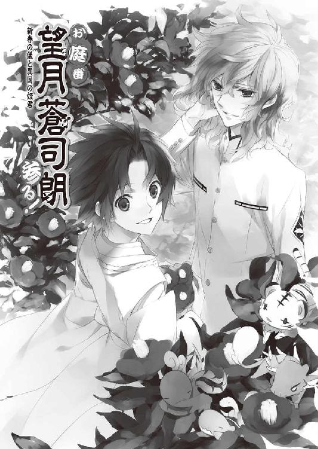
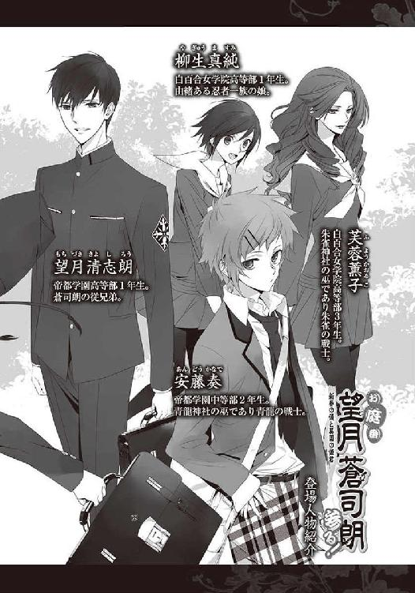
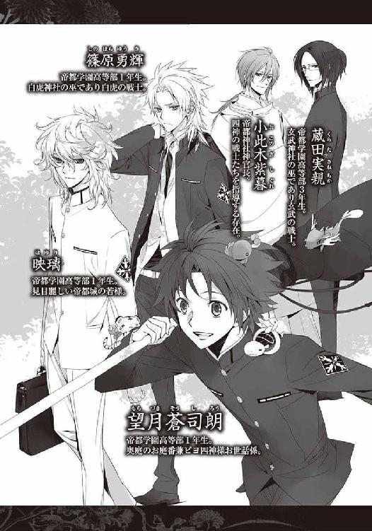
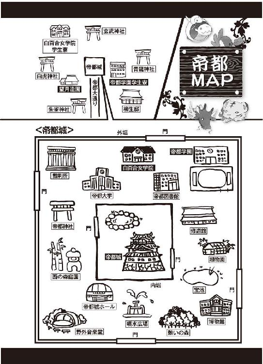
１
首都帝都、華やかなる中心地、帝都城は二重の堀に囲まれた、強固な結界領域である。
帝都で最も有名な観光名所であり、帝都民の憩いの場である帝都城には、連日大勢の人々が集う。それは、ほとんどの店が商売を休んでいる、正月三箇日であっても。
帝都城ホールや野外音楽堂では華やかに寿ぐ新春特別公演が行われ、修道館は元日稽古に励む武道家が爽快に汗を流している。噴水広場や憩いの森には大道芸人が集まって、獅子舞などの新春恒例の芸を披露し、歓声があがっている。
消防の出初式の梯子乗りは、噴水広場から離れた内堀の中からもよく見えた。
「ミギャギャ！」
「キュイキュイ！」
「チュッピピピ！」
「「（しゅーしゅーしゅー）」」
「興奮しない！ まだ始まったばっかりだから！」
柄の長い枝打ち斧を担いだ望月蒼司朗は、頭の上や懐など、身体のあちこちにくっつけた、ピヨピヨした小さな四神を宥めながら、噴水広場に急ぐ。
（ったく、もう）
もぞもぞむにむにするピヨ四神に、蒼司朗は苦笑する。
巌手圏で生まれ育った蒼司朗にとっては、帝都で初めて迎える正月だが、奥庭の四神様は、帝都が都となってから、何度も過ごしてきた正月だ。特に珍しいことなどないはずなのに。
帝都学園高等部一年生の蒼司朗は、帝都城お抱え庭師・望月造園の見習い庭師であり、帝都城奥庭の管理を任されたお庭番で、帝都神社の神官見習いだ。
元日の今日は、朝から帝都神社に呼び出され、蒼司朗は新春の朝賀に行ってきた。帝への挨拶なんて恐れ多いが、これもお庭番に任命された者のお勤めである。
あれもこれも見習いの蒼司朗は、帝都学園の制服を着ることにした。観光地である帝都では、住民も帝都を構成する要素のひとつと考えられている。冬休みで正月でも、制服姿で外出している学生は、大勢いる。
内堀の東門から出た蒼司朗は、宝池を左手に見ながら、遊歩道を憩いの森方面から噴水広場に向かう。
蒼司朗が走っていく途中にも、猿回しや南京玉簾などの大道芸人がいて、あちこちで賑やかな人だかりができていた。
「────ミギュ☆」
懐から顔を出していたチビ白虎が、むずかるように鳴いた。
「キュオー」
蒼司朗の後ろ襟にくっついておぶさっているチビ青龍が、身体を揺する。
「ピピッ！」
蒼司朗の頭の上にお座りしたチビ朱雀が、風見鶏のように手羽を上げる。頭上のチビ朱雀の姿は蒼司朗には見えないが、上に乗っている雰囲気で、どんな格好をしているのかはわかる。
「あっち？」
走る速度を落とした蒼司朗は、人だかりができているほうに目をやる。
「「（しゅーしゅーしゅー！）」」
肩の上のチビ玄武も、そっちそっちと顔を向ける。
「何？ あれが見たいのか？」
喜んで興奮していた、さっきまでの様子とは少し違うような気がするが、蒼司朗は人垣ができているほうに足を向ける。
目指す先には、獅子舞がいた。
いかにも正月らしい様子で、楽士たちが横で太鼓を叩き笛を吹き、その音に合わせて、二人の舞い手が獅子頭を被って舞っている。獅子あやしと子獅子まで伴っている、編成の大きな獅子舞だった。獅子舞を取り巻いている人垣も、五十人ぐらいいるだろうか。
（獅子舞の獅子頭に齧ってもらえると、その年は無病息災、だっけ）
屈んで、獅子舞に頭を差し出して、かぱりと獅子頭に嚙みついてもらっている人たちを見ながら、蒼司朗は巌手での正月を思い出す。もっと少人数の編成だったけれど、蒼司朗が住んでいた屋敷にも、毎年獅子舞が来ていた。
「ミギュー」
不満そうに唸るチビ白虎に、蒼司朗は眉を顰める。
「何だ？ どうした？」
獅子舞は、正月の縁起ものだ。人垣を成している見物人は、皆笑顔だ。ピヨ四神は、賑やかで楽しそうなものが大好きだったはずなのに。
どこが気に入らないのだろうと、不思議に思っていた蒼司朗は、人垣の何ヶ所かがそっと動いたのを見た。
「キュイ！」
（あれ？）
獅子頭を動かし、舞っている獅子舞とは関係のない、見物人の動き。十人が、さりげなく、しかし確実に、二人連れの見物人を、囲むように動いた。
わずかにだが、前にいた見物人に場所を変えられ、視界を遮られた老夫婦が、獅子舞の見える場所を探して、身体を動かす。前に意識を集中させた老夫婦に、すぐ横に立っていた見物人が、ひっそりと動いた。
そちらに顔を向けることもなく、横にいた男の手が老紳士の懐に向かって動いた。
（────掏摸!?）
ピヨ四神に促され、立っていた場所を少し変えた蒼司朗は、人垣の隙間から見えた現行犯に、驚いて目を瞬く。
催し物や行事が多く、観光客を含む来園者の多い帝都城公園では、置き引きや掏摸などの犯罪行為も多発する。特に来園者の多い休日には、門のところで、持ち物には十分気をつけて、被害に遭わないようにと、注意を促す声掛けが行われている。
帝都警察の警官や、帝都城公園警備部による巡回も行われているのだが、それでも犯罪が頻発するのは、犯罪者の数が多く、手口も巧妙になっているからだ。
複数人数のチームで組んで、人垣で壁を作るようにして犯行に及ぶ掏摸集団を、蒼司朗は初めて目撃した。
「ピッチュチュピ！」
「あぁ、もちろん......！」
足早に近寄った蒼司朗は、掏摸取られたばかりの財布の端を、ひょいと差し伸べた枝打ち斧の柄の先に引っかけ、高く上に飛ばした。
「えっ!?」
「何だ!?」
掏摸取ったばかりの獲物をいきなり飛ばされて、掏摸が驚き、仲間も驚く。急にびっくりして声をあげ、動いた掏摸集団に、被害者である老夫婦や、その他の見物人たちも何事かと驚く。天に向けられた周りの視線を追った老夫婦は、投げ上げられた財布に気づいた。
「まぁ、あれは......！」
「わしの財布......！」
どうして放り投げられているのかわからないが、懐を上から叩いて、そこにあるはずの財布がないことを確かめた老紳士は、手を伸ばし、落ちてくる自分の財布を摑む。何事もなく財布が戻ったことに、老夫婦は身を寄せ合ってほっとした。
掏摸は失敗した。邪魔された。
何も知らない見物人たちは、妙なこともあるものだと不思議がり、宙を舞った財布を見逃した者は何が起こったのかわからず首を傾げる。二、三人ずつに分かれていた掏摸集団は、お互いに無関係であるように、さりげなく場所を移動してばらばらになった。
「ちょっと待って」
学生服姿で怖い顔をして歩み寄ってきた小柄な少年に、獅子舞を見物していた人々は、何事かと怪訝な顔をする。
「「（しゅーしゅー！）」」
チビ玄武は、蒼司朗に教えた。
今日、これまでに何度か犯行に及んでいる掏摸は、盗んだものを持っている。
蒼司朗は枝打ち斧を担いで、善良な見物人のふりをしている掏摸集団に近寄る。
「見てました。まだ持ってますよね？ 向こうで、全部出してください」
公園内の各施設の近くには、公園案内所を兼ねた売店があり、警官詰め所と警備事務所の窓口がある。奥庭のお庭番である蒼司朗は、帝都城に勤務する職員の数に数えられるが、犯罪者を逮捕したり取り調べる権限はない。引き渡すだけだ。
獅子舞は、さりげなく場所を移動する。厄介なことに関わり合いたくないと、獅子舞を見物していた何人かも、見物をやめて離れていった。
「おいおい、また親子喧嘩か？」
「正月早々、嫌ぁね」
「お年玉くらい、ちゃとあげろよな」
人垣から声が聞こえて、警戒していた見物人の間から、失笑が漏れた。
蒼司朗の親に見えそうな年代の者は、見物人の中に何人もいた。誰かが『親子』と言ったから、誰が親なのかはわからなくても、誰かが親なのだろうと、無関係の者たちは思った。
お年玉に関係する、他愛ない親子喧嘩なのだ────。
場所を変えようと移動する獅子舞に、取り巻いていた人垣は、やんわりと崩れた。
「待ってください！」
蒼司朗は老紳士の財布を掏摸取った男を追う。現行犯の掏摸だ。逃がすわけにはいかない。
（こいつら、プロだ......！）
年末に宝具師の屋敷を襲撃した賊とは、また違う種類の。しかもかなりの場数を踏んでいる。
「待てって言ってる！」
無関係を装い、少人数に分かれて足早に歩き去ろうとする掏摸集団を、蒼司朗は追いかける。
（とにかく、さっき財布を掏摸取った男と、連れの女だけでも......！）
蒼司朗一人で十人全部を追いかけるのは無理だ。現行犯の掏摸だけでも捕まえれば、あとの仲間は警察で捕まえてくれる。
帝都城公園の来園者は多い。遊歩道の人ごみを巧みに利用して、掏摸は逃げる。
「何？」
「何だ？ いったい......」
獅子舞の見物人とは違う者たちから、怪訝な視線を向けられ、掏摸を追いかけている蒼司朗は居心地悪い思いをする。だが、盗品を隠し持っている掏摸を逃がすわけにはいかない。
（邪魔だな......！）
行く手を塞ぐように次々に現れる通行人に、思うように距離を縮められず、蒼司朗は焦れる。
「ミギュギュ！」
「え？」
「キュオキュオ！」
「ピピ！」
警戒するピヨ四神に、はっと蒼司朗は足を止める。
「「（しゅー......）」」
蒼司朗の視界から外れるタイミングを計ったように、掏摸が遊歩道から外れて木立の陰に入ったので、蒼司朗は見失わないよう、追いかけて走ったのだが。
（────囲まれてる）
遊歩道から離れた木立の中に誘いこまれた。
それぞれが十分に距離をとっているので、無関係にそこにいるように見えるが、一触即発でいつでも包囲は狭められる。
今、蒼司朗の近くにいるのは、外見こそ帝都城公園でよく見かける、ごく普通の来園者のようだが、全員掏摸集団の人間だ────！
（十人じゃなかったんだ......）
蒼司朗の想像を超えた、もっと大きな掏摸集団が、帝都に入りこんでいた。
犯行に及ぶ掏摸を、近くにいる仲間が壁になって隠し、誰かに見つかって追われても、離れた場所にいた他の仲間が、追手をさりげなく邪魔して、逃がしていた。一度の犯行で、ある程度の金銭を奪い取れるよう、身なりがよく、大金を持っていそうな者だけを狙っている。
蒼司朗がさっき掏摸から取り返した財布は、かなり中身が詰まっていて重かった。
そして、その集団の中には、小学生やもっと幼い子供もいた。
（何だよ、これ......。親子？ それとも......）
視線を落とした蒼司朗は、枝打ち斧を握る手を震わせる。
生まれてくる子供は、親を選べない。
どう育てられるのかを選べない。
「......あんたたち、最低の掏摸だ......！」
吐き捨てるように言った蒼司朗に、来園者を装っていた掏摸集団の男が眉を顰める。
「おい......！ 妙な言いがかりつけるな」
「言いがかりかどうかは、あんたたちが一番よく知ってるはずだ！」
蒼司朗は周りを囲む者たち全員に聞こえるような大声で怒鳴った。
（何でこんなこと......！）
言わなくてはならないのだろう。蒼司朗は虚しくて悲しい。
だが、蒼司朗は奥庭のお庭番であり、奥庭の四神が不快に感じることをそのままにしておくわけにはいかない。帝都城で不埒な行いをする者を、許すことはできない。
蒼司朗は高校一年生だが、学年一小柄な少年だ。面差しも優しい感じなので、典型的な社会的弱者に見える。その印象は、刃に袋を被せた枝打ち斧を手に握っていても、変わらない。
大道芸のお囃子の音や観客の歓声はすぐ近くに聞こえるが、蒼司朗が誘いこまれた場所は、遊歩道から見えない。人の目につくところには、何人かで組を作った掏摸たちがさりげなく立っていて、邪魔されないように見張っている。
さっきの獅子舞のときのように、親子喧嘩だとか聞こえよがしに言われたら、顔見知りでない者は身内の揉めごとかと、流してしまうだろう。
非道の暴力の前に、多くの者は屈する。道理は簡単に、ねじ曲がる。しかも、大人と子供で多対一という、圧倒的な力の差がある。
小柄で子供っぽい蒼司朗のような少年なんて、ちょっと脅しつければ、簡単に黙らせることができるように見える。
「このガキ......！」
図体のでかい男が、蒼司朗に近づき、凄んだ。
殴りかかられれば拳の当たる距離で見下ろされながら、蒼司朗は男を真っ直ぐに睨みつける。
「ガキだよ！ ガキの前で、大人が恥ずかしいことするな！」
暴力の気配にまったく怯むことなく、大柄な大人の男を真正面から怒鳴りつけた蒼司朗の剣幕に、凄んだ男のほうが驚く。
蒼司朗はひとつ呼吸を整え、枝打ち斧の刃に被せていた袋を取った。
磨きあげられた刃の輝きを見て、周囲にいた者たちに、はっと緊張が走り、蒼司朗に近づいていた男は飛び退いて距離を取る。
非力な少年の細腕で振り回される棒なら、易く止められるが、刃物となれば話はいくらか変わる。
枝打ち斧を隙なく構えた蒼司朗の姿に、いくらか剣道のわかる者が、むっと眉を顰めた。
（こいつ......！）
素人ではない。
「あ、やっぱり間違いない！ あいつ、『巌手のブルー・ムーン』じゃん！」
遊歩道にいたときに蒼司朗を見つけて追いかけてきたのだろう、修道館からの帰りらしい他圏の剣道着姿の少年が、歓声をあげた。
「巌手の圏大会で優勝したのに、全国大会に出なかったっていう、あの？」
「そーそー！ 幻の少年剣士！」
「あれ、帝都学園の制服じゃん？ こっちに進学してたのか」
わらわらと集まってきた十数名の剣道少年たちに、蒼司朗を人気のない場所に誘いこんだはずの掏摸たちは、内心舌打ちする。
少年一人だから、黙らせるのは簡単に思えた。数が増えては、面倒だ。
一斉に別方向に逃げだそうとした掏摸集団より先に、蒼司朗が動いた。
「────お庭番、望月蒼司朗、参る！」
２
帝都城公園は、元日早々何台もの救急車が緊急出動する、前代未聞の大騒ぎとなった。
「新年早々、やってくれましたねぇ......」
社務所を訪れた小此木神官長は、奥の間で恐縮して小さくなっている蒼司朗を前に、喉を鳴らして笑った。
「帝や若様も、驚かれてましたよ」
「......すみません」
「いえ、誰も怒ってませんよ。でも、相変わらず、大胆ですねー」
（姿形は小さいのに）
笑いの止まらない小此木神官長は、口許を隠して肩を震わせながら、蒼司朗の周りのピヨ四神を見る。
小柄で、まだ幼く見える蒼司朗の掌に乗るような赤ちゃん動物の大きさなのに、奥庭の四神様の威光に変化はまったくない。
「ミギュギュ」
「キュイキュオ」
「チュピ」
「「（しゅー）」」
ピヨ四神は正座する蒼司朗の周りで鳴きながらくるくると動き、前肢タッチしたり、鼻面すりすりする。ちっちゃくて柔らかくて温かいものが、周りをうろうろしたり、きゅんきゅんとくっついてくるのは、くすぐったい。
心配しているピヨ四神に、そっと蒼司朗は微笑む。
（オレは大丈夫だから）
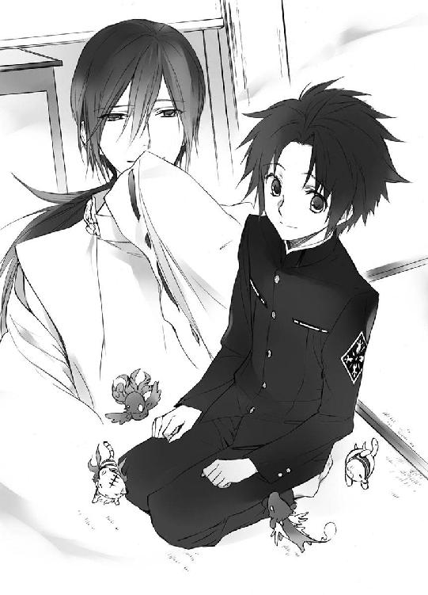
蒼司朗が突飛な騒動を起こすのは、ピヨ四神がそう望んだからだ。蒼司朗が正義感に突き動かされて行動しただけでは、帝都城公園一帯を巻きこんでの大騒動にはならない。
「────あの、剣道の香永和の子たちは......？」
彼らには関わりのないことなのに、近くにいたという理由で、結果的に彼らまで巻きこんでしまった。
蒼司朗が打ち振るった枝打ち斧は、蒼司朗を中心とする波紋のように、眩い虹の光を放った。
帝都城公園一帯に瞬く間に広がった奥庭の四神の神聖なる力は、心卑しい掏摸集団に強烈な一撃となって襲いかかり、彼らを一斉に昏倒させた。
元日から窃盗行為に精を出す、迷惑極まりない犯罪者たちも、外見ではまったく見分けられない。蒼司朗の放った虹の光は、霊力のない者たちにとっては、一瞬何か、吹き抜ける風に似たものを感じとれても、目には見えない。
奥庭の四神による罰が当たった犯罪者たちは、突然に様子を変え、ばたばたと倒れた。周囲にいた善良な来園者たちは、突然倒れた者たちの姿に仰天した。
小此木神官長は帝や若様といっしょに帝都城でお茶をしていて、事態に気づいた。
帝はすぐさま救急車を出動させ、罰当たりどもを回収するよう命じた。恐慌をきたしかけた来園者たちには、帝都城公園の警備員や公儀隠密の出動を要請し、誘動するよう、指示を出した。
速やかに現場に到着した救急車は、昏倒している者たちを手早く乗せて、走り去った。
帝都城公園のあちこちに分かれた警備員や公儀隠密は、残された来園者に、紛失した物がないか、所持品の確認を呼びかけた。
原因不明の失神をした者のことは気になったが、掏摸の被害に遭っていた来園者たちは、それどころではない。公園内の警備窓口は、被害届を出す来園者が大勢押しかけた。
救急車で帝都警察附属病院に緊急搬送された『罰当たり』の数は、二百三十六名。
昏倒者の住所氏名の確認のために調べられた所持品からは、被害者から盗まれた財布や貴金属品、偽造された身分証明書が、ごっそりと出てきた。
恐れ知らずにも帝都城の元日の人出を見こんで、稼ぎ時と足を運んだ常習犯の掏摸や置き引きたちは、見事に粛清された。
記録に残る大手柄である。
「帝都日報の号外が出ましたよ」
届けられた号外を受け取って、小此木神官長は蒼司朗に見せびらかした。
通常、新年三箇日は、新聞社にとって休刊日だ。しかし、帝都城における掏摸集団の一斉逮捕は、一大ニュースである。天罰を受けた犯人たちのことを、報道しないではいられない。
新春の謎の集団失神と恐れられた事態は、『帝都の奇跡』に変わった。
号外には、でかでかと『帝都の奇跡』の文字が印刷されている。
何の後遺症もなく意識を回復した犯罪者たちは、そのまま速やかに逮捕され、被害届の出ていた物は、すべて正しい持ち主の手に戻った。
蒼司朗は悪い人にだけピヨ四神の力が影響を及ぼすのかと思っていたのだが、あのとき、蒼司朗を見つけて近くに寄ってきた香永和圏の剣道場の少年たちも、くったりとした様子であの場に座りこんでしまった。
蒼司朗は思ってもいなかった事態に驚いたが、彼らにどう声をかければいいのかわからない。呆然としていたところを、公儀隠密の柳生真純に発見され、その場を離れて帝都神社に行くよう指示された。
「オレ、こんなことになるなんて......」
これまで蒼司朗は、帝都城で仕事をしていたときに不埒な引ったくり犯を見つけて、成敗したことが何度もあったが、今回のような大騒動になったのは、初めてだ。
謎の集団失神で帝都城公園一帯を驚愕に陥れた元凶である蒼司朗は、逃げるように帝都神社の社務所に向かった。何台もの救急車のサイレンを聞いたが、あとのことは知らない。耳を塞ぎたい気分だった。
帝都日報号外に掲載されている何枚もの写真に、小此木神官長は苦笑する。
「ちょっと、規模が大きかったですね～」
奥庭の四神の力の発動だからよかったが、別の原因で同様の騒動になったのなら、テロ事件か何かだ。
鈴宮神官は、小此木神官長と蒼司朗にお茶を運ぶ。
「香永和圏の剣道場の人たちのことは、心配ありませんよ。四神様が、記憶を少し弄られただけです。皆さん、師範と電車に乗って、元気に帝都から香永和に帰られました」
彼らの様子をきちんと見届け、柳生真純は鈴宮神官に報告してくれた。
「そう、ですか。よかった......」
「ミキュ」
「キュウ」
「チュン」
「「（しゅー）」」
ほっと肩から緊張の抜けた蒼司朗の膝に、いそいそとピヨ四神がよじ登る。
「ごめん。そうだよな」
ピヨ四神は悪い人を懲らしめたかっただけだ。
帝都城を訪れる者たちが、安心して楽しめるように。
ピヨ四神を疑うつもりはなかったが、昏倒した掏摸集団の他に、剣道場の少年たちまでが魂を抜かれたように力ない様子で座りこんでしまった。
見えない遠くで次々に悲鳴のあがった、ただならないあの状況は、何も知らない来園者たちだけでなく、奥庭の四神の力を行使した蒼司朗にとっても衝撃的だった。
蒼司朗はピヨ四神を両手で抱き上げ、ぎゅっと抱っこする。
「ちゃんとオレのこと、考えてくれてるのに」
お庭番云々のことは、帝都城のことをよく知らない部外者に説明するのは面倒だ。
記憶をほんの少し弄ったなら、彼らが蒼司朗を見つけなかったことにできる。蒼司朗があの場を急いで離れれば、何の説明もしなくていい。
「ミュウン」
「キュン」
「ピピ」
「「（しゅー）」」
抱っこされたピヨ四神は、きゅうっと目を閉じて、好き好きと蒼司朗に頰擦りして甘えた。小さな舌で頰を舐められ、蒼司朗は笑う。
「くすぐったいってば」
小柄な少年である蒼司朗と、ピヨ四神。ミニマムな仲良し姿は、ほのぼの癒し系だ。
年末からほとんど休みなしで、初詣の参拝者に応対し、謎の昏倒騒ぎで出かけた神官のフォローまで行った鈴宮神官は、予定外の作業が増えて疲れていたが、ピヨ四神と蒼司朗の姿を見ていると、すっと身体が軽くなる気がした。
「蒼司朗様は、剣道でも人気ですからね」
「柳生翁にも狙われてますよねー、蒼司朗くん」
悪戯っぽく小此木神官長にウインクされ、蒼司朗は口を尖らせる。
「狙われてるんじゃなく、誘われてるんですよ。柳生真陰流の門下生にならないかって。現実的に無理ですけど」
帝都でも名門の道場、柳生真陰流の門下生になれるなんて、剣道少年にとっては夢のようなことだが、蒼司朗には圧倒的に時間がない。
巌手から帝都に出てきた蒼司朗が、剣道から離れたことを、残念に思っている人は多い。柳生道場の門下生に、手合わせを願われることもあったが、あれこれと多忙な蒼司朗にはそれに応える余裕はなかった。
「子供の前で大人が恥ずかしいことをするなって、怒鳴ったそうですね、蒼司朗くん」
小此木神官長の言葉に、ピヨ四神をいつもの位置にくっつけた蒼司朗は、どきりとして顔を上げる。
「あれは......！」
蒼司朗が怒鳴った言葉は、正確には、子供ではなくてガキだが。
唇を嚙み、一度視線を横に逸らし、蒼司朗は尋ねる。
「......子供も、連れて行かれたんですよね......？」
掏摸たちが連れていた、子供。蒼司朗が放った虹の光で、大人も子供も、いっしょに昏倒していた。
犯行現場に連れて行かれる子供は、掏摸たちにとって、警戒されることなく人の中に紛れこむための『アイテム』だった。悪いことを悪いと教えられないまま、子供たちは育てられていた。
「あの子たちは『保護』されました」
ゆっくりと小此木神官長は蒼司朗に教える。
「逮捕され、罪を償う親とは別に、きちんとした施設で、正しい教育を受けさせるよう、帝が命じられたのです」
「そう、ですか」
「親子を引き離すのは、可哀相ですが、あの者たちの場合は、いっしょにしないほうがよいでしょう。赤ん坊のオムツの中に、盗んだ貴金属品を隠していた者もいましたから」
あの掏摸集団たちは窃盗の常習犯で、集団で帝都城公園の来園者を狙っていた。計画的犯罪者であり、親でありながら無垢な子供たちをそれに利用し、巻きこんだ。共犯者にした。
厳罰に処せられてもおかしくない、許し難い行いだ。
鈴宮神官は溜め息をつく。
「悪いことをして手に入れたお金を、仕事をして働いて得たお給料のように偽る泥棒のことは、話に聞いたことがありましたけど......」
毎月の給料として偽造した給料袋に入れて妻に渡し、平凡な労働者を装って妻子を養っていた泥棒のニュースを、鈴宮神官は思い出していた。
給料袋に盗んだ金を入れる泥棒のほうが、子供を犯行現場に同行させる犯罪者より、人間としていくらかましな気がすると鈴宮神官は思う。少なくとも、自分が泥棒をしていることを、妻子に知られたくないと隠しているところに、罪悪感が残っている。父親が泥棒でも、父親だけが泥棒で、泥棒一家ではない。
子供連れであることを見せて、被害者の警戒を解き、近づいて盗みをする連中よりは、ずっと羞恥心を持っている。
「蒼司朗くん、今日逮捕した者のなかに、中高生は、ほとんどいなかったでしょう？」
「あ、はい」
小此木神官長の言葉に、蒼司朗は頷く。
「小学生とか、もっと小さい子だけでした」
少なくとも、蒼司朗の見ていた範囲では、そうだった。
「今回のような一斉逮捕ではありませんでしたけど、以前にも、あの掏摸集団が逮捕されたことがあるんですよ。そのときの子供も、保護されて、親とは別の場所で暮らしています」
「それって......」
不安な目を向ける蒼司朗に、小此木神官長は寂しく微笑む。
「誰も話してませんけどね。たぶん、あの子たちは知っているでしょう」
親が犯罪者であり、保護者として相応しくないから、引き離されたのだと。
他人のものを盗んではいけません。道徳教育で、その決まりごとを厳しく教えられ、子供たちは正しい社会人として成人するよう、見守られる。
「厳しい決まりごとですが、現在の我が国では、三親等以内に窃盗などの罪で服役した肉親のいる者は、法律や行政、神職に携わる職業には就けません。大手金融機関でも、職員として採用されることはありません。たとえ本人に、何の落ち度もなくてもね」
修学年齢を終え、就職する頃になると、『守られる時代』は終わる。『大人』は苛酷な現実と向き合わなくてはならなくなる。
「気の毒なことですが、賢くて優秀な子供ほど、大変でしょう」
出る杭は打たれるの言葉どおりに、素晴らしさで目立つと、妬みや嫉みの対象になり、貶めようと躍起になられるものだ。追い落としたい者たちは、どんな些細な失敗や小さな汚点でも、見つけ出してくる。
いくらか色眼鏡で見られるだろうことを、自分で言いふらしたい者はいない。聞かれなかったから話さなかっただけのことでも、露顕したときには『隠した』と思われるのが常だ。
親が喜ぶからと、物心つく前に、悪いこととはわからないままやっていたことも、過去の己の所業として、重くのしかかってくる。
「清廉潔白は、時に残酷なものですから」
小此木神官長の言葉に、蒼司朗は軽く唇を嚙む。
蒼司朗は奥庭の四神の望む、正しいことをしたけれど────。
（オレが、あの子たちの『幸せ』を壊した）
それは一般的には『間違った幸せ』であっても、あの子供たちにとっては不満のない『最高の幸せ』だったかもしれない。
「......オレ、帝の命を狙ってやってくる暗殺者や、人の命を奪うことに躊躇いのない凶悪窃盗団を成敗しているほうが、ずっと楽です」
溜め息をついた蒼司朗に、小此木神官長は微笑む。
「あぁいう連中は、悪人として分類するのも、簡単ですからね」
成敗する側も、襲ってきたから戦った、で片づく。
「今日捕まえた連中は、殺人まではしないようですが、犯行現場を見つけた人を脅して口を噤ませていたようです。口を噤んでしまうと、それは『見逃した』ことになります。それをネタに強請ることもあったようですから、蒼司朗くんが成敗してくれてよかったですよ」
奥庭の四神の加護を受けている蒼司朗は、成敗した犯罪者たちの記憶に、容姿が残らない。特徴がよく思い出せないので、逆恨みされて、後から御礼参りされたり、仕返しされることはない。
「あの連中が連れてたのが、あの人たちの本当の子供かどうかわからなかったけど、オレ、子供を連れて掏摸とかやるのって、すごく情けなくて腹が立ちました。まだ何もわからない子供にあんなの、よくない」
視線を落とす蒼司朗を励ますように、そっとピヨ四神が蒼司朗を舐める。
「盗んだお金で、物を買って......。泥棒の手を離れて、お店の売り上げになったお金に、汚れた『盗まれたお金』って印はついていません。買われた物は、盗んだ物じゃないけど、それは間接的に『盗んで手に入れた物』であることに変わりないです。そうしてご飯を食べて、作りあげられていく身体って、オレは嫌です。どんなに頭がよくて、機転が利いて、運動が得意でも、その力を泥棒に使っちゃいけないと思います」
「────子供は親の背中を見て育つといいますね」
鈴宮神官の言葉に、小此木神官長は頷く。
「僕や鈴宮くんは、神社の子供に生まれて、神官である親を見てきました。蒼司朗くんのお父様は、巌手城のお抱え庭師でしたね」
共に立派に仕事をしている親の姿を見て、大きくなった。
「世の中にはたくさんの人がいますが、親の職業と同じ道に進みたいと、憧れを持てるのは、素晴らしいことですね」
小此木神官長の言葉に、蒼司朗は誇らしい気持ちで頷いた。
３
一件落着して、蒼司朗が帝都城を出たのは、昼を少し回る頃だった。
ピヨ四神にはミルクとお餅を食べさせたが、帝に新年のご挨拶に行かなければいけないと緊張して、蒼司朗は朝食が喉を通らなかった。
緊張が解けたら、お腹が空いた。
「遅くなっちゃったな。お腹空いたよな？ 早く帰って、お雑煮とお節料理食べような」
「ミギュ？」
「キュイ」
「チュピッ」
「「（しゅーしゅー）」」
何か美味しいものが食べられるらしいと、チビ白虎たちは目を輝かせる。
「お正月だからって、暴飲暴食はダメだぞ？ ちゃんと食べさせてあげるから、勝手にお重に顔つっこんじゃダメだからな」
「ミキュキュ」
「キュイキュイ」
「チュピピ」
「「（しゅーしゅー）」」
言い聞かせる蒼司朗に、ピヨ四神は機嫌よくお返事をする。蒼司朗に甘えたいピヨ四神は、蒼司朗が食べさせてくれるなら、いつだって大満足だ。
「よし、いい子だ！」
早く帰ろう、いっしょに美味しいもの食べようと、うきうきし始めるピヨ四神に微笑んで、枝打ち斧を担いだ蒼司朗は、軽くランニングするような足取りで帝都大通りを行く。
帝都大通り公園の上空には、優雅に連凧が上がっていた。
商店は松飾りをつけて正月休みだが、参拝客を見こんで、露店はあちこちで営業している。帝都城公園と同じように、車の通行がまばらな帝都大通りの辺りにも、色々な大道芸人がいて、賑やかなお囃子や歓声が聞こえる。
「清ちゃんや伯父さんたち、もうお昼食べたかなぁ」
そんなに遅くならないはずと言って出かけたのに、すっかり遅くなってしまった。
帝都城公園で聞こえた救急車のサイレンで、何かあったようだと予測できただろうし、帝都日報の号外も配られたので、蒼司朗が話さなくても、事情はもう知っているかもしれない。
優しくて頭もいい、蒼司朗の自慢の従兄弟の清志朗は、お昼ご飯をいっしょに食べようと、待ってくれているような気がする。
望月造園は、帝都の西地区にある。蒼司朗は帝都城公園から帝都大通りを南下して、西に曲がって帰路につく。
望月造園の見習い庭師の雑用で、あれこれと使い走りをさせられて、帝都の町にも慣れてきた蒼司朗は、帝都大通りから西に向かう道に入り、細い裏路地を使って近道する。
「......ピ」
蒼司朗の頭の上に乗っていたチビ朱雀が、きゅるりと首を巡らせ、望月造園のあるところとは違う方向を見つめた。
「（......ミゴ）」
蒼司朗の懐に入ってぬくぬくしているチビ白虎が、むずかるように少し動く。
襟足にしがみついて、蒼司朗におぶさっているチビ青龍の鼻息を感じ、蒼司朗は目を瞬く。
「どうかしたか？」
速度を緩め、問いかけた蒼司朗に、肩に乗っていたチビ玄武が、何だか難しい顔で舌をぴろぴろさせる。
「どうした？ お前ら」
何か様子が変。
首を傾げた蒼司朗は、数名の男が、きょろきょろしながら歩いているのに気づいた。
（何だ？ 何か探してるのか？）
だが、年始の挨拶に行く家を探しているという様子ではない。
男たちは、年始の挨拶や初詣帰りらしい晴れ着姿の者たちと何人か擦れ違ったが、何かを尋ねる様子はなかった。
（おかしい......）
新年を寿ぐという様子ではない。
何かこう、ぴりぴりしているような、嫌な緊張感が伝わってくる。
この雰囲気を、蒼司朗は知っている。
（────『殺気』だ......！）
何か武器を隠し持っている者が放っている、不穏な気配。それを感じる。
「────あの男か？」
ポストの前で足を止め、背を向けて男たちを見送った蒼司朗は、ピヨ四神に問いかける。
帝の暗殺を企てる者とは、ちょっと雰囲気が違うように蒼司朗は思うのだが。
「......ギュココ」
「キャオ」
「違う？」
（何か煮えきらないなぁ......）
首を傾げた蒼司朗は、はっとする。
「ちょっ、お前ら、ひょっとして、オレが腹減った、早く帰ろうって言ったの、気にしてるのか？」
確かに蒼司朗は朝から大手柄だが大騒動でもある事件の元凶となり、何だかぐったりして、さっさと家に帰ってひと休みしたい気分だったけれど。
「オレなら大丈夫だよ。お前らが望むなら、がんばるから」
ピヨ四神は、帝都を平和に導きたいと望んでいる。その手伝いができるのは、蒼司朗だけだ。
「行こう！」
枝打ち斧をしっかり握って促した蒼司朗に、躊躇っていたピヨ四神は顔を上げる。
「ピッ、ピピッ！」
蒼司朗の頭の上に座っていたチビ朱雀が、ぴしっと右の片手羽を上げ、風見鶏のように方向を示す。
「あっちだな！」
「ミギュギュ！」
「キュイキュオ！」
「「（しゅーしゅーしゅー！）」」
一転して、急げ急げと急きたてるピヨ四神に、駆けだしていきながら蒼司朗は苦笑する。
（本当に遠慮してたのかよ☆）
蒼司朗のことを気遣っていたらしい。
何かを探している男たちに、ピヨ四神は目もくれなかった。男たちよりも、男たちの探しているもののほうが重要らしい。
ピヨ四神の加護を受けている蒼司朗は、見つかって男たちに不審に思われることなく、土産物の商店の並ぶ細い通りに入った。
いつも賑やかな、帝都の有名店ばかりが軒を連ねる通りも、元日は正月休みでどこも閉まっていて、人通りもなく閑散としている。
「ピ、ピピ、チュン！」
「こっちか！」
チビ朱雀の先導に従って、蒼司朗は目的の場所に急ぐ。
そこは、商店と商店の間、道の端に寄せられた看板に隠れた、壁と壁の細い隙間だった。
（誰か、いる？）
ぱっと見、人が入りこむには狭くてとても無理そうだが、よーく見ると入れないこともなさそうな感じだ。
「ミギュギュ」
懐から顔を出した白虎に見上げられ、蒼司朗は頷く。
そっと近寄った蒼司朗は、隙間を覗きこんだ。
「────誰かいますか？」
問いかけた蒼司朗の声に。
「近寄るでない！」
幼い声で、拒絶の言葉が返った。
（え？ 子供？）
舌足らずな具合が、かなり幼い。
怯えさせてはいけない。
「どうしたの？ 大丈夫？ お巡りさん、呼ぼうか？」
怖がらせないように、蒼司朗は呼びかける。
蒼司朗の声は、まだ大人の男にはほど遠い、少年っぽいものだ。
「キュイキュイ」
蒼司朗におぶさっているチビ青龍が、下、下、と促す。
（下？）
警戒する猫のような、低い位置から視線を感じ、蒼司朗は視線を落とす。
（おわ！）
看板の足の下という物陰から、見上げる瞳の輝きがあった。
猫でもいたのかと思ったが、猫よりも大きい。
（子供、だよな）
見上げる瞳に、蒼司朗は微笑みかける。
（怖がらせない怖がらせない......！）
そんなに下から見上げられるとは思っていなかった蒼司朗は、かなりびっくりしたけれど。
物陰にしゃがんで蒼司朗を見つめた瞳は、ぱちぱちと瞬きしたらしく、何度か瞬く。
「────そちは、悪人ではなさそうじゃな」
「ミギャギャ」
「キュイキュオ」
「ピピッチュ」
「「（しゅー）」」
保証するように、ピヨ四神が鳴いた。
（おいおい☆）
帝都城を出るとピヨ四神の姿は、霊力のない一般の人の目には見えなくなる。鳴き声も聞こえないはずだ。
ごそごそっと頭を引っこめる気配がして、看板の下から見上げていた視線が消えた。
看板の横に小さな人影が現れる。
「帝都城まで行きたい。褒美をとらす。我と連れの者を連れて行け」
胸を張って看板の横に現れたのは、踝丈の長い外套のフードを目深に被った、幼稚園児ぐらいの子供だった。
喋り方が、どうにも爺くさい。
（お祖父ちゃんっ子かな）
側にいる人や、身の回りの世話をしてくれた者が誰かで、小さな子供の口調は変わる。喋り方や言葉がそっくりになるものだ。
「帝都城？」
「そうじゃ」
「連れの者って？」
「後ろにおる」
振り返る子供の視線を追った蒼司朗は、路地に置かれたダンボール箱のように見えたものが、外套に身を包み隠した人間だったことに気づいた。
男性のようだが、浅い呼吸をしている。
「────具合が悪いのか？」
「出るときには大丈夫じゃと言っておったのだが......、途中で近道をしたのが悪かったのかもしれぬ」
子供は口惜しげに唇を嚙む。
血の匂いはしないが、水の匂いはする。
（川に入ったのかな？）
蒼司朗は思う。男性の足元には、水溜まりができていた。たとえ膝下の深さであれ、冬の寒空に、凍りつきそうな水の中に入るなんて、ただごとではない。
子供が『連れ』と言っているので、父親や兄のような身内ではないように思える。子供の着ている外套は、型はありふれているが、素材がよさそうなので、どこかのお金持ちの子供かもしれない。男は、使用人だろうか。
どんな事情があるのかはわからないけれど、ピヨ四神が助けたいと思うのなら、蒼司朗は手を貸すだけだ。
「帝都城まで送っていくけど、先に、オレの家に寄ろう。ズボンを乾かすか、伯父さんのを借りて着替えたほうがいい」
「......お気遣いハ、無用でござル......」
何となく発音の怪しい、掠れた声で、路地裏にしゃがんでいた男は言った。そして、大丈夫だと見せるように壁に凭れながら腰を上げ......、ぐらりと上体を傾けた。
「危ない！」
路地に入りこんだ蒼司朗は、腕を伸ばして男の身体を支える。
（うわ、すごい熱だ！）
男の身体はちょっと触れただけでわかるほど、発熱していた。
（この二人、いったいいつからここにいたんだろう）
五分や十分という感じではない。もっと長時間と考えると、さっきうろうろしていた男たちに、焦れのようなものが感じられたのが、納得できた。
「ズボンの濡れている人は、帝都城には入れてもらえませんから」
言い聞かせるように、蒼司朗は男に言う。帝都大通りに出て人力車を捕まえれば、帝都城まで連れて行ってもらえる。帝都城公園に入ることはできるが、不審者扱いは免れない。
「すぐ近くです」
蒼司朗は、男を背負うように肩を貸す。男は細身だったが、かなり背が高かった。蒼司朗は小柄なので、背負った男の足は完全に地面に着いていた。
ぐったりした男は、蒼司朗の背中に全体重をかけていたが、ピヨ四神がフォローしているので、蒼司朗が重さでよろめくことはない。
男を背負って路地から出ながら、蒼司朗は子供に尋ねる。
「歩ける？」
「近くであろう？ 大事ない」
「オレから離れちゃダメだよ？ 迷子になっちゃうからね」
「うむ」
しっかり頷いた子供に、手を繫ごうと、蒼司朗は手を差し出す。
「......」
子供はびっくりしたように、差し出された手と蒼司朗を見比べ、そしておずおずと自分の手を重ねた。
吐息を白くするほど外気は冷たかったが、蒼司朗の手に触れた子供の小さな手は、ふくふくとしていて柔らかく、温かかった。これも健やかな命を象徴するピヨ四神と同じく、幸せな感触だ。この世に生まれ、育っていく新しい命。子供が、時代を繫ぎ、世界を作る。
柔らかい小さな手を大事に握り、蒼司朗は子供と手を繫ぐ。
「行こう」
男を背負い、子供を連れて、蒼司朗は望月造園に急ぐ。
不審な男たちは、まだ近くをうろうろしていたが、ピヨ四神の加護で、蒼司朗は見つかることなく、無事に望月造園に帰り着いた。
「ただいまぁ！」
裏木戸を開け、蒼司朗は望月造園の敷地に入る。
蒼司朗と手を繫いだ子供は、ぽかんとした様子で周りを眺めていた。家の裏側は、完全に造園業の作業用の空間なので、雑然としている。土や緑の匂いも濃い。
蒼司朗の声を聞きつけて、屋敷の中の人間が動いた。
「蒼ちゃん？ 遅かったのねぇ。おかえりなさい」
縁側に出てきた蒼司朗の伯母の梢は、蒼司朗の姿を見て、目を瞬く。
しかし、そこは蒼司朗の伯母。慌てず騒がず。
「あらあら。お客様？ あけましておめでとうございます」
おっとりにっこりと挨拶され、蒼司朗と手を繫いでいた子供は、ぴしっと背筋を伸ばした。
「あけまして、おめでとうございましゅ」
初対面の大人に緊張したのか、ちょっと語尾が怪しくなったが、そこはご愛嬌だ。
子供の愛らしさに、ころころと梢は笑った。
「さぁさぁ、上がってくださいな。清くーん、ちょっと手を貸してー」
「────はーい」
奥から返事が聞こえ、蒼司朗の従兄弟の清志朗が縁側に出てくる。
きゅっと力の入った手から、子供が緊張したのが蒼司朗にもわかった。
今度は、最後まできっちりと、失敗せずに。
「あけましておめでとうございます」
小さいのに、大人びた様子で挨拶した子供に、清志朗は驚く。
「あけましておめでとうございます」
子供相手に律儀に挨拶し返した清志朗に、梢は微笑む。
「お父さん、酔い潰れちゃったみたいで、困っちゃったわね。中で寝かせてあげましょう。客間にお布団用意してくるわね」
まぁまぁ大変と、梢は奥に入っていった。
蒼司朗に背負われて、顔も上げない男に、正月の酔っ払いを拾ってきたのだと、間違われたようだ。
動けない父親に往生している子供を、蒼司朗が保護したように見えたのだろう。
（酔い潰れちゃったって、そんな）
何か違うのではないかと、清志朗は思う。
元日早々、お年始に来た小さい子供連れの父親に、そこまで羽目を外させるだろうか。
「この人、お父さんとかじゃなくて、この子の『連れ』なんだって」
「そうなんだ？」
蒼司朗に言われて、清志朗は考える。子供との関係はよくわからないが、子供のお屋敷の使用人あたりかもしれない。男も子供も、身なりがいい。
助けて連れ帰ったくせに、蒼司朗一人では手に負えないのが現実だ。必然的に、清志朗が手伝うことになる。
「ごめんね、清ちゃん」
「うん、構わないよ」
嫌な顔ひとつせず、清志朗は微笑む。
「────おう、客だって？」
奥から出てきた伯父の左近にも、子供はがんばって挨拶する。
「あけまして、おめでとうござる」
うわ、失敗した、というように、蒼司朗と繫いだ小さな手に、きゅっと力が入った。
幼い声に、左近は破顔する。
「おう、おめでとうござる」
言い間違いに合わせて、左近は挨拶を返した。
縁側に近寄った蒼司朗は、背負っていた男を座らせるように縁側に下ろした。
倒れないよう、男を支えた清志朗はぎょっと驚く。
「ちょっ......！ この人、すごい熱じゃないか！」
「うん」
蒼司朗と会ったところまでは、何とか意識があったようだが、縁側に座り、清志朗に支えられた男は、高熱で意識を失っていた。
むっと眉を顰めた左近は、男の額に手を当てる。
「ちょっくら行って、大原先生呼んでくら。寝かせとけ」
医者を呼びに行こうと、縁側を下りて下駄を履く左近に、蒼司朗は慌てる。
「伯父さん、先生のところにはオレが......！」
使い走りは、蒼司朗の仕事だ。
「蒼はその子についててやんな」
言われてから、蒼司朗は気づく。
（そうだ、この子......）
頼りになる大人が倒れ、知らない人に囲まれている状態だ。連れてきた蒼司朗がいなくなると、もっと心細い思いをする。
「すぐ戻るからよ」
しっかりと蒼司朗の手を握っている子供に、にっと笑い、左近は蒼司朗の頭を上から押し潰すような勢いで撫でて、カラコロと下駄を鳴らして裏木戸から出ていった。
４
蒼司朗と清志朗は二人がかりで、意識を失っている男を家に上げることにした。
脱がした靴から、ざぱりと水が出て、蒼司朗は驚く。
「うわー......」
「ミギュー」
「キュオー」
「ピチュー」
「「（しゅー）」」
これは冷たいし、気持ち悪かっただろう。見ただけで蒼司朗は渋い顔になり、ピヨ四神も、いやーんな顔になる。
縁側の踏み石の上の水溜まりを見て、清志朗は眉を顰める。
「ズボンの裾も、絞れそうなくらい、濡れてるね」
「靴下もびちゃびちゃだ。濡れてるの、脱がしちゃうか。運んでいく間に、雫が垂れそうだよ」
「仕方ないよね」
見ず知らずの少年に寄ってたかって、靴下やズボンを脱がされるなどとは、助けられた男も思ってもいなかっただろうが、こうなっているのだから、諦めてもらうしかない。
客間に向かう前に、縁側に寝かせて靴下を脱がせる。蒼司朗がベルトを外している間に、清志朗は乾いたタオルを持ってきた。ズボンを脱がして足を拭き、蒼司朗と清志朗は二人がかりで左右から男を支えて、持ち上げる。
「君も、どうぞ」
振り向いた蒼司朗に微笑まれ、子供は縁側によじ登り、靴を脱いで上がった。
「ミギュギュ」
「え？ ついでに？」
「キュオ」
「うーん」
「チュピピ」
「そうだなぁ」
「「（しゅーしゅー）」」
清志朗には見えないし、鳴き声も聞こえないが、男を客間に運びながら、蒼司朗はピヨ四神と何か語っているようだ。
「どうかした？ 蒼くん」
「いや、ついでだから、全部脱がして、楽に寝かせてやったほうがいいんじゃないかって」
きゅいきゅい動いて、ピヨ四神はジェスチャーでそう主張していた。
「そうだねぇ」
ぴしっと絞まったネクタイや、襟に糊の利いたワイシャツは、堅苦しくて楽ではない。
「どうせ寝るなら、楽に寝てもらおうか。寝間着出してくるよ」
「ごめんね、清ちゃん。ありがとう」
礼を言った蒼司朗に、くすっと清志朗は笑う。
「どういたしまして」
濡れた靴やズボンだけでなく、外套やジャケット、ネクタイ、ワイシャツ、蒼司朗と清志朗が二人がかりでひと通り脱がして寝間着に着替えさせた男は、客間に敷いてもらった布団に寝かせた。
高い熱の出ている男は、目を覚ます気配もなく、かなり苦しそうだ。
蒼司朗にくっついているピヨ四神は、心配そうに男を見つめる。
「ミゴゴ」
「うん、冷やしたほうがいいよね」
枝打ち斧を客間の端に置き、学生服の上着を脱いだ蒼司朗は、水の入った洗面器とタオルを支度した。清志朗は縁側に置き去りにしてきた濡れた靴下やズボンだとか、客間で脱がせた男の衣類を片づけるため、うろうろと行き来する。
蒼司朗の連れてきた子供は、ちょこんと行儀よく客間の端に座って、蒼司朗と清志朗の作業を見守っていた。
「......容体は、よくないのか？」
落ち着くのを待って、おずおずと尋ねた子供に、固く絞った濡れタオルで男の額を冷やしてやりながら、蒼司朗は振り向く。
（不安にさせないようにしないと）
「オレはお医者様じゃないから、よくわからないけど、せめて熱が下がるまで、ここで寝かせておいてあげたほうがいいと思うよ」
「......そうか」
しょんぼりと、子供は視線を落とす。
「帝都城には、オレが連れて行ってあげるから、心配しないで」
蒼司朗は子供に、にっこりと微笑む。
小さな子供を連れ回すのは、何かあったら大変だと危惧されるのが普通だが、蒼司朗にはピヨ四神がいっしょにいる。奥庭の四神に加護されている蒼司朗の場合、絶対に安全だ。
何をしに帝都城に行きたいのか、蒼司朗は知らないが、ちょっと行ってくれば、子供の気がすむのかもしれない。
「蒼くんは、帝都城の『奥庭のお庭番』なんだよ」
客間に戻って、ハンガーに男の外套やシャツをかけていく清志朗の言葉に、子供は目を瞬いて、蒼司朗を見る。
「帝都城の奥庭のお庭番？ そちは帝都城の者なのか？」
「うん。この、望月造園もね、帝都城の樹木や花の手入れをしてる、『お抱え』庭師なんだよ。さっき出かけてったおじさん、望月左近は、望月造園の『親方』で、帝都一、腕のいい職人なんだ」
「ほお」
蒼司朗の説明がどこまでわかったのかはよくわからないが、とにかく子供は、帝都一、凄いらしいと受け取ったようだ。
「清くーん、蒼ちゃーん、お昼ご飯にしましょうー。皆でいらっしゃーい」
茶の間から、伯母の梢の呼ぶ声がした。
「はーい！ 今行きまーす！」
「お昼ご飯、まだだよね。いっしょに食べよう？」
「ミギャギャ」
「キュイキュオ」
「ピピッチュ」
「「（しゅーしゅー）」」
ご飯ご飯、食べよう食べようと、蒼司朗にくっついたピヨ四神ははしゃぐ。
「うむ......」
客間の端に置いていた枝打ち斧を取り、にこっと微笑んで蒼司朗は誘うが、子供は客間に寝かされている男を気にする。
「起きたら、その人の分も、ちゃんと支度してもらうよ。だから、先に食べてよう。ね？」
行こうと差し出した蒼司朗の手を、子供はおずおずと握って腰を上げた。
茶の間の火鉢では、餅が焼けていた。香ばしい匂いに、蒼司朗は空腹を感じる。
「蒼ちゃんが、家に子供を連れてくるなんて、伯母さん、思わなかったわー。びっくりしちゃった。清くんったら、蒼ちゃんに負けちゃったわねー」
うきうきされて、蒼司朗は軽い頭痛を感じる。
「いや、伯母さん、何かそれ、ちょっと違うし、勝ち負けとかないから☆」
子供といっても、蒼司朗の子供ではない。前段階さえ、気配もない。
（清ちゃんのほうが、オレなんかより絶対もてるし！）
新嘗祭の縁日で出した焼きソバ屋台で、買いに来てくれた女子中高生を、清志朗は同級生や生徒会の後輩だと言っていた。でも、絶対にそれだけではないと、彼女たちを見ていた蒼司朗にはわかる。
梢と蒼司朗の会話がよくわからず、子供は首を傾げ、清志朗はくすくすと笑った。
皿と菜箸を持った梢は、台所の雑煮の鍋に、焼けた餅を持っていく。
「お雑煮のお餅、清くんは三つね。蒼ちゃんたちはいくつ？」
「オレも三つ！」
いくつ？ と、にこやかに蒼司朗に見下ろされ、子供は言った。
「我も三つ！」
元気よく答えた声に、梢と清志朗は微笑む。
「あらあら」
「そんなに食べられる？」
蒼司朗と同じように答えた子供は、苦笑する清志朗に、むっとする。
確かに、小さな子供に、食べ盛りの男子高校生と同じ量の、お餅三つは多い。
だが小さな子供は、そんなに食べられなくても、他の者と同じだけの量の食べ物を欲しがる。最初から食べきれないと決めつけて、量を減らすと、子供は機嫌を悪くする。
蒼司朗は腰を落とし、子供と目の高さを近くして、微笑みかける。
「お餅三つ食べていいから、オレと同じように、ひとつずつ食べようか。伯父さんたちがついたお餅は美味しいから、もっともっと食べられるなら、たくさんおかわりしよう。いいよね？ 伯母さん」
「えぇ、もちろん。お餅はたくさんあるから、遠慮しないでね」
「ね？ そうしよう？」
「ミギュ？」
「キュイ」
「ピ」
「「（しゅーしゅー）」」
子供に首を傾げた蒼司朗と同じように、蒼司朗にくっついているピヨ四神も首を傾げる。
「オレといっしょじゃ、嫌かな？」
「そんな！ 嫌ではないぞ！」
「じゃ、決まりだね」
にこっと蒼司朗は子供に微笑んだ。
（蒼くん、うまいなぁ）
清志朗は子供の機嫌を直した蒼司朗に、ほうと息をつく。
（僕は駄目だな）
蒼司朗のように、さりげなく相手を思いやれる度量がない。清志朗は小さい頃から、蒼司朗にとっての『いいお兄ちゃん』になりたくてがんばったけれど、がんばらなければいけない、そのスタート地点があること自体が駄目なのだと思う。
焼けた餅を台所の鍋で少し煮込みながら、お節料理を摘むための皿を居間に運んだ梢は、子供の格好に気づく。
「まぁ、まだそんな格好で。家の中は温かいから、汗をかいてしまうわよ？」
「あぁ、ごめん......！」
蒼司朗の学生服は、客間に男を運んだときに脱ぎ捨てたのに、子供はそのままだった。目深にフードを被ったままだというのに、見慣れてしまって違和感すらなかった。
体温調節がまだうまくできない小さな子供は、環境に合わせて、こまごまと脱ぎ着しなくてはいけない。
室内で厚着していた子供の頰は、リンゴのように赤くなっていた。
気が利かなかった蒼司朗は、子供に言う。
「上着、脱ごうか。寒くないよね？」
「うむ」
厳かに頷いて、子供は外套のボタンに手をかける。幼いが、ちゃんと一人で脱ぎ着できるようだ。
外套を脱ぐ子供に、ちょっと背を向けて、清志朗は蒼司朗に小さい声で尋ねる。
「（蒼くん、この子たち、帝都神社に初詣に行く観光客かな？）」
正月の三箇日は、帝都神社に初詣に行くと、若様のカレンダーカードが貰える。
「（えーと、ゴメン、よくわかんない）」
ピヨ四神が見つけて、とにかく大変そうだったから、拾って連れ帰ったのだ。
「（そう）」
わからなくても、人助け。
とても蒼司朗らしくて、くすっと清志朗は笑う。
ピヨ四神がついていて、蒼司朗に面倒ごとを押しつけるはずがない。今は無理だが、とにかく、いくらか具合がよくなったら、子供の『連れ』から、話が聞けるだろう。
「はーい、皆、座ってー」
梢は雑煮の椀を卓に並べて......、子供のほうを見て、目を丸くした。
「のう、『蒼』とやら、先ほども思ったが、我はそちの連れている獣たちを初めて見たぞ。実に愛いのう」
「は？」
「え？」
幼い声で言い放った子供に、蒼司朗と清志朗は驚く。
蒼司朗の連れているのは、奥庭の四神。見かけこそピヨピヨした赤ちゃん動物そのものだが、聖獣である。
結界領域以外では、たとえ純真無垢な子供であっても、普通の人間には見えない。
驚いて振り向いた蒼司朗たちに、子供は脱いだ外套を手に持って、言った。
「これは、どこに掛ければよいのじゃ？」
首を傾げた子供の肩で、金色の巻き毛が揺れた。
碧眼に金髪。愛らしい風貌。
フリルとレースとリボンたっぷりのドレスを着た少女は、異国のアンティックドールのようだった。
爺むさい喋り方と尊大な様子から、蒼司朗は子供を男の子だと思いこんでいた。
可愛らしい少女だとわかって、びっくりである。
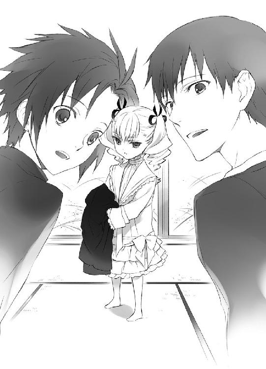
蒼司朗はこの少女と、とてもよく似た少年を知っている。
「────若、様......」
蒼司朗は呆然とし、少し早く我に返った清志朗は、梢に振り向く。
「母さん......！」
少女を見つめながら、梢は清志朗に頷いた。
「えぇ。帝妃様に縁の御方ね」
顔だちといい、あの容姿は、間違いない。
すっと動いてハンガーを取ってきた清志朗は、それを持ったまま、少女に手を差し出した。
「掛けておきます」
「うむ」
頷いて、少女は清志朗に外套を渡した。
梢はふかふかのお客様座布団を出してきて、それを敷く。
「こちらにどうぞ」
「うむ」
しずしずと歩いた少女は、行儀よく座布団に座った。
（えーと......！）
プチパニックになった蒼司朗は、必死で気持ちを落ち着ける。
（帝妃様？）
縁の御方、梢はそう言った。
（帝妃様は、帝のお嫁さんで、若様のお母さんで......）
帝妃は大奥にいて、人前には滅多にお出ましにならない。写真で帝妃が紹介されたのは、婚礼のときだけだ。写真は遠くから撮影されていて、帝妃の容姿が詳しくわかるものではなかったけれど、若様を見ていれば、だいたい想像できる。
今の帝妃は、大英皇国から嫁いできた、異国のお姫様だ。
（ようするに、たぶん、ここまで若様に似ているということは────）
男を寝かせ、客間を出た蒼司朗たちと入れ替わりに、左近が医者を連れて戻ってきた。
左近が呼んできた大原剛三先生は、望月造園の四軒隣に屋敷のある、帝都大学病院の医師だ。大原先生は温和な白髭先生で、専門は歯科である。
医療を学ぶ学生は、内科外科眼科など、ひと通りすべての医療知識を身につけて医師免許を取得する。その上で、何が自分に合うかを選んで、専門にしているのだ。離島で開業する医師などは、一人で何でも治療する。大原先生が医師免許を取ってからの経験値は歯科のほうが高いが、他の科を診察できないわけではない。
大学病院からの急患の呼び出しが最も多いのが、外科だ。高齢であり、歯科の大原先生は、急患で呼び出されることがあまりないので、在宅率が高い。
「すみません、先生......！」
「急患かよ？」
来客中であり、お屠蘇でほろ酔い気分だったが、駆けつけた左近の顔を見た大原先生は、すぐにお猪口を置いた。
「往診鞄を」
「はい、あなた」
元看護婦の大原先生の奥さんは、いつでも使えるよう支度していた往診鞄を、手際よく出してきた。
「僕たちも行きます」
「鞄持ちさせてください」
大原先生に年始の挨拶に来ていた医学部の学生は、先生の屋敷で待っているよりもと、同行を願い出た。
「すまねぇな、どうも」
左近は恐縮しながら、厚意に甘える。
「で、誰でぇ？ 清坊かい？ 蒼ちゃんかい？」
急患は誰かと尋ねた大原先生に、苦笑しながら左近は答える。
「いや、蒼が出先で、熱出してぶっ倒れてる野郎を拾ってきたんでさぁ」
ふむ、と大原先生は考える。診察してみないとわからないが、持病の可能性もある。
「往診はするが、手に負えん患者なら、救急車を呼ぶなりして、病院に運びなよ？ 手遅れになっちゃいけねぇ。よろしいか？」
「それは、はい、もちろん」
頷く左近に、学生たちは微笑む。
「僕たちが手配します」
「元日から人助けなんて、とても立派ですね」
「俺じゃなくて、甥っこだよ。あいつぁ、根っからいい奴だからな」
弟夫婦の忘れ形見である蒼司朗は、左近にとって自慢の甥だ。
大原先生は顎鬚を撫でながら、頷いた。
「蒼ちゃんかい、うむうむ」
左近にとって『近所のお医者さんのおじさん』だった大原先生は、左近の弟で蒼司朗の父・右近のことをよく知っているし、幼い頃から帝都に何度も遊びに来ていた蒼司朗のことも知っている。ご近所さんだが、気分は親戚か、うちの子だ。
望月邸に上がって、客間に寝かされていた男を見た大原先生は、ふむと唸った。
「中垣くん、ちょいと使いを頼まぁ」
「はい、先生」
遺伝子の強い血縁者は、容姿がとてもよく似ている。
往診の礼をして大原先生たちを見送った左近は、大原先生の使いの学生から知らせを受けて駆けつけた柳生藤丸と、居間に入ってきた。
「柳生さんとこの、親戚だってよ。蒼の連れこんだ、あの兄ちゃん」
「連れこんだって......☆ 伯父さん......」
違う意味に聞こえそうで、がっくりと蒼司朗は脱力した。
５
少女を連れていた男は、大英皇国に渡った柳生充兵衛翁の弟・信兵衛の息子だった。容姿が若い頃の信兵衛にそっくりだったし、武術を修業する者らしい手の感じが同じだったので、ひょっとしてと大原先生は思ったのだ。
忍び装束で望月邸を訪問した柳生藤丸に、蒼司朗が助けた男との面識はない。しかし、公儀隠密の柳生家は、海を渡った一族の者が、大英皇国の姫を護衛して帝都入りすると、事前に連絡を受けていた。
男の持ち物を調べさせてもらって、親戚に間違いないと柳生藤丸は確信した。
少女は、大英皇国から親善大使として来日した、お姫様だった。
「お食事中に失礼いたします。一族の者が大変お世話になりました。蒼司朗様、ありがとうございます」
柳生藤丸は正座して、蒼司朗に向かって深々と頭を下げた。
畳に額がつきそうなほど頭を下げられ、雑煮の椀と箸を持ったまま蒼司朗は恐縮する。
「い、いえ......！ 世話をしたって言っても、オレはただ見つけて、ここまで連れてきただけですから！ 伯父さんや清ちゃんが助けてくれたんですよ。お昼ご飯を支度してくれたのも、伯母さんだし」
「ミギュ」
「キュア」
「チュッピ」
「「（しゃー）」」
「あーん」
「......はい、あーん」
膝の上で開かれているちっちゃな口に、蒼司朗は小さくした柔らかいお餅を運ぶ。
蒼司朗の膝に座った大英皇国の姫と、姫の膝の上のピヨ四神は、うまうまと機嫌よくお餅を咀嚼する。
（何でこうなっちゃったかな☆）
食べさせる口が、ひとつ増えた蒼司朗は、ちょっと頭が痛い。
清志朗は三つ、そして蒼司朗と姫は、お餅のひとつだけ入った雑煮の椀をもらって、お昼ご飯を始めた。
「フォークのほうがよかったかしら」
「案じるな。箸は使える」
梢には頼もしくもそう言い、姫は箸をとって雑煮を食べはじめたのだが、じきにその動きは止まった。
「────ほら、あーん」
「ミギュギュ」
「キュウ～」
「ピチュピチュ」
「「（しゅー）」」
姫のすぐ横で、蒼司朗は膝に乗せたピヨ四神に、ひと口大になるよう、小さく小さくしたお餅を食べさせていた。
「急いで飲みこんじゃ駄目だぞ？ 喉に詰めちゃうからな。よーくもぐもぐするんだぞ？」
蒼司朗に言い聞かされ、ピヨ四神は美味しくお餅をもぐもぐして、ゆっくり飲みこむ。
「そうそう。いい子だ」
自分も食事しながら、蒼司朗はにこにこと微笑んで、ちょっぴり汚れたピヨ四神の頰や口の周りをちょいちょい拭う。
「お餅、美味しいなー」
「ミギャ」
「キュオ」
「チュピ」
「「（しゅー）」」
お行儀よくお座りし、飲みこんで食べ終わってから、あーんとピヨ四神は口を開け、蒼司朗が食べさせてくれるのを待つ。美味しいものを頂戴と、一生懸命大きく開かれている口に、蒼司朗は微笑みながら、食べやすいよう小さくしたお餅を運んでやる。
清志朗たちにはまったく見えないのだが、姫にはピヨ四神のお食事の様子がばっちり見えていた。甘えて蒼司朗の膝に乗り、美味しく雑煮を食べさせてもらっていたピヨ四神は、ガン見している姫の視線に気づき、もぐもぐしながらちらりと振り返り、首を傾げる。
姫はお行儀よく、上品にお雑煮を口にしていたのだが────、蒼司朗の膝の上のピヨ四神ほど、美味しく味わえてはいなかった。同じものを食べているのに。
「ミギュ？」
チビ白虎が姫に向かって鳴いた。
「キュイキュオ」
チビ青龍も、鳴いて姫に尾を振った。
「チュッピピ」
「「（しゅー）」」
姫に振り向き、チビ朱雀とチビ玄武も、手羽や尾を振って何事か語りかけた。
姫が、ぱあっと顔を輝かせる。
「よいのか!?」
目をキラキラさせ、弾んだ声でピヨ四神に言った姫は、卓に雑煮の椀と箸を置いた。
声をあげ、食べやめた姫に、梢と清志朗はびっくりする。
「あら？」
「どうしましたか？」
心配して尋ねる二人に構わず、姫は元気よく座布団を下りて立ち上がる。
ピヨ四神も蒼司朗の膝から、ぴょんと下りた。
食い意地の張っているピヨ四神は、蒼司朗が食べさせている食事の途中で食べやめたことなど、これまで一度もない。
「おい、どうし......」
ピヨ四神に声をかけた蒼司朗の視界に、スカートをひらりと動かして、姫が割りこんだ。
（は？）
目を丸くする蒼司朗の膝の上に、ちょこんと姫が座る。
「え？」
ピヨ四神の加護があるのか、まったく重くないのだが、姫の大胆な行動に、蒼司朗は驚く。
少し斜めを向いて座った姫の膝の上に、ゴージャスなふわふわスカートをよじよじと上ってピヨ四神が座った。
一般のペットなら、ドレスの上に乗ったなら、皺になったり飾りのリボンや繊細なレースに足を引っかけ、ドレスを駄目にしてしまったりするのだが、ピヨ四神は聖獣なので、そういう心配はない。重くないし、汚すこともない。
皆心地よく、蒼司朗の膝の上にお尻を落ち着けて。
「ミギュ」
「キュオ」
「チュピ」
「「（しゅー）」」
「あーん」
あとから参加した姫の順番は、最後。
ピヨ四神と姫は、順番に口を開けて、蒼司朗が食べさせてくれるのを待つ。
（────こいつらが、仲間に入れたのか☆）
蒼司朗にはピヨ四神の言葉はわからないが、姫はお誘いを受けたらしい。
（いっしょに、っても、なぁ......）
小さくても、相手が人間となると、蒼司朗にも抵抗はあったのだが、いつまでも口を開けて待たせるわけにもいかない。
「......はい、あーん」
蒼司朗は小さくしたお餅を、ピヨ四神から順番に口に運んでやった。
もぐもぐもぐ、うまうまうま。
ピヨ四神と姫は、もぐもぐしながら、にこにこと微笑みあう。
（これで、満足してるのか？）
蒼司朗は姫に尋ねる。
「────美味しい？」
「うむ！」
姫は元気よく花のような笑顔で蒼司朗に頷いた。そうだろうと何だか自慢げに、ピヨ四神も機嫌よくもぐもぐしている。
何事かと様子を見守っていた清志朗と梢は、顔を見合わせて苦笑した。
幼い子供は、同じように幼い子供が甘えている姿を見ると、自分も甘えたくなる。
しっかりしていた異国のお姫様も、やはり年齢相応だ。ピヨ四神の堂々とした甘えっぷりと、可愛がってピヨ四神を甘やかす蒼司朗の姿を見て、羨ましくなったのだろう。優しくて懐が深いピヨ四神は、甘えたくなった姫の気持ちを汲み取って、快く姫の参加を許可した。
食べさせてあげるのは、蒼司朗なのだが☆
帝妃の姪であり、若様の従姉妹である幼い姫は、可愛らしさと健気さで、ピヨ四神の加護をがっちり勝ち取っていた。
ピヨ四神と姫が、ご満悦状態で食事していたところに、左近と柳生藤丸が来たのである。
「藤丸先輩、蘭丸先輩は、今日はお仕事ですか？」
手の塞がっている蒼司朗に代わって、清志朗が尋ねる。
柳生本家の長兄は蘭丸だ。柳生蘭丸が、公儀隠密候補生たちをまとめている。今のような場合、使いに来るのは蘭丸であるのが妥当であるように思える。
柳生藤丸は答えた。
「兄は、姫の影武者の護衛に当たっております」
親善大使として来日する姫は、公式には今日の午後、横濱に停泊している船を出て、馬車で帝都入りすることになっている。しかし、それは影武者である。そして、もう一組の影武者が、お忍びで帝都入りする姫より先に、こっそりと帝都入りしていた。
数組で攪乱する、裏のさらに裏という形で、姫の身の安全を計ったのだが、どこからか情報が漏れたらしい。
姫を護衛していた男────柳生逸角は、何者かに追われ、追跡を逃れるために、姫を抱え守って、凍りつきそうに冷たい川に入った。姫を連れた逸角の隠密行動には、数名の護衛がついていたが、今、この場にいないということは、動けない何らかの状態にあるということだ。
到着が遅れていた柳生逸角と姫の身を案じていた帝都城では、蒼司朗に助けられたとわかって、安堵した。行方の知れない護衛は、公儀隠密候補生たちが帝都城下を駆け回り、今も行方を探っている。
「アンジェ姫様、お初にお目にかかります。柳生藤丸と申します。姫様、逸角はしばらく動けそうもありません。お食事が終わられましたら、自分が帝都城までお送りいたします」
柳生藤丸は、柳生翁にそう命じられた。
ピヨ四神と同じように蒼司朗に甘えて雑煮の餅を食べさせてもらっていた姫は、ちらりと柳生藤丸を見た。
「嫌じゃ。我は、軽薄で尻の軽い殿御は好かぬ」
（は？）
すっぱり切り捨てられ、柳生藤丸は目を瞬く。
話を聞いていた蒼司朗たちも、思わず点目になる。
軽薄で尻が軽い、って......☆
「まぁ、嫌だわ......！ 軽薄で尻が軽いですって」
この年齢の少女の口から、そんな言葉が出るとは思わなかった。
すごいことを聞いちゃったわと、ころころと梢が笑い、藤丸は渋い顔になる。
いくら異国の姫で、初対面の子供が相手でも、遠慮なく失礼なことを言い放たれた者としては、たまったものではない。
「母さん......！」
笑っては失礼だと、清志朗は梢を困った顔で見つめる。
柳生藤丸には気の毒だが、残念ながら庇えない。
（確かに、そう見えるし、そういう噂も聞くけど☆）
そして、要領がよくて、自分ばかり楽をする、ちょっと狡いところのある人だと、清志朗は感じている。だが公儀隠密候補生としては、頭の回転が速く、優秀だ。
どういう印象があろうとも、任務遂行にまったく支障はない。
「あー、おほん！」
わざとらしく左近は咳払いした。
ピヨ四神にお餅を食べさせた蒼司朗は、こそっと姫に言う。
「（見た目で決めつけちゃ駄目だよ？）」
柳生藤丸は流行に敏感で、お洒落だ。
柳生藤丸が遊んでいて、いい加減なチャラ男系だと感じるのは、きっと見た目のせいだ。と、蒼司朗は思う。
蒼司朗の言葉に、もぐもぐとお餅を咀嚼しながら、姫は考える。
「なるほど、蒼の言うことにも、一理あるな」
初対面の印象で、決めつけてはよくない。
わかってくれたらしい姫に、蒼司朗はほっとする。
「じゃあ......」
「我は蒼と共に帝都城に行く。柳生藤丸とやら、そちはいらん」
姫は柳生藤丸の申し出を断った。
無用と言われても、柳生藤丸は困る。
「しかし、それは────！」
「蒼、我を連れて行くと言ったな？」
姫に無垢な瞳で確認されて、蒼司朗は困る。
確かに、さっきはそう言ったけれど、それは同行者が倒れていて、他に誰もいないと思ったからだ。
「オレは藤丸さんが来るなんて、知らなかったよ。公儀隠密の人なら、安心だ。お迎えが来てくれてよかったね。もう大丈夫だね」
微笑みかける蒼司朗に、姫は視線を落とす。
「......そうか」
柳生藤丸をすっぱり拒絶した姫は、怖いものなしのその勢いで、声を張って駄々をこね、困らせるかと思ったが、まったくそんなことはなかった。
あっけないほどあっさりと、姫は引き下がった。
とても聞き分けがいい。
聞き分けはいいが、しゅんと元気をなくした姫を、ピヨ四神は心配そうに見上げる。
小さな姫は、我慢することに慣れている。
我が儘を言わないのは、言ったところでどうにもならないと、よくわかっているからだ。
諦めてしまった。
「ミギュギュ」
「キュイ」
「ピピチュ」
「「（しゅー）」」
「......」
姫はピヨ四神と見つめ合い、両手でピヨ四神を抱き上げた。小さな姫が小さな四神を、きゅっと抱っこする。
何も言わない姫を、ピヨ四神は慰撫するように小さな舌でそっと舐めた。
静かにピヨ四神を抱っこする姫を見つめ、柳生藤丸は思う。
ついさっきまで、ご機嫌で食事をしていたのに。
（何だかなぁ......☆ 俺って、可愛いお姫様を苛めに来た、悪者じゃね？）
誠実そうな兄の柳生蘭丸なら、ひょっとすると姫に嫌われず、いっしょに帝都城に行くということになったのかもしれない。そう考えると、藤丸は溜め息しか出ない。
（ガキのお守りは、苦手なんだよ......！）
抱っこされて姫を慰めているピヨ四神のうち、チビ玄武のチビ蛇が蒼司朗を振り仰いで、小さな舌をぴろぴろさせた。
（うーん......）
蒼司朗は、ちらっと清志朗や左近に視線を送る。
清志朗は困った顔で微笑み、左近はぼりぼりと頭を搔いた。
元日の今日、蒼司朗がしなければならない用事は、帝へのご挨拶だけで、もう終わってしまった。庭仕事も、今日はお休みだ。
（この子、大英皇国から来たんだよな）
遠く離れた異国の地で、頼りとなる護衛が具合を悪くし、蒼司朗が見つけたときには、相当に心細い思いをしていたはずだ。それなのに、まだ幼い姫は泣くこともなく、毅然と蒼司朗と会話した。
嬉々として蒼司朗の膝に乗り、食べさせてと雛鳥のように口を開けていたのは、姫がまだまだ甘えたい年頃だからだ。
蒼司朗は巌手に住んでいた四年前に、両親を亡くした。周りの人にはとてもよくしてもらったし、帝都には父の実家があり、伯父一家がいたので、寂しい辛いとはひと言も言わなかったけれど、それは我慢していたからだ。平気だったわけではない。
（偉いな、この子）
四年前の蒼司朗より、姫はもっと幼い。蒼司朗と違って両親は生きているだろうが、会えないし甘えることもできない。大人の都合で作られた予定に従って、小さな姫は住み慣れた地を出て、他人の視線に晒され続けている。
皇族に生まれたという、それだけの理由で、健気にも姫はがんばっている。
「ミュン」
「キュイ」
「ピチュ」
「「（しゅー）」」
姫に抱っこされたピヨ四神が、円らな瞳で蒼司朗を見上げる。
ピヨ四神がこの姫に構う気持ちも、蒼司朗にはよくわかる。
（オレが一緒にいることで、少しでも元気が出るなら......）
蒼司朗は柳生藤丸に言う。
「お邪魔でなければ、帝都城まで、オレもいっしょに行っていいですか？ ちょっと奥庭の様子を見ておきたいので」
適当に理由をつけた蒼司朗の言葉を聞き、姫はぱっと顔を上げる。
蒼司朗は姫に微笑みかける。
「奥庭に忘れ物してきたのを、思い出しちゃった」
「そうか！ それならば、仕方ないな！」
元気になった姫に、蒼司朗は頷く。
「うん。仕方ないよね」
蒼司朗は柳生藤丸より年下だが、神聖なる奥庭のお庭番だ。柳生藤丸が頼みごとをするのは失礼にあたるが、蒼司朗が同行したいなら、断る理由はまったくない。
むしろ、大歓迎だ。
これで柳生藤丸の面子も保てる。
「はい。護衛いたします」
奥庭の四神の加護を受けている蒼司朗に、公儀隠密候補生の護衛などまったく不要だが、柳生藤丸は恭しく頭を下げた。
６
退出する柳生藤丸を会釈して見送って、蒼司朗は姫に微笑みかける。
「行く前に、お雑煮全部食べちゃおうか」
「うむ！」
姫は元気よく頷いて、腕に抱えたピヨ四神といっしょに、あーんと口を開けた。
望月邸の客間に寝かせていた柳生逸角は、確認した藤丸の報告を待って、柳生道場から来た迎えの者たちに連れ帰られた。姫を連れた柳生逸角の警護でありながら、行方知れずになっていた他の者も、発見されて次々に連れ帰られているようだ。
奥庭の四神の加護を受けて望月造園まで来た姫は、ここにいることを不審者に気づかれてはいない。
声帯は身長と体格によって太さが決まるので、同じような体格の子供は、男も女も同じような声だ。姿を見ないで喋っている声だけで男女を判別するには、喋り癖や話し方、話題で聞き分けるしかない。
小さな子供用の落ち着いた色の外套は、型もあまり流行に左右されず、前合わせがどちらにも使える男女兼用だ。子供体型に合わせたものは、縫製のラインに男女の違いはない。
蒼司朗が助けたときのように、丈の長い外套を着てフードを被ると、その下の豪華なドレスや金色の巻き毛は隠れ、姫は男の子か女の子か、わからなくなる。姫が幼い声で言い放つ爺むさい言葉を聞いていると、年寄りに育てられた男の子そのものだと思える。
まさかそれが、お人形のように愛らしい異国の姫だとは、とても想像できない。
ピヨ四神を連れた蒼司朗と行動を共にするなら、公儀隠密候補生の警護を受けるより、姫はずっと安全だ。
帝都城までは、歩いて行けない距離ではない。だが、長旅で心身ともに疲れているだろう姫を少しでも休ませてやりたくて、蒼司朗は望月造園の法被を着、車庫の扉を開いた。
「────乗り心地は、あんまりよくないだろうけど」
キュルキュルと軽快なキャタピラ音をさせて、蒼司朗の運転するショベルカーは車庫を出る。
お正月仕様で車体を綺麗に磨いた小型ショベルカーは、フロントに注連縄飾り付きだ。
外套を着てしっかりフードを被り、お出かけ準備をした姫は、初めて間近で見る作業車に、ピヨ四神を抱っこしながら目を輝かせる。
「おぉ！ これが『ショベルカー』というものか！」
「オレの車だから、一番ちっちゃいヤツだけどな」
「これは蒼のものなのか？ すごいぞ！ 強そうじゃ！」
車両に強さはあまり関係ないと思うのだが、興奮する幼い声に、清志朗はくすくす笑いながら、小型ショベルカーが出た車庫の扉を閉める。
「蒼、車は少ねぇが、通行人は多いぞ。気ぃつけろよ」
「はーい、気をつけまーす！」
縁台で煙管を銜えた左近に大きな声で返事して、姫のすぐ横で小型ショベルカーを停めた蒼司朗は、運転席の扉を開けて、手を差し出す。
「はい、乗って」
「ミギャギャ」
「キュオキュオ」
「チュピピッ」
「「（しゅー）」」
「うむ！」
姫に抱えられていたピヨ四神は、ぴょんと跳んでいつもの定位置にちょこんと収まった。両手の空いた姫は、蒼司朗の差し出した手を握って、よいしょと小型ショベルカーに乗りこむ。
蒼司朗にくっついたピヨ四神と同じように、姫は遠慮なく蒼司朗の膝に乗った。上機嫌で、にこっと微笑んで見上げられ、蒼司朗も姫に微笑み返す。
「────大丈夫？ 蒼くん」
膝に子供を乗せて、運転に支障はないだろうか。
心配する清志朗に、蒼司朗は苦笑する。
「大丈夫だと思うよ。こいつらがいっしょだし。こんな乗り方、本当はしちゃ駄目だろうけどね」
何かあったら危険極まりないが、ピヨ四神がいっしょなのだから、危惧するようなことには絶対にならない。ついでに、道路交通法もどうにかしてくれるだろう。
「帝都城に入るところから、藤丸先輩が先導してくれるって」
お出かけ前のエチケット、蒼司朗が姫をトイレに連れて行っているときに、知らせが来た。
望月造園の作業員を装って、小型ショベルカーで蒼司朗が姫を連れて行くことは、柳生藤丸と打ち合わせ済みだ。姫をどこに連れて行けばいいのか蒼司朗は知らないが、柳生藤丸が先導してくれるのなら大丈夫だ。
「了解ー」
行けばどうにかなるだろうと、蒼司朗は腹を括っていたが、まったく心配いらなかった。
「ほら、蒼！ 『大英皇国からの親善大使様』が来る前に、とっとと行け！」
ゆっくりしていると、姫の影武者の乗った馬車のための交通規制に引っかかる。帝都大通りは、馬車に乗った姫の姿をひと目見ようとやってくる人々が集まりはじめるだろう。
「はい！ 行ってきまーす！」
左近に大きな声で返事して、蒼司朗は清志朗と視線を合わせる。
（ごめんね、清ちゃん）
（本当は、僕らも見物に行くはずだったのにね）
大英皇国からの親善大使である、可愛い姫の帝都入りは、元日の一大イベントだった。
清志朗と蒼司朗はいっしょに、帝都大通りに出かけて、沿道で姫の馬車に小旗を振って見送ろうと予定していた。
本物の姫を間近で見てしまったし、蒼司朗が出かけてしまうので、今回はお流れだ。
「世話になった！ かたじけない！」
姫はやはり爺むさい口調で礼を言って、左近と清志朗に手を振った。
「気をつけてねー」
造園用の門を開いた梢は、切り火で蒼司朗と姫を送り出した。
あまり乗り心地のよくない小さなショベルカーで、しかもたいした距離ではなかったが、それでも姫はずいぶん嬉しそうに、帝都城へのドライブを楽しんだ。
さすがに元日なので、帝都大通りの車道は見晴らしよく、気持ちいいほど空いていた。長閑にちらほらと、乗用車や人力車、乗合バスが走るのを眺め、姫は蒼司朗に笑顔で言う。
「うむ、やはり我の目は確かじゃ！ どの車よりも、蒼の車が一番強そうじゃぞ！」
「あ、あそこの木。信号の右横の。オレと清ちゃんとで剪定したヤツ」
蒼司朗が指さしたほうに、くりっと姫は顔を向ける。
「ミギャギャ」
「キュゥウ」
「ピピ」
「「（しゅー）」」
「ほほう、あれか！ 蒼は樹木を整える仕事をしておるのじゃな！」
「枝や葉っぱを綺麗にして、涼しい木陰を作ったり、鳥の塒を作ったり、虫や病気と戦って、花を咲かせたり、実をつけさせたりね。今は冬だから、眠っている木が多いけど、緑の季節や花の季節になると、この帝都大通りは、凄く綺麗なんだよ」
「そうか。我のお城の庭も、綺麗じゃぞ。この国の庭とは、趣が違っているようじゃが。緑の迷路とか、我はいたく気に入っておる」
「へー。緑の迷路かぁ。一度見てみたいなぁ」
どんなものなのだろうと、蒼司朗は楽しくなる。
（まだまだ、オレの知らないことがたくさんある......！）
国が違って、気候や土、水が違えば、植物の性質も、きっと違う。
蒼司朗の言葉に、姫は目を輝かせる。
「来るがよい！ 歓迎するぞ！ そちは我の恩人だからな！」
「あぁ、そうだなぁ、いつか行きたいなぁ」
「いつ来る？ いつじゃ？ 日を合わせねば、ならぬからな」
幼いながらも、今、親善大使としてこの帝都にいる姫は、きっとこのあとも、公務であちこちに行く。だから、きちんと予定を決めなければ、遥々海を越え、せっかく訪れてくれた知人にも会うことはできない。
そして蒼司朗は、帝都城奥庭のお庭番だった。
（外国には、行けない）
それは、四神神社の巫であり、この帝都を守る四神の戦士である篠原勇輝たちと同じように。
円らな瞳を向けるピヨ四神に、蒼司朗は微笑みかける。
（ちゃんとわかってる）
そして蒼司朗に、不満はない。
期待に目を輝かせる姫を傷つけないよう、蒼司朗は言葉を選ぶ。
「────うん、まだオレ、修業中だから、一人前になって、許してもらえるようになったら、だな。まだまだ先かなぁ」
「そうか......。では、精進せぃ」
「がんばります」
尊大に言った幼い姫に、蒼司朗は恭しく頷き、顔を見合わせて笑った。
姫は前を向き、だんだん近くなる帝都城を見つめる。
「できれば、早くな。我に弟が生まれたら、我は叔母様のように、余所の国にお嫁に行かねばならぬから」
大英皇国の現在の皇位継承者は、皇女であるこのアンジェ姫一人だが、皇子が生まれたら、皇子に皇位継承権が移る。皇女は外交戦略の駒のひとつとして、どこかの国に輿入れする。
（この子......）
膝の上に乗るほど幼いのに、様々なものを背負い、そしてそれらに対してきちんと覚悟のできている姫に、蒼司朗は胸が詰まった。
「ミギュギュ」
そして奥庭の四神が、どれほどこの姫を助け、守ってやりたいと願ったのかも、わかった。
帝都城の手前に、警備員の制服を着た柳生藤丸が待っていた。
元日に作業車を見た来園者たちは、何か補修工事が必要になったのだろうと思い、あまり気にせず小型ショベルカーを見送った。小型ショベルカーの運転席にいる小さな子供の姿は、ピヨ四神の力でスルーされたようだ。
柳生藤丸は誘導用の棒を振り、ホイッスルを吹きながら、蒼司朗の小型ショベルカーを先導し、東側からぐるりと外堀を回って、北門から橋を渡った。
帝都神社に一番近いのは、西門だ。初詣客でごった返していたので、あっちは避けたのだとわかる。いつも北門を利用するのは、観光客ではなく、帝都在住の学生が大半だ。休日には利用者が最も少ない。
「蒼！ あれ、あの建物のあるところは何じゃ？」
「帝都学園。オレの通ってる学校」
「あれは？」
「白百合女学院。女の子の通う学校」
「あれは？」
「帝都図書館。帝都で発行された本は、一冊ずつ、全部あそこにあるんだよ」
「あれは？」
「帝都大学」
「あそこは人が多いのぅ！」
「あの先に、帝都神社があるんだよ。初詣の人が、いっぱいいるね」
はしゃぐ姫を乗せた蒼司朗の小型ショベルカーは、内堀を越え、一般来園者の入れない、帝都城の奥まで進み────。
「この先は、真純が先導いたします」
蒼司朗のまだ知らない門の見えるところで、柳生藤丸は蒼司朗の運転する小型ショベルカーに向かって一礼し、そこでぴたりと足を止めた。
門の横には、着物姿の柳生真純が控えていた。
「真純の指示をお聞きください」
（あそこに行くんだよな）
あと三十メートルほどなのに、どうして柳生藤丸はあの門の前まで行かないのだろうと、疑問に思いながらも、蒼司朗は頷く。
「ありがとうございました！」
「お気をつけて」
柳生藤丸は片膝をつく忍者の控え姿で、蒼司朗の小型ショベルカーを見送った。
（作業着でなくても、よかったかな）
わざわざ望月造園の法被を着て、ニッカボッカに地下足袋着用で小型ショベルカーに乗った蒼司朗は、お正月らしい振り袖姿の柳生真純を見て、少し恥ずかしくなる。
柳生真純は速度を落とした小型ショベルカーに、丁寧にお辞儀した。
「あけましておめでとうございます、蒼司朗様」
「あけましておめでとうございます」
蒼司朗も新年の挨拶を返す。
柳生真純は姫にひと言もなく、見向きもしなかったが、姫のことは極秘事項なのだ。四神の戦士に仕える公儀隠密の女忍者である柳生真純は、絶対に不用意な発言はしない。
そして姫もその辺りをよく心得ていて、ひと声も発しなかった。
柳生真純が控えていた門には、強固な結界領域であることを示す護符が貼られていた。
「そのまま、どうぞ、お入りください」
蒼司朗に厳かに言って、柳生真純は、ちりんと鈴を鳴らす。
門は内側から、しずしずと開かれた。
「失礼します」
蒼司朗はゆっくりと小型ショベルカーを動かして、開かれた門の奥に入る。
門の中は、帝都城の他の場所と、空気が違っていた。
（あ、れ？ えーと......）
造りの何が違うというのでもないのに、雰囲気が華やいで柔らかい。
「あ！」
蒼司朗の膝に乗っていた姫が、前方を見て身を乗り出す。
「叔母様！」
「え？」
「ミギャギャ！」
「キュイキュオ！」
「ピピッチュ！」
「「（しゅーしゅー！）」」
ピヨ四神も、姫と同じように身を乗り出し、嬉しそうにはしゃぐ。
数名の侍女を従えて、小さな池にかかる橋の側に、豪華な着物姿の金色の髪の高貴な美女が立っていた。
（帝妃様......）
まだ遠目で、顔の形はよくわからないが、そこにいる雰囲気から全然違う。
接近する小型ショベルカーに気づいた帝妃は、姫に向かってそっと手を振る。
「叔母様ぁ！」
姫も大きく手を振り返した。
ゆっくり走行するショベルカーの横を歩いていた柳生真純は、腕を伸ばし、軽く扉を叩いた。
車を停めるように合図され、蒼司朗は静かに小型ショベルカーを停める。
柳生真純が外から扉を開くと同時に、姫は小型ショベルカーを飛び出した。それまでの疲れなど微塵も見せずに、姫は元気よく走って行った。走る勢いに被っていたフードが外れ、金色の巻き毛を露にした姫は、姿勢を低くして待っていた帝妃に飛びついた。
ふっくりした頰を、ほかほかとバラ色に染めた小さな姫をぎゅっと抱っこし、帝妃は腰を上げる。
「ミギュ」
「キュウ」
「チュン」
「「（しゅー）」」
帝妃に抱っこされる姫を見て、甘え気分になったピヨ四神は、蒼司朗にすりすりとくっつく。
「うん、よかったな」
ちょいちょいと指であやすようにしてピヨ四神を可愛がりながら、小さな姫の最高の笑顔に、蒼司朗は頰を緩めた。
「────蒼ー！」
帝妃に抱っこされた姫が、蒼司朗に向かって、大きく手を振る。
「世話になったー！」
ご機嫌の姫に、帝妃も微笑んで、蒼司朗に向かって優雅に会釈する。
（うわー......！）
何だか、恐れ多い☆
小型ショベルカーを急いで下りて、お辞儀しようとした蒼司朗を、がっちり外から扉を押さえて柳生真純が止めた。
「申し訳ありません、蒼司朗様。こちらは『奥の院』ですので、どうぞそのまま。車から下りないでください」
呼称と、どういう場所なのかは、蒼司朗も知っている。
帝都城の奥にある『奥の院』は、帝妃が暮らす、男子禁制の場所だ。帝や若様以外の男が、足を踏み入れてはならない。
奥庭の四神様を連れたお庭番の蒼司朗は、内密に姫を送り届けるための特例として、作業車で乗り入れることを許可された。
蒼司朗は離れた場所からでもがちがちに緊張し、小型ショベルカーに乗ったまま、帝妃に向かって頭を下げた。
７
帰りは奥の院の門を出たところまで柳生真純に見送ってもらい、蒼司朗は帰路に着いた。
姫の影武者が、ちょうど馬車で帝都大通りを進んでくる時間と重なったので、蒼司朗は可愛い親善大使を歓迎する人々を避け、少し遠回りして望月造園に戻った。
蒼司朗は用事があるからと、待ち合わせた学校の友達に言って、大英皇国からの親善大使の姫を見に行った清志朗は、帝都大通りの南側に陣取った。一番早くに姫の馬車を見られる場所だったので、家に近い場所で見ようと思っていた梢や左近よりも、先に家に帰ってきた。
馬車は今頃、帝都城近くに到着しただろう。
「お疲れ様、蒼くん」
「ただいま、清ちゃん。疲れた～」
「お姫様の馬車に、柳生さんのところのお祖父さんによく似た、もう少し四角い顔のお爺さんが乗ってたよ」
「へー」
（その人に日本語教わったのかな）
そう思うと、姫が爺むさい、貫祿ある喋り方をしていたのも、納得できる。
扉を開いてくれた車庫に小型ショベルカーを戻して出てくると、隣の奥さんと出かけていた梢が帰ってきた。
「お姫様、可愛かったわぁ」
機嫌よく微笑む梢に少し遅れて帰宅した左近は、握った小旗で軽く肩を叩く。
「まぁ、なんだ。すげぇよな」
公儀隠密の影武者ってヤツは。
横濱に停泊した船を降りた大英皇国の姫は、帝都警察騎馬隊の警護を受け、天蓋のない馬車に乗ってお付きの爺・柳生信兵衛と共に優雅に帝都入りした。
本物と寸分違わぬ姿の『影武者の姫』は、間近で本物の姫を見た清志朗たちにも、別人だとはわからなかった。
外出していて冷えた身体を温めるために、梢はお汁粉を支度した。
「ミギャギャ！」
「キュイキュイ！」
「ピピピ！」
「「（しゅーしゅー）」」
「熱いから、火傷しないように冷ましてから！」
口では厳しいが、早く早くと急かすピヨ四神を優しく撫でて黙らせて、蒼司朗は膝に乗せたピヨ四神に、小さくした餅を食べさせ、匙で掬った汁粉を飲ませる。
外出前に仕掛けて行った熱燗を手酌で一杯やりながら、火鉢でスルメを焼き、新聞を開いた左近は、ふむと唸る。
「今日の夜は夕食会で、明日は帝都見物して、明後日は一般参賀だとよ、あのお姫さん」
大英皇国からの親善大使であるお姫様の公務の予定は、帝や若様の予定と同じように、新聞に載っている。
「まぁ、忙しいのね」
「うん。大変だね」
「来日期間が短けぇから、仕方ねぇな。このあとは、東印土会社を視察らしいぜ。小せぇのに、偉ぇな」
「偉いね」
ピヨ四神にお汁粉を食べさせながら、蒼司朗はしみじみ頷く。
姫はあの年齢で、自国の代表として、世界中を回っている。予定はいろいろあるので、次にいつ来日できるかはわからない。
（今回の来日が、楽しい思い出になればいいな）
「ミギュ」
「キュイ」
「チュピ」
「「（しゅー）」」
蒼司朗の思いを読み取ったように、お汁粉を美味しく味わっていたピヨ四神が、蒼司朗を見上げて鳴いた。
帝妃の住まう奥の院は、絶対結界の領域で、暗殺者が入りこむことはできない。取材されることもない。
帝妃に向かって走って行った、あの嬉しそうな様子から、姫がどんなに身内に会いたかったかがわかる。人目や公務を何も気にしないでいい、あの時間は、とても貴重だったに違いない。
「蒼くん、明日、幸楽園の開園記念日なんだけど、何時に行く？」
幸楽園は帝都の有名遊園地のひとつだ。一月二日、開園記念日の幸楽園は入園料が只になる。帝都の子供は、帝都神社、四神神社の初詣と合わせて、開園記念日の幸楽園にも足を運ぶ。
「そうだなー、初詣を先に済ませて、そのあとがいいかなぁ」
「蒼、オメー、明後日の一般参賀は？」
「伯父さんたちといっしょに行くけど？」
「......何だ、そっちかよ」
小さく舌打ちする左近に、蒼司朗は苦笑する。
新春の一般参賀には、帝一家と四神の戦士が顔を見せる。蒼司朗は奥庭のお庭番という、名誉ある仕事に就き、天の戦士としての活動もできるようになった。本来ならば、奥庭のお庭番も、四神の戦士と同じ扱いで、一般参賀に出席する。
「オレは見習いだからさ。資格がないよ」
蒼司朗は苦笑する。
「今日のご挨拶だって、オレ、学校の制服で行ったんだよ？」
神官としても半人前、庭師としても半人前。まともに名乗ることができるのは、帝都学園高等部の学生だということだけだ。
梢はくすくすと笑った。
「お父さんったら、黙って新しいカメラ買ってるのよ～」
「う、うるせぇ！ ってか、何で知ってんでぇ!?」
「あとで、蒼くんの四神様を可愛く撮ってくださいね。お正月用の晴れ着、用意しちゃった」
うふふっと笑った梢は、写真撮影用に作った小さな晴れ着を、自慢気に見せた。
くりっと振り向いたピヨ四神が、円らな瞳をキラキラさせる。
「ミギュ」
「キュウ」
「チュピピ」
「「（しゅー）」」
「......ありがとう、伯母さん。喜んで着させてもらうよ」
着る気まんまんのピヨ四神に、仕方ないなぁと蒼司朗は笑った。
「────母さん、変な癖がついてない？ 駄目だよ。着せ替え人形じゃないんだから」
奥庭の四神様に失礼にあたってはいけないと、清志朗は梢に注意する。
確かに蒼司朗の連れている奥庭の四神様はちっちゃくて、とても愛らしいけれど、馴れ馴れしく接しすぎるのはいけない。
注意した清志朗に、梢は口を尖らせた。
「だって、『うちの子』なんだもの」
「いや、そもそもそれがダメだから！」
「蒼ちゃぁん」
助けを求めるように梢に呼ばれた蒼司朗は、淡く微笑む。
梢はピヨ四神を『うちの子』扱いしたいようだけれど。
「ほんの少しの間、お預かりしてるだけですよ。オレのせいで、こうなっちゃったから」
あっさりと言いきった蒼司朗に、梢はちょっと小さくなり、ほらやっぱりと清志朗は顔を上げる。
蒼司朗が荒れ果てていた奥庭を片づけてさっぱり整理してしまったので、奥庭の四神様までリセットされてちびっちゃくなってしまった。
奥庭を蒼司朗が綺麗に完成させれば、奥庭の四神様も、成獣の姿に戻る。そうなれば、こんなふうに膝に乗せてご飯やおやつを食べさせることもなくなるだろう。
口の中でしゅわりと溶ける、高価な砂糖菓子のような、甘く幸せな日々は、じきに終わる。
温かくて幸せな思い出を残して。
（その日がいつかはわからないけど）
蒼司朗は指先で、ちょいちょいとピヨ四神を可愛がる。
「迷惑がられなければ、いいんじゃないかな」
ピヨった赤ん坊の、こんな姿になってしまったけれど、四神様がこの生活を楽しんでいるのなら、問題ない。
「でしょう？」
一転して元気になり、勝ち誇ったように微笑む梢に、清志朗は渋い顔になる。
「駄目だよ、蒼くん......！ 母さんはすぐ調子に乗るんだから......！」
年末の大掃除のときのマスクと三角巾は可愛かったけれど、あれは埃を吸ったり、埃に塗れたりしないようにという思いやりと実用性があった。
しかし正月の晴れ着は、そうではない。むしろ、真逆かもしれない。
望月造園では、昔から金魚一匹飼われていないので、（聖獣様だが）動物といっしょに過ごすのは、初めてのことだ。
奥庭の四神様は、姿をなかなか見ることはできないが、家は汚れず手間もかからず（お世話係の約一名を除く）、とても可愛い。浮かれる気持ちもわからないではないが。
「余計なことをして構うのは、禁止。蒼くんにも迷惑がかかるんだからね」
清志朗にきっぱり言われ、梢は横を向きながらお茶を啜る。
「だいたい、ペットに洋服を着せるって、どうなんだろう。洋服を着せられちゃった動物は、絶対に苦しいと思うよ。そもそも、毛皮の上に洋服なんて必要ないんだし。飼い主の自己満足なんじゃないのかな......！」
どうにも気に入らないという顔をする清志朗に、左近はスルメの足を一本投げつける。
「清、テメーはガキん頃から固っ苦しくていけねぇや」
「......人に食べ物を投げつけるのは、いけないと思うよ」
他愛のない悪戯でも。
「おぅ。勿体ねぇことしたぜ」
舌を出す左近に、清志朗はむすっとしながら、髪に引っかかっていたスルメの足を取り、口に銜えた。
おとなしく成り行きを見守っていたピヨ四神は、その瞬間、あっと身じろぎする。
「ミギュギュ！」
「キュオー！」
「ピチュン！」
「「（しゃー！）」」
「欲しがらない！」
すかさずピヨ四神を叱った蒼司朗に、清志朗はスルメの足を銜えたまま、びっくりして目を瞬く。
大人で、煙草や酒を嗜む左近には、やや気後れするところがあるのかおとなしく見ているだけだが、ピヨ四神は清志朗が食べているものなら、ちょっと貰いたい。
火鉢で焼かれていたスルメは、いい匂いがして、気になっていたのだ。ピヨ四神の視線が、ちらちらとスルメに動いていたことに、ちゃんと蒼司朗は気づいていた。
「あれは硬いから駄目！ どうしてもイカが欲しいなら、あとで燻製貰ってやるから！」
望月家の買い置きの酒のつまみには、イカの燻製が必ずある。
まだ赤ちゃんのピヨ四神には、歯がない。焼いたものは硬いが、燻製なら柔らかいので、むにむにと食べられるだろう。
「ほら」
それより今は、お汁粉を食べていた途中だ。
蒼司朗は匙で掬った汁粉を、ピヨ四神に差し出す。
「ミギャ」
「キュイ」
「ピピ」
「「（しゅー）」」
ピヨ四神は機嫌よくお汁粉に舌鼓を打った。
ピヨ四神といっしょにお汁粉を食べながら、蒼司朗は微笑む。
「清ちゃんは優しいんだよ」
「まぁ、それについちゃ、異論はねぇ」
左近の自慢の息子は、清潔感のあるなかなかの男前だし、人に頼られるぐらい、賢くて思いやりのある、いい子だ。間違ったことは言っていない。
左近は猪口を口に運び、熱燗を味わう。
「なぁ、清。猫っ可愛がりされてるペットだって、本当に嫌なモンだったら、どんなに着せようとしたって、着やしねぇよ。あいつらにゃ、言葉なんざ通じねぇんだ。人間の都合を押しつけようったって、どだい無理だろ。人間相手に何かやるより、もっと好き嫌いがはっきりしてるじゃねぇか。────飼い主が喜ぶから、その喜ぶ顔が見たくて、やってんだよ。連中が我慢してようがしてまいが、部外者のオメーが、知ったかぶってつべこべ言ぅねぇ」
好きな誰かを喜ばせたいと願うのは、人間だけではない。
きっとそれは、もっとも原始的な思いのひとつなのだろう。
思って、思い合って。
好きな相手が、よかれと思ってしてくれたなら、少々自分の好みから外れていても嬉しい。自分のことを見てくれるなら、見せたい。見てほしい。期待するなら、応えたい。
だから、できる。がんばれる。
「ムギュ」
鳴き声が変だと思ったら、いつの間に引っ張ってきたのか、蒼司朗の膝の上のチビ白虎は、梢の作った振袖用の小さい帯を頭に巻こうとしていた。
「こらこら......！ それ、ちょっと違うから！」
蒼司朗はチビ白虎に巻きついていた帯をとる。
「キュー」
「お前も！」
目が見えないとチビ青龍が頭に被ってもがいていた袴も、すぽんと取り除ける。
「あとでちゃんと着せてやるから......！ お前ら、もう食べなくていいのか？」
意識散漫になっているのは、お腹がいっぱいだからなのだろうか。
尋ねた蒼司朗に向かって、ピヨ四神は一斉にあーんと口を開けた。
（やっぱ、食うのかよ☆）
食べるのが仕事のピヨ四神に、蒼司朗は小さくした餅を食べさせた。
「写真は、表の角松のところで撮りましょうね」
「お節料理と一緒に撮るんじゃねぇのかよ？」
お正月らしいロケーションとしては角松のある場所だが、目の前に美味しい食べ物があったほうが、食い意地の張っているピヨ四神のテンションは俄然上がる。
「父さん......」
清志朗は左近の言葉に脱力感に襲われ、蒼司朗は、さすが帝都一の庭師だと感動した。
（目の付け所が鋭いよ、伯父さん......！）
そして梢はおおらかだった。
「何枚でも撮ればいいのよ。記念なんだから」
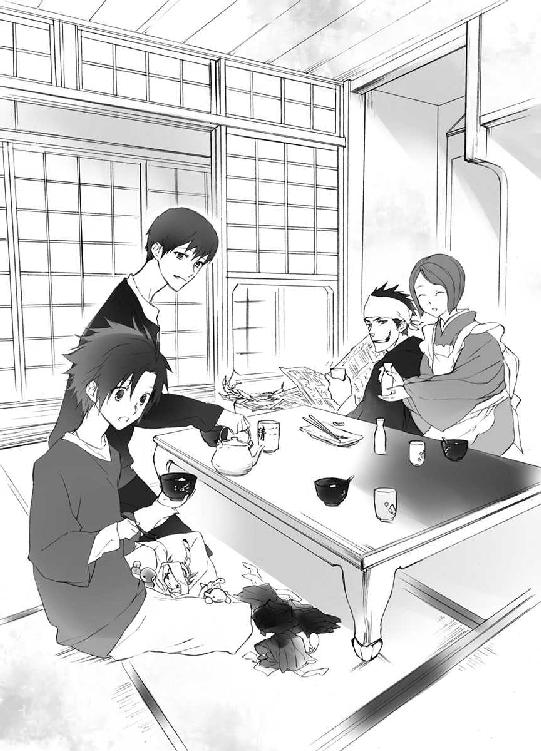
ここに、可愛い四神様がいっしょにいた、大切な記念。
蒼司朗以外の家族の目には見えなくても、写真なら姿を見ることができる。
「────四月まで、このままならいいな」
くいっと左近は猪口を干す。
望月造園では、毎年四月、庭師全員で集合写真を撮る。その年に入ったばかりの見習いや新人が新しく仲間に加わった写真が撮られる。
ショベルカーのための運転免許を取得したり、雑務を巌手で片づけてから帝都に居を移した蒼司朗は、年半ばから望月造園の庭師見習いに加わったので、去年四月の写真にいっしょに写っていなかった。
今年の写真には、庭師見習いとして蒼司朗も仲間に加わる。そしてその蒼司朗にくっついて、可愛い奥庭の四神様も、一緒に写っていれば、楽しいし嬉しい。
「帝都神社の神官の人たちも、四月に集合写真撮るんだよ」
清志朗に言われて、蒼司朗は目を瞬く。
「そうなんだ？」
四月の集合写真の撮影も、帝都では必ずどこでも見かける行事のひとつだ。
帝都には、職人として最高の技術を持つ師匠がいたり、その業界のトップクラスの有名店がある。帝都で何年か修業して、故郷に帰る者が多いので、そこに確かにいたという証となるように、欠かさず集合写真が撮られるようになった。
写っている人数分必ず焼き増しされ、集合写真は漏れなく各人の手に渡る。
「いろんなところの集合写真が、写真屋さんのショーウインドウに飾られてたりするから、ちょっと面白いよ」
「へぇー」
そういえば、そういうものを見かけた記憶があるなと、蒼司朗は思い浮かべる。
成人式、入学式、卒業式、結婚式、家族写真、旅行の記念写真。帝都の写真屋には、会社やお店の従業員全員で撮ったらしい集合写真が、確かにあった。
集合写真がどこでも必ず毎年四月に撮られる、年中行事に数えられるほどのものだとは、思っていなかったけれど。
写りのいい写真は、引き伸ばされ、パネルになっていたり、額に入れて飾られている。
「......あんまり、おおっぴらになっちゃよくねぇよな？」
左近は眉を顰める。
蒼司朗にくっついて、ちゃっかり写真に写るだろう可愛い四神様のことは、どちらかというと『公然の秘密』？
「あぁ、うん、そうかも」
確かにそうかもしれないと、蒼司朗は頷く。そして清志朗は思う。
「そういうことは、小此木神官長がどうにかしてくれるんじゃないかな」
帝都神社の小此木神官長は、抜け目ない。
（集合写真に、こいつらが写ってたら、モデル料取られそうな気がする☆）
小此木神官長によって徴収されたそのモデル料が、いったいどこに貯金され、どう使われるのかは、奥庭の管理者である蒼司朗にもわからない。
そして、意味深でコワイ口止め付きなのは、確実だ。
ころころと梢は笑った。
「二枚撮ればいいのよ」
内緒のピヨ四神入り写真と、ピヨ四神の隠れた写真と。
写真を渡す者をきちんと選べば、何の問題もない。
そして、帝都の外に持ち出された写真からは、いつの間にかピヨ四神の姿が消えているかもしれない。
（あのお姫様も、写真撮ってるんだろうな）
訪問した国での写真撮影も、大英皇国の親善大使としては大切な公務だ。
来日の記念と証拠に、帝一家といっしょに撮影しているだろう。
帝妃に向かって元気よく駆けて行ったときのような、幸せいっぱいの笑顔であればいいなと、蒼司朗は願ってやまない。
８
その後、本当にピヨ四神に晴れ着を着せて、蒼司朗と清志朗も学校の制服をきちんと着て、左近は羽織袴、梢は晴れ着で、自動シャッターを使って、皆で何枚もお正月写真を撮った。お節料理を広げて、ご馳走といっしょの写真も撮った。獅子舞が回ってきたので、その写真も撮った。夕方には帝都に自宅のある望月造園の庭師の人たちが、子供連れで年始の挨拶に来て、賑やかになった。蒼司朗と清志朗は、お年玉をたくさんもらった。
「めちゃくちゃ久しぶりに、ゆっくりお正月を過ごした気がする」
夜遅くまでいた左近のお客を全員見送って、玄関で大きく伸びをした蒼司朗に清志朗は笑う。
「そう？ 巌手は忙しかったんだ？」
「うん、まぁね」
蒼司朗はにっこりと笑う。
「ミギュ？」
「キュイ......」
蒼司朗にくっついているチビ白虎とチビ青龍が、微笑んでいる蒼司朗の頰に前肢タッチしたり、首筋に鼻面をそっと押し当てた。
蒼司朗の両親が生きていたころに、何度か巌手に行ったことがあるだけの清志朗は、両親を亡くしてからの蒼司朗の巌手での生活を知らない。
話すほどのことではないと、蒼司朗は思う。
「ピ」
「「（しゅー）」」
（うん、大丈夫だよ？）
蒼司朗は心配してくれるピヨ四神を、指先でそっと可愛がる。
「いい夢見んだぞ」
酒くさい息を吐きながら笑った左近は、蒼司朗と清志朗の頭を乱暴に撫で、居間に戻って行った。もう少しだけ晩酌する左近に、梢は最後の熱燗と肴を運ぶ。
「清くん、蒼ちゃん、おやすみなさい」
「「おやすみなさい」」
蒼司朗と清志朗はそれぞれの部屋に戻った。
部屋には、料理や片づけをしたり客の話し相手をしたりする合間に、梢が布団を敷いてくれていた。
「ミギャギャ」
「キュイー」
「ピピッチュ」
「「（しゅー）」」
ふかふか布団に嬉々としてダイビングするピヨ四神に続いて、蒼司朗も布団にダイブする。
（本当に、気持ちいい）
甘えて突撃するようにくっついてくる、ピヨ四神のふわふわ柔らかくて温かいのも、くすぐったくて気持ちいい。
「おやすみ。いい夢見ような」
蒼司朗がお正月休みをのんびり家で過ごすのは、両親が亡くなって以来、初めてだった。
義務教育期間中の子供であり、庭師見習いとして、巌手城の庭師の屋敷に籍を置いていた蒼司朗は、毎年正月休みを病院で過ごしていた。運動機能その他の詳しい検査や、リハビリテーションをする時間をゆっくりとるには、学校にも庭師の仕事にも差し支えないこの時期が、一番いいからだ。剣道を始めてからは、午前中の寒稽古にも通ったし、修道館の元日稽古にも参加した。帰る場所が他の子供とは違っていて、待っている家族が誰もいなかっただけだ。
蒼司朗にとって検査入院は必要なことだったから、嫌だとか辛いと思ったことはなかった。年末年始の病院勤務に当たってしまった医師や看護師たちと、それなりに楽しく過ごした。
帝都に移った今年は、自分の親族に囲まれて、この家の子供として、年末年始を過ごせた。
（すごくたくさん笑った気がする）
初夢の中でも、蒼司朗は笑っていたような気がする。目が覚めた瞬間に忘れてしまって、どんな夢だったか、まったく覚えていないけれど、とにかく楽しくて幸せだった。
「お前たちのおかげかな」
先に目を覚ました蒼司朗は、まだ熟睡中のピヨ四神を見て、くすっと笑う。
眠っている蒼司朗に自分たちの身体のどこかをくっつけるようにして、ピヨ四神は思い思いの自由な格好で、気持ちよさそうに眠っていた。
「さぁ、今日は初詣だ！ 朝ご飯食べて、出かけるぞ！」
元気よく起き上がった蒼司朗に、ピヨ四神もぱっちりと目を覚ました。
「どこから行く？」
愛用の枝打ち斧もしっかり持って準備万端と、わくわく気分で尋ねた蒼司朗に、清志朗は微笑む。正月も、帝都の学生は制服で外出だ。
「白虎神社から反時計回りで玄武神社に行って、北門から帝都城公園に入ろうと思うんだ」
帝都神社には西門が近いが、初詣客で混雑するので避けたい。
「この辺りを最後にしたほうが、幸楽園にも近いし」
幸楽園は帝都の北東部にある。
「蒼くん、生徒手帳と学生証忘れないでね」
「うん、大丈夫。ちゃんと持ってるよ」
四神神社それぞれに初詣してから、帝都神社に初詣して、幸楽園に行くとなると、帝都をぐるりと一周する感じだ。帝都バスを利用したほうが楽に移動できる。帝都の学校の学生証は、路線バスの無料パスでもある。学生優待の場所も多い。
「今日は入園料はいらないけど、乗り物やアトラクションには、遊具券を買うお金がいるよ。幸楽園の遊具券も、帝都の子は優待料金なんだよ」
「そうなんだ」
そう言えば、昔、華屋敷遊園に行ったとき、蒼司朗の遊具券と清志朗の遊具券は、色が違っていた。帝都在住の清志朗と、巌手在住で帝都に遊びに来ている蒼司朗は、区別されていたのだと、今ならわかる。
「篠原くんたち、がんばってるかな」
まずはご近所の白虎神社から。
四神の戦士であり、実家が四神神社である彼らは、一般参賀に出る時間以外は、神社の手伝いをしている。帝都の学生で顔を知られている四人は、それぞれにファンもいるので、応対に忙しい。
初詣に来たと声をかける級友もいるようだが、遠くからちょっと覗く気分で、白虎神社に入った蒼司朗は人ごみの中、伸び上がって見回しながら篠原勇輝の姿を探したのだが。
「......いない、よね？」
「うん。休憩中かもしれないね」
蒼司朗の身長が低くて、見つけられないのではない。
「ギュコ」
「キュイィ」
「ピー......」
「「（しゅー）」」
がっかりするピヨ四神に、蒼司朗は苦笑する。
「たとえいても、お菓子やキラキラ貰ったりしないから。わかったね？」
知り合いを見かけると、必ず何か貰えるというような、悪い癖がつくのは困る。
ピヨ四神の姿は清志朗には見えないが、蒼司朗が言い聞かせている様子はわかる。
「適当なところで、何回か休憩しようね、蒼くん」
「うん」
赤ちゃん動物は、水分や食べ物をこまめに補給しなければならない。赤ん坊の姿のピヨ四神も同じだ。
「勝手にどこかのお店に行ったら、置いてっちゃうからな！ 本当だぞ」
初詣客を見こんだ出店は神社の近くにたくさんあったので、ピヨ四神がふらふらしないよう、蒼司朗はきっちり釘を刺しておいた。
路線バスを利用して、白虎神社から朱雀神社に行き、帝都南公園で休憩して、青龍神社に行き、玄武神社に行く。
「────誰とも会えなかったなぁ」
「ミギュ」
「キュウ」
「チュン」
「「（しゅー）」」
「うーん、タイミングが悪かったのかな？」
ちらっとでも実家の神社で仕事をしている四人の姿が見られるかと思ったのだが、残念ながら間が悪かったらしく、誰の姿も見かけられなかった。
帝都神社にお参りして、今年の初詣はひと通り終了だ。
さすが、帝都一の帝都神社。人ごみは、もっとも凄かった。
人波に乗ってゆるゆると押し流されながら、百メートルほどの距離を二時間かかって移動して拝殿前まで辿り着き、お参りは三十秒、というのが例年のことである。
「き、よ、ちゃ......！」
（潰される......☆）
ピヨ四神を連れている蒼司朗は、怪我させないよう、胸元や腰のポケットの辺りを、ガードする。
「蒼くん、何処!?」
拝殿に向かって移動する人波の中に、小柄な蒼司朗の姿は完全に埋没したが、手に持っている枝打ち斧が、かろうじて見えていた。
（あれって、目印になるんだ......）
こんな効力があるとは思わなかったが、清志朗は蒼司朗の枝打ち斧を見失わないようにし、拝殿前に辿り着いたところで、蒼司朗と合流できた。
初詣客だけが貰える『若様カレンダーカード』も、どうにかゲットできた。
「────僕らは、学校が始まれば、近くでお姿を拝見できるんだけどね。毎年コレクションするのが癖になってて」
初詣を終えた蒼司朗と清志朗は、出店で飴湯を買い、裁判所に向かう遊歩道に置かれたベンチに座って休憩した。
「あはは。何かそれ、わかる気がする」
余分に貰った紙コップで、ピヨ四神に飴湯を分けて飲ませてやりながら、蒼司朗は清志朗と同じように、『若様カレンダーカード』を生徒手帳に大事にしまう。美形の若様の写りのいいステキ写真は、目の保養だ。持っていること自体、何だか嬉しい。
（すげーくたびれたけど、疲れが吹っ飛ぶ感じ）
爽やかな若様は、写真でも癒し効果抜群だ。
「ミギュギュ」
「キュウ」
「ピチュ」
「「（しゃー）」」
「え？」
ピヨ四神がわきわきと騒いだので、蒼司朗はそちらに振り向く。
「────蒼司朗、様、こちらに、おいででしたか......！」
「鈴宮神官」
蒼司朗は目を瞬く。
「（蒼くん、鈴宮神官は帝都神社で僕たちを見かけて、追いかけてきたんじゃないかな）」
常にない鈴宮神官の思いきったヨレっぷりに、清志朗はとても気の毒に思う。ただ人の流れに押されて進んだだけの蒼司朗と清志朗でさえ、へとへとになったのだ。鈴宮神官がどこにいたのかはわからないが（おそらく社務所の売店だろう）見失わないように、追いかけてきたのなら、それは相当きつかったはずだ。
（ひどいことさせるなぁ）
実家や神官学校での成績に関わらず、帝都神社の神官として一番の新入りである鈴宮神官に拒否権はないのだろうが、これは苛酷だ。
「どうしたんですか？」
「朝からずっと、皆でお探ししてたんですよ......！ いったいどちらに......」
「四神神社と帝都神社に初詣ですけど」
きょとんとしながら答えた蒼司朗に、鈴宮神官はがっくりと膝をついた。
「......すべて行き違いですか......！」
「あぁっ！ いた！ テメー！ このチビ！ ふらふらふらふらほっつき回りやがって！」
遠くから指を差して怒鳴り、着崩した制服姿の篠原勇輝が、蒼司朗に向かって怖い顔で走ってきた。
篠原勇輝の言葉に、蒼司朗もむかっとくる。
「うるせーよ！ チビでオメーに迷惑かけたか!?」
「思いっきりかかってらぁ！ 見つけにくいったら、ありゃしねー！」
ベンチから立ち上がった蒼司朗と篠原勇輝は、睨み合う。
蒼司朗の膝の上にいたピヨ四神は、蒼司朗が立ち上がる寸前に、ぴょいと跳んで、飴湯の紙コップごと、清志朗の膝の上に避難した。
紙コップが跳んできて、突然ピヨ四神が視界に現れたが、清志朗は驚くことなく膝を貸し、そのままベンチに座っている姿勢をキープする。
（あー......、篠原くんの言うこともわかるなぁ）
蒼司朗を人ごみで見失った清志朗は、人ごみに埋没した蒼司朗がどれだけ見つけにくいか、しみじみと実感できた。
少しだけ気持ちに余裕の出た鈴宮神官は、蒼司朗に尋ねた。
「────これから、どちらかに行かれる予定でしたか？」
「あ、はい、それなら幸楽園に行こうって......」
「蒼司朗様っ！」
鈴宮神官は涙でぶわっと目を潤ませて、蒼司朗の両手を握った。
何か感動している鈴宮神官の横で、篠原勇輝は白けた様子で頭を搔いた。
「たぶん、偶然っスよ☆」
清志朗ならば具合が悪くはないだろうと判断され、清志朗も蒼司朗といっしょに、帝都城に向かうことになった。
「幸楽園に行ってほしいんです」
野点の席で蒼司朗を待っていた小此木神官長は、にっこり微笑んで言った。
「はぁ」
行ってほしいも何も、蒼司朗はもともとその予定だった。
「ミギュギュ」
「キュイキュオ」
「チュピピ」
「「（しゅー）」」
そのつもりだったけど？ とばかりに、蒼司朗にくっついたピヨ四神は、蒼司朗が均等に切り分けたお茶菓子の練りきりをいただきながら、円らな瞳で小首を傾げる。
「清志朗くんの分のフリーパスも、用意しましょう」
「ありがとうございます」
蒼司朗と並んで座った清志朗は、とりあえず礼を言って頭を下げておく。
（......嫌だなぁ）
美味しい話には、必ず裏がある。小此木神官長は絶対に、ただの厚意で何かする人ではない。
清志朗の思考を読んだように、篠原勇輝は温い笑みを浮かべた。
「昨日、帝都入りした大英皇国の姫を保護してくれて、蒼司朗くん、清志朗くん、ご苦労さまでした。とても助かりましたよ」
微笑んで礼を述べられ、蒼司朗と清志朗は顔を見合わせ、にこっと笑い合う。
「あれは別に」
「たいしたお持てなしもできず、恥ずかしいです」
「今日、あの姫が帝都観光する予定なのは、知っていますか？」
確認され、蒼司朗は頷く。
「新聞に載ってましたよね」
「大切な親善大使様ですから、四神の戦士の彼らに姫の護衛をお願いして、観光に行ってもらおうかと思っていたんですが......」
言い淀んだ小此木神官長に、蒼司朗と清志朗はどきりとする。
昨日、姫は狙われていた。今日もまた、姫の身に何かあったのだろうか────。
「奏くんが嫌われてしまって」
くっくっと笑いながら、やってきた蔵田実親が教えた。
「は？」
毒気を抜かれ、蒼司朗は目を瞬く。
「姫に『性悪』って言われちゃったんですよ......！」
「蔵田先輩、笑いすぎです」
蔵田実親のあとからやってきた安藤奏は、むっすりと機嫌悪そうな様子で注意する。
（『性悪』って☆）
あの姫のあどけない声で、すっぱり言い放たれた安藤奏は、もの凄く驚いただろうと、蒼司朗は同情した。
（容赦なしだね......）
確かにそう見えるかもしれないと、清志朗は思う。
実力も何も申し分ない安藤奏は、自分は特別扱いされて当然と考えているところが見える。安藤奏は可愛い顔をしているが、優れた者に対してはとても愛想よく、そうでない者には、わりと冷淡だ。はっきり裏表のある性格をしている。
「それでね、蒼司朗くんたちも、いっしょに行ってほしいんです」
幸楽園に、姫と。
９
不穏な動きをする連中がいたとしても、帝都の四神の加護を受けている四神の戦士といっしょに行動すれば、姫の身に危険はない。
四神の戦士の四人の中では歳が一番近いし、もてなし上手だろうと小此木神官長が抜擢した安藤奏は、姫にひと目で嫌われた。
「蒼はいっしょに行かぬのか？」
帝妃と若様の間にお行儀よく座り、ほわほわと幸せオーラを発していた小さな姫は、小首を傾げる。
少し離れた場所に控えていた姫のお付き、『爺や』の柳生信兵衛が、こほんと咳払いする。
「望月蒼司朗なるものは、『お庭番』と申しても『見習い庭師』でありまする。故に、此度の公務には関与いたしませぬ」
見習いにすぎない一高校生の蒼司朗を引っ張りだすのは、他の神官や公儀隠密を差し置いてできないし、蒼司朗にくっついてくるために奥庭の四神様そのものをこき使うことにもなりかねない。蒼司朗本人は真面目でとてもいい子なのだが、奥庭の四神が気ままにしているせいで、わりと扱いがややこしい少年だ。
「......そうか」
姫は爺やのひと言で、あっさり引き下がった。
しゅんと小さくなった姫に、帝妃と若様は顔を見合わせ、同時に帝を見る。
帝妃と若様に見つめられた帝は、苦笑して小此木神官長に命じた。
「お庭番、望月蒼司朗を呼ぶがよい」
「しかしそれは！」
ぎょっと柳生信兵衛翁は目を剝く。
大英皇国の親善大使として来日している姫に対して、いかがなものか。礼を欠くと見えた場合、外交問題にも発展しかねない。
身を乗り出さんばかりの柳生信兵衛翁をそっと手で制し、帝は言った。
「我が自慢の四神の戦士も同行する。それで体面は問題ない」
姫が楽しんでくれれば、一番いい。
子供の世界は、大人のようなしがらみがなく、もっと自由だ。
小此木神官長は恭しく帝の命を承った。
そうして蒼司朗に使いが出たのだが、ひと足違いで蒼司朗は清志朗と外出したあとだった。公儀隠密と候補生たちに加えて四神の戦士まで駆り出されて、蒼司朗と清志朗を探していたのだが、人で混雑する場所巡りのような状態だった蒼司朗は、なかなか見つけられなかった。
身長が低いせいで、人波に埋没しがちな蒼司朗を、偶然見つけた鈴宮神官は、身体を張って追いかけて、追いついたのだ。
「蒼！」
若様と芙蓉薫子に連れられてやって来たアンジェ姫は、野点の席にいる蒼司朗を見つけ、大きな声で呼んで走ってきた。
（あのときと同じ笑顔だ）
帝妃を見つけて、目を輝かせたときと同じ笑顔を向けられ、蒼司朗はくすぐったい気分になって野点の席を出て、姫を迎える。
「おはようございます」
「おぉ、くるしゅうない！」
姫は腰を落としてしゃがんだ蒼司朗に、突撃するように抱きつく。来るかなと身構えていた蒼司朗は、がっちりと姫を受け止めた。姫を抱えて立ち上がっても、ピヨ四神のご加護があるせいか、まったく重くない。
「奥庭の四神様も、ご機嫌麗しゅう！」
「ミギャギャ」
「キュイキュア」
「ピピッチュ」
「「（しゃー）」」
蒼司朗にくっついているピヨ四神は、挨拶するように姫に近寄って、ふくふくした頰を舐めたり鼻面タッチした。ちっちゃい四神に、ちょいちょいと触られた姫は、くすぐったくて笑う。
（これはシャッターチャンス......！）
近くの木の上に身を潜め、護衛と写真撮影の任についていた柳生真純は、奥庭の四神と戯れる姫と、それを微笑んで見つめる若様の姿を写真におさめた。
蒼司朗とピヨ四神と幼い姫の姿は、ほのぼの癒し系だ。
それはそれで別にいいけど、と篠原勇輝は思う。
「......オメー、ほんっとに、ちっちぇーモンに好かれんだな」
「うるさいよ☆」
しみじみ言われて、蒼司朗は赤くなって篠原勇輝を睨んだ。
姫は左手でチビ玄武を抱っこし、右手を大きく突き上げる。
「さぁ、遊園地に参ろうぞ！」
総勢八名で、蒼司朗は姫を連れ幸楽園に行く。目立つ一行だが、『お忍び』なので、移動に親善大使用の馬車は使わない。
橋を渡って帝都城公園から出たところで、角を曲がり、外堀の北門前の停留所に、路線バスの臨時便が向かってくるのが見えた。
「あ、バスの臨時便が来る」
蒼司朗の視線を追い、ピヨ四神を抱っこした姫は目を輝かせる。
「あれに乗るのか？」
「いいんじゃない？」
芙蓉薫子のひと声で、移動手段は路線バスに決定した。皆、学生証を持っているので、只で利用できる。姫は帝都の小学生ではないが、六歳以下で、帝都都営バスの『連れの子供は無料』の規定に入った。
乗客は西門前の停留所で、帝都神社に初詣に向かうために下車していた。大勢の客を下ろしたバスは、がらがらに空いていた。
「足元、気をつけて」
「うむ！」
蒼司朗に手を引かれ、よいしょと姫はバスに乗りこむ。
車道中央側、車体の側面を背にするように設置された座席に蒼司朗が座り、その膝の上にピヨ四神を抱っこした姫が座る。両手が塞がった蒼司朗の枝打ち斧は、清志朗が預かった。
警護のため、ご機嫌で微笑ましい姫と若様を囲むように、四神の戦士が陣取った。
前方で何かあっても対処できるよう、進行方向である前方には安藤奏が立ち、両手で離れたところの吊り革をオランウータン摑みした篠原勇輝は、若様と蒼司朗の前に立って壁を作る。
ごく普通の学生集団に見えるように（無理があるが）、進行方向に顔を向ける乗客の視線ガードには、清志朗が立った。蒼司朗と若様の両隣をガードして座ったのは、学年が上の先輩である芙蓉薫子と蔵田実親だ。
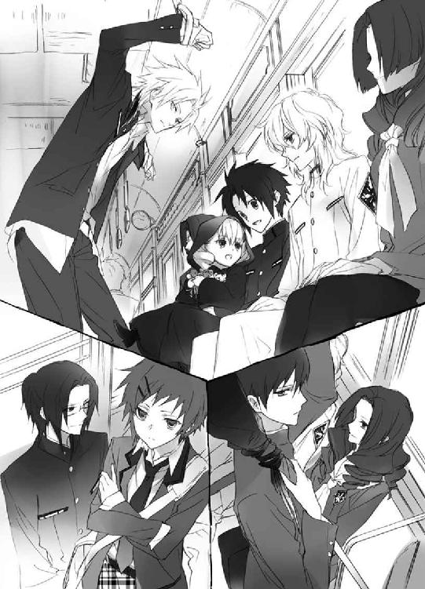
蔵田実親は、くすっと蒼司朗に笑った。
「これで狙撃されても、弾が当たるのは蒼司朗クンかなー」
「嫌なこと言わないでください！」
洒落にならない☆
「────大丈夫なのかな。囲まれたり、騒ぎになりませんか？」
目深にフードを被り、お忍びで遊びに行くといっても、大英皇国の姫は金髪碧眼で、その容姿は愛らしいうえにとても目立つ。遊園地ではしゃげば、被っているフードなんて、いつ外れるか知れたものではない。若様に至っては、いつもの白の学生服姿だ。遠目でもわかる。見るからに不良っぽい篠原勇輝の怖い威嚇も、大人数が相手では、どれほどの効果があるだろう。
「案ずるな、蒼。我は『人払いの護符』を持っておる」
姫と若様はにっこり顔を見合わせて、懐に入れていた護符を、しゅぴっと出して見せた。
『人払いの護符』は、帝都神社の優秀な神官によって作られた、霊験あらたかな護符だ。敵意のない人間だけ、この効力を逃れ、所持者に気づくことができる。
「我は昨日もこれを持っておった。だから、蒼に見つかったときは、たまげたぞよ」
「驚かせてごめんね」
「ウミュ」
「キュウ」
「ピピ」
「「（しゃー）」」
蒼司朗と同じように、ピヨ四神も姫を見上げて謝る。
円らな瞳に見つめられ、姫はくすぐったそうに笑う。
「いや、我は往生しておったのじゃ。見つけてくれてよかったぞ。蒼が信頼できる人間であることは、連れを見れば明白じゃ」
ファンシーでキュートなピヨ四神は、子供のストライクゾーンど真ん中であり、可愛いピヨ四神が懐いている蒼司朗は、とても優しい感じがして、姫の警戒を難なく解いた。
「今日も、公儀隠密が動いてくれてるから、心配いらないわ」
にっこりと芙蓉薫子は微笑む。綺麗なお姉さんに優しく微笑みかけられ、姫は恥ずかしそうに笑った。
「うむ。頼りにしておる」
姫は無邪気で悪気も何もないが、照れた姫にぎゅーっと絞めあげられて、抱っこされていたピヨ四神は、一瞬ぐえっとなった。
（うお☆）
中身が出そうになったピヨ四神を目の前で見た篠原勇輝は仰天したが、ピヨ四神は心配しないでと、ぐったりしながらも尾（羽根）を振って合図した。
「どのぐらい乗るのじゃ？」
「十分ぐらいですよ」
帝都北地区に詳しい蔵田実親は教える。
「そうか。もうすぐじゃのぅ」
バスに乗っているだけで楽しいらしく、姫は足をぱたぱたさせる。行儀悪く、必要以上にスペースをとって立っている篠原勇輝は、姫の足のぱたぱたエリアからかろうじて外れているが、バスの揺れで落ちないようにしっかり姫を膝の上で抱っこしている蒼司朗には、逃げ場はない。
（あれって、モロに向こう脛に入ってね？）
小さな靴の踵が、ガンガンと。
（チビのくせに辛抱強いなぁ、コイツ☆）
身長のことは余計だが、黙って篠原勇輝は蒼司朗に感心する。ピヨ四神のご加護で、ひょっとすると痛くはないかもしれないが、鬱陶しいのまでは改善されない。
何か口出しして、自分に火の粉が飛んできては面倒だ。姫がご機嫌ならば、多少の犠牲はやむを得ない。姫のお守りに抜擢された蒼司朗には気の毒だったが、誰も蒼司朗に交代しようとは言わなかった。
幸楽園は帝都の北東部にある遊園地だ。広い遊泳プール施設や、野球場、グラウンド、植物園などもあり、小さな子供から大人まで楽しめる場所として、帝都民に親しまれている。
一月二日、開園記念日の幸楽園は、入園ゲートがオープンになっていて、誰でも自由に、何度でも入れる。遊具で遊ぼうという子供はもちろん、最近は来園していないが、散歩がてら入ってみた者、昔の思い出を懐かしむ者など、大勢の人々が足を運んでいた。旧知の顔を見つけ、年始の挨拶を交わす姿も、あちこちにある。
混雑はしているが、適度に歩き回って楽しんだら、また後日（もしくは来年の開園記念日に）来ようと、穏やかに来園者は入れ替わる。ミラーハウスのように、適度に区切って客を中に入れるものは、比較的さくさくと楽しめるが、人数制限のきっちりした乗り物系の遊具は、だいたい、一時間から二時間待ちだ。
入園ゲートを入ってすぐのところで、姫は着ぐるみウサギから、十歳以下の子供にプレゼントされる風船をもらった。姫が抱っこできなくなったので、ぴょんと跳んでピヨ四神は蒼司朗にくっつく。
蒼司朗と手を繫ぎ、うきうきと歩きだしてから、姫は首を傾げる。
「......何かついておるぞ」
紐の先に、折り畳んだ紙が結ばれていた。
「失礼します、姫」
騎士が姫君に跪くように腰を落とし、蔵田実親は姫の風船の紐から、紙を外す。
「────公儀隠密からの、伝達事項です」
振り向くと、風船を配っていた着ぐるみウサギは、クマに替わっていた。
「こちらに、公儀隠密が多数潜入しているようです。姫の御身を狙う不逞の輩の排除活動を行いますが、気にせずお楽しみくださいとのことです」
売店の近くでたむろしていた男子大学生らしいグループが、芙蓉薫子に向かって口笛を吹き、手を振った。
慣れている芙蓉薫子は、いちいちリアクションせず、聞こえない振りを通すのだが、今日はそれに愛想よく手を振って応えた。
（え？）
眉を顰めて、蒼司朗は振り向く。絡まれても嫌だなと、意識して目を合わさないようにしていたのだが、よーく見ると、見覚えがあった。というか、わかるように変装していた。
（藤丸さん......☆）
どこか自棄になったのか、藤丸の率いる若手公儀隠密候補生集団は、軟派野郎の集団と化していた。もう、見るからに。チャラい☆ 女の子と見れば声をかけ、断ってもうろうろとしつこくつきまとわれそうだ。
「蒼、あれは何じゃ？」
姫は幼稚園児ぐらいの子供が馬乗りになっている、動物型で動くものを指さす。
歩くぐらいの速さでゆるゆる動く、園内専用の乗り物だ。ハンドルがついているので、カーブにも対応できる。
「乗る？」
「乗る！」
止まっているものなら、どれでも好きなものに乗れる。姫はきょろきょろと見回してパンダを選び、蒼司朗に抱っこして乗せてもらった。小此木神官長から預かってきたコインを蔵田実親が投入して、パンダがゆるゆると動きだす。
「おぉ！ 進むぞ！ 楽ちんじゃ！」
姫はご機嫌でパンダに乗って移動する。
「ミギャギャ」
「キュイキュオ」
「ピチュピチュ」
「「（しゃー）」」
蒼司朗にくっついていたピヨ四神も、ぴょんと跳んで姫の乗るパンダに便乗した。ピヨ四神もやってきて、姫は朗らかに笑う。
「はしゃぎすぎて落っこちるなよ？」
蒼司朗は笑いながら、姫の乗るパンダの横を歩く。幸楽園の来園者は多い。
「人にぶつけないようにね」
「うむ。気をつけねばな！」
姫はハンドルをしっかり握る。
大はしゃぎの姫に、安藤奏は溜め息をつく。
「......歩いたほうが早いのに」
「俺はガキのとき、必ず乗ってたぞ？」
乗って当たり前だろうという顔の篠原勇輝に、若様は微笑む。
「虎のやつかな？」
「虎です！」
当然と、犬歯を見せて篠原勇輝は笑った。
「蒼司朗くん、右に行ってちょうだい」
「はい」
後ろを歩いている芙蓉薫子に言われ、蒼司朗は何事かと振り向く。芙蓉薫子は手に持った園内図を見せて、にっこり笑った。
「最初は『コーヒーカップ』なのよ」
篠原勇輝たちが蒼司朗を探していた間に、制覇したい乗り物と順番が決まっていたらしい。
そして先に入園していた公儀隠密候補生たちによって、順番取りがなされていた。
友人（のふりをした公儀隠密候補生）が先に並んでいたのと入れ替わり、姫はあまり待つことなく、効率よく、目をつけていた遊具に乗ることができた。
「────ダメか？」
「身長が足りないからね」
身長確認ボードの横で、蒼司朗はピヨ四神を抱っこした姫に苦笑する。
とりあえずダメもとで公儀隠密候補生は順番取りに並んでくれていたが、ジェットコースターは、小さい子供は乗れない。
「あっちもダメかのう？」
「うん。ダメ」
フリーフォールにも、最低身長の規定がある。
「じゃあ、あれは？」
「あっちもダメだよ」
パイレーツも、フライングカーペット系で、安全バーをしっかりかけるために、体格の小さな子供は乗れない。
「メリーゴーランドにしない？」
「あれは、遅いから嫌じゃ」
（スピードなのか☆）
姫の遊具選択のポイントを、蒼司朗は正しく理解した。
ただし、移動の足に、姫は乗用パンダを愛用しているので、あれは別のようだ。
10
「遊びに出かけるときの、女の子用と言ったら、信じましたねぇ」
機嫌よく出かけて行った姫を見送って、くすくすと笑う小此木神官長に、鈴宮神官は渋い顔になる。
「子供に噓をつくのは、感心しません」
「噓も方便と言うじゃないですか。四神の戦士諸君がいっしょなんです。滅多なことにはなりませんよ」
絶対の信頼を寄せているのだと受け取るほうが、幸せなのだが。
（面白がってますね......）
御身を狙われている稚い姫を守るために、どういうことをしてくれるのか、わくわくと楽しんでいるようにしか見えない。
小此木神官長は、帝都観光（幸楽園）に向かう姫と若様に、『人払いの護符』を渡した。
若様にとって『人払いの護符』は、混雑するだろうと予想されている場所にお忍びで外出するときには、幼いころから必ず持たされた、馴染み深いものだ。学校内や通学路など、毎日若様の姿を見る機会のある者は、慎みのある態度で『若様を離れて見守る』ことができるのだが、帝都民でも滅多に若様の姿を見かけない者は、ついつい過度に接近しすぎたり、長く若様の姿を眺めようとつきまとったりしてしまう。
今期の若様は、見目麗しく、人を惹きつける吸引力が強すぎて、公儀隠密がこっそりと行っている人払いだけではとても間に合わない。若様が居心地悪い思いをしたり、行動を遠慮してしまうことがないよう、存在を目立たないようにさせる『人払いの護符』は、なくてはならない必需品なのだ。
大英皇国の親善大使であり、帝妃の姪、若様の従姉妹が大英皇国柳生一族の警護を受けて来日することになったので、姫にも特別に『人払いの護符』が進呈された。強力で貴重な護符は、来賓だからと、誰にでも贈られるものではない。
来日する姫が肌身離さず持つように渡されたのは、若様が使っているのと同じ『人に意識されない護符』だ。だから姫はつけ狙う追手の目を逃れることができた。
そして今日、姫に渡された護符は、以前渡されたものとは違う『危害を加えようとする者にだけ見つかる護符』だった。
関係者以外で、姫を見つけた者がいたら、それが曲者だ。
帝都に来るまで公儀隠密の活動をよく知らなかった鈴宮神官は、親善大使の護衛として来日した柳生分家の存在にも驚いた。
「大英皇国にも柳生家っていたんですね」
「先代の帝が今の帝妃のお輿入れの際に贈った、結納のようなものですよ。大英皇国と我が国を友好的に繫ぐ架け橋のひとつです。あちらの柳生家も、精鋭揃いですよ。今回は、事前に渡していた護符のせいで、標的にしていた姫にまったく近づけませんでしたから、姫の情報を得ようとした連中が、過激な行動に出たようですね。幸い、死者は出ませんでしたが、姫といっしょに大英皇国からはるばる渡航した護衛の人たちをかなり酷い目に遭わせましたからね。充兵衛翁も、とても立腹されてます」
よくもうちの親戚の子を！
柳生を名乗り、遠い外国で立派に活動している親族は、一族の誇りだった。誰一人として命を落とさずにすんだのは、彼らが常日頃から修業を怠らず身体を鍛えあげ、柳生家で特殊開発した刃物の攻撃にも耐える防護服（鎖帷子現代版）を身に着けていたからだ。
「柳生一族を敵に回すなんて、命知らずですよ」
ふうと小此木神官長は溜め息をついて顔を伏せ────。
「蒼司朗くんが来てから、いろいろと刺激的ですねー♡」
イイ顔で笑った。
報道では『帝都観光』とおおまかに発表されているだけで、姫がどこに向かう予定なのか、詳細は不明だった。
「大英皇国の親善大使のお姫様が、幸楽園遊園地に行ったらしいぞ」
「幸楽園かぁ」
「まだお小さいものね」
帝都観光に出かける姫が、幸楽園に向かったという情報は、帝都神社の初詣客の間に広まり、帝都城公園に足を運んだ来園者たちの耳に入った。
帝都には有名な観光地がいくつもあるが、行きたい場所として選んだ場所が、子供らしくて微笑ましい。話を聞いた者たちは、幼い可愛い姫が楽しく遊んでくれればいいなと願った。
（幸楽園......）
（大英皇国の姫が）
好奇心とは違うものを抱いた者たちの耳にも、その情報は入った。
大英皇国の姫の来園が決まっても、幸楽園は入場制限を行ったり、貸し切り閉園にはなっていない。幸楽園の入場者は、例年どおり多いはずだ。人ごみは利用できる。
「今度こそ、姫を捕まえろ。邪魔する者がいたら、構わず殺せ」
「成功したら、報酬は約束の倍、いや、三倍払う」
新年を寿ぐ帝都に潜伏していた賊たちは、行動を開始した。
厳重に警戒している者の目にかかれば、初詣や年始の挨拶で外出している者か、そうでないのかなど、ひと目でわかる。
「（動きました）」
帝都城公園の門番は、行き交う通行人を眺めながら、小声で呟く。
近くの物陰で、微かに気配が揺れた。
「（確認しました。尾行を開始します）」
身を潜めていた公儀隠密は、音も立てずその場を立ち去った。
いくつか幸楽園の遊具で遊んだ姫は、休憩を兼ねてレストランで食事をすることにした。
支度されかけた子供用椅子を断り、姫は蒼司朗の膝に乗る。姫のお昼ご飯は、子供の定番、お子さまランチだ。お出かけ先なのでちょっと趣向を替えて、ピヨ四神にはカスタードプリン。
「ミギャギャ」
「キュイキュイ」
「ピピチュ」
「「（しゅー）」」
「あーん」
ここでもやはり、姫はピヨ四神と同じように、蒼司朗に食べさせてもらった。
「ゆっくり食べろよ。慌てて飲みこんじゃダメだぞー」
口許が汚れたら拭ってやるなどして面倒を見ながら、片方の手で食べられる握り鮨を注文し、自分も食事をとる蒼司朗に、篠原勇輝は頭を抱えた。
「......どこまで面倒見いいんだ☆」
「頼られてますからね」
清志朗はかいがいしい蒼司朗に微笑む。期待を裏切らないのが蒼司朗だ。
「うふふ♡ 可愛い」
綺麗な指先でサンドイッチを摘まみながら、芙蓉薫子はほのぼの癒し系の姫たちを、優しい目で見つめた。
「奏クン、大丈夫かい？」
蔵田実親に声をかけられ、安藤奏はテーブルに懐いたまま、視線を動かす。安藤奏は顔色が悪く、食欲もない。注文品は、冷たい麦茶だ。
「......大丈夫そうに見えますか？」
「見えないなー」
にこにこと蔵田実親は笑う。
「だったら聞かないでください......！」
声にも力のない安藤奏に、オムライスを食べていた手を止めて、若様は思案する。
「救護室に行くか？」
「いえ、そこまでは......。ここで少し休めば、いいです。お見苦しくて、すみません」
（ってか、何で平気なんだよ......！）
若様にまで心配され、安藤奏は情けなくなる。
遊具に乗る組み合わせは、蒼司朗にべったりの姫の他は、公平にくじ引きになった。
最初の遊具のコーヒーカップは、四人乗りだったので、姫と蒼司朗、若様、そして安藤奏がいっしょになった。
きゃわきゃわとピヨ四神とはしゃぎまくった姫に、乗っていたコーヒーカップを豪快にぐるんぐるん回され、安藤奏は一人撃沈した。
「何じゃ、だらしないのぅ」
姫のにべもないひと言が、ぐっさりと突き刺さって、目眩と嘔吐感でへろへろになっていた安藤奏は、さらに追い打ちを食らった。
（だらしない......!? この僕が、だらしないって......!?）
よくできる賢いいい子と、褒められることばかりだった安藤奏には、性悪評価に加えて、大ショックである。
遠心力で、蒼司朗の袖を摑んだチビ青龍が、外に吹っ飛ばされそうになっていたのを、横のコーヒーカップから清志朗たちは温い笑みを浮かべながら見ていた。
「さっきのは、誰でも気分悪くなって、当たり前だよ。あぁいうのに強いのが、偉いわけじゃないから」
気を遣った清志朗が、気にするなとフォローしてくれたが、よれよれで気弱になっていた安藤奏は、まったく立ち直れなかった。
見目麗しく、よく体育の授業を見学したり、学校を早退する若様だが、蟲の穢れに弱いだけで、体力は十分にある。か弱そうなのは、脳内イメージだ。長旅をしながら公務で外国を訪問している姫は、柳生信兵衛翁に鍛えられていて、小さいが体力があった。
若様と姫は、血の近い従兄妹だけあって、同じように三半規管が強かった。
巌手で運転免許をとり、舗装されていない山道の悪路を走行して、ショベルカーの運転を練習してきて現在に至る蒼司朗は、しっかり乗り物慣れしている。
負けず嫌いの性分が災いして、その後も休むことなく遊具に参加した安藤奏は、回復することなくどんどん衰弱していった。昼食休憩は、貴重な静養ポイントだったので、安藤奏は恥を捨ててテーブルに懐いていた。
若様と同じになるよう注文したオムライスを食べながら、篠原勇輝は思い出す。
「奏って、竜巻とか、回転系の技、使ってなかったか？」
四神変化して、青龍の戦士になったときに。言われて、蔵田実親は考える。
「奏クンの場合、ほとんど自分が回ってませんでしたからね」
回っていたのは、操っていた水。
ピヨ四神のうち、チビ青龍は軽く目を回していたようなので、ひょっとすると青龍は他人の起こすぐるんぐるんに弱いのかもしれない。
純粋で無邪気なものは、警戒の枠からも外れるため、なかなかに質が悪い。
昼食中の姫の様子を、賊たちは見つめていた。
「────ここを出たら、『やる』ぞ」
お腹が空いていると気が立つが、休憩と食事をとり、ゆったりした気分で出てきたところならば、気持ちに隙も生じている。拉致したあとに与える水や食料も、急がなくてもいい。
アトラクションステージの控室で賊の行動を監視していた柳生蘭丸は、動きだす気配を感じて、合図を送った。
「一人も逃がすな」
『了解』
遠く離れた場所から、合図を待っていた柳生藤丸は、舌舐めずりをする。
「いっちょ、ヤキ入れてやるぜ」
柳生藤丸率いる偽ヤンキー集団（本物にしか見えない☆）は、ばきばきと指を鳴らした。
着ぐるみに身を包み、風船配りや記念写真の撮影、誘導をしていた公儀隠密たちも、さりげなく仕事をひと段落させて、移動を始める。
一般来園者のふりをして潜入している、公儀隠密や候補生以外の柳生一族縁の者たちも、油断なく周囲の様子を探った。
「次は『タコ』なのじゃ！」
パンダに乗り（公儀隠密候補生によってキープされていた）、昼食を終えた姫は次の遊具を目指す。
遊具名『オクトパスパス』。タコが身を捩りながら曲げ伸ばしする足の先に座席のついた、ぐるぐるぶんぶんタイプの遊具である。
（いったいいくつ、こういうのがあるんだ!?）
安藤奏は、恨めしげに思う。他にないのか！
「────安藤くん、食べたばっかりだから、僕は今回乗らずに待ってようと思うんだけど」
清志朗は安藤奏に、にっこり微笑む。オクトパスパスの座席は二人一組なので、清志朗が乗らないなら、一人あぶれる。一人で乗るのもアリだが、休む者を一人で待たせるのも薄情だ。
据わった目で安藤奏は答えた。
「僕は乗ります......！」
気遣いは無用と、安藤奏に切り捨てられ、清志朗は苦笑する。
くじ引きの結果、あぶれたのは篠原勇輝だった。
「ありゃ絶対、帰るまで保たねーな☆」
篠原勇輝は、ぐったりしながら座席で揺られている安藤奏を冷静に見る。次に強烈に揺さぶられたら、安藤奏の魂は口から出そうだ。
「本当に負けず嫌いだね。そういうとこ、蒼くんと似てる......！」
預かった枝打ち斧を持ち、くすくすと清志朗は笑い、篠原勇輝は渋い顔になる。
「そっかぁ？」
安藤奏を突き動かすのは、山より高い自尊心だ。学年一小柄な蒼司朗の負けず嫌いと、同じではない。
「うん。弱音を吐かない、一生懸命なところがね。蒼くんとは違うけど」
清志朗にはわかる。やり遂げたいことがあるから、蒼司朗はがんばっている。
（蒼くんは、なくすことを知ってる）
どんなものも、ほんの一瞬で、簡単に取り上げられてしまうのだということを。
取り戻せない大切なものや、取り返すために必要な、気の遠くなるような努力を知っている。
昼食休憩で回復したＨＰを一撃ですべて消費して、安藤奏は蔵田実親に支えられ、遊具を下りた。
「次は、『クレイジーウイング』じゃ！」
篠原勇輝がキープしておいたパンダに乗った姫は、嬉々として次の遊具に向かう。
「本当は、あっちのジェットコースターがよかったのじゃが、のぅ」
すぐ近くに見えているのに、乗れない。
「また今度ね」
残念そうな姫に、蒼司朗は微笑む。姫は元気に頷いた。
「そうじゃな！」
ものを見なくても、名前を聞いただけで、どんな遊具か、だいたいの想像はつく。
クレイジーでウイングだ。確実に、ぶんぶんタイプだ。
（作った奴、コロス......！）
安藤奏の思考が物騒な方向に大きく傾いたとき、それは起こった。
オクトパスパスからクレイジーウイングに向かうには、野外アトラクションステージの横を突っ切っていくのが早い。
ショーの合間に当たっていたアトラクションステージは、来園者が居座らないよう、周囲の広場ごと、幕で囲っていた。ステージや客席には、機材の入った箱らしきものがいくつか置かれ、準備中という様子の場所は、少々居心地悪くて気が引ける。
幕で囲われていても、完全に締め切られてはいないので、園内の移動のショートカット、通り抜けには使える。だが、ここで足を止める者はいない。
蒼司朗たちと同じように、ここを通り抜けようと、十メートルほど先を歩いていた初老の男性二人が、向かいから歩いてきた男性の集団に、擦れ違いざま、いきなり殴り倒された。蒼司朗たちのあとから歩いてきた中高生らしい少年のグループも、すぐあとから来た数名の男性に、いきなり殴られて次々に倒れた。
悲鳴すらほとんどあがらない、瞬時の出来事だ。
幕のすぐ向こうには、アトラクションの順番待ちをしている人々や、ひっきりなしに客の訪れる売店がある。だが幕に隠されて、向こうにいる者たちに、こちらの様子は見えない。
口論するなど、何かトラブルの発生を感じさせるものはまったくなかった。
突如として大勢の暴漢が出現するという異様な状況に、姫は驚く。
「何事じゃ!?」
周りにいた無関係な来園者たちを速やかに黙らせた暴漢は、蒼司朗たちを取り囲んだ。
暴漢たちの手に握られた刃物が、ぎらりと輝き、姫は息を吞む。
パンダに素早くブレーキをかけ、蒼司朗は姫を抱き上げて、清志朗に託す。姫といっしょにパンダに乗っていたピヨ四神は、蒼司朗に飛びついた。
「清ちゃん、お姫様と若様の側にいてね」
「うん」
暴漢たちに、若様の存在は認識されていない。若様ではない、ただの男子高校生がいると見えているだけだ。姫以外は傷つけても殺しても構わない、むしろ、警護の者は殺してしまったほうが、邪魔にならない。
タイミングを計っていた柳生蘭丸は、ぱちんと指を鳴らす。
着ぐるみの公儀隠密の投じた手裏剣が、アトラクションステージの周りを囲んでいた幕の紐を、一斉に切り落とした。
幕の裾近くに仕掛けられていた爆薬が破裂し、色とりどりのスモークが上がる。
暴漢の漲る殺意に刺激され、真っ先に安藤奏がキレた。
「青龍、招来！」
右手を天に向かって突き上げた安藤奏に向かって、帝都にある青龍神社の御社から、紺碧の光が飛び立つ。
「四神変化！」
11
帝都の四神神社、それぞれの社から飛び立った光は、幸楽園のアトラクションステージの近くに下り立った。
「四神変化！」
目も眩む光に、暴漢たちは思わず、腕を上げて目を庇う。渦巻く光の圧を受け、ずずっと暴漢たちの身体が後退した。
光を纏って現れたのは、四神の加護を受けた四神の戦士。優美にして華麗。神の力を駆使することを許された、神聖なる者。
四神の戦士のことを知っていても、その活躍する姿を一般の帝都民が見る機会は、ほとんどない。
アトラクションステージを囲っていた幕が落ち、爆発音で注目した者たちは、スモークの奥から見えた四神の戦士の姿に瞠目する。
「きゃー！ 薫子お姉様ーっ！」
「すてきー！」
真紅の翼、朱雀の戦士となった芙蓉薫子に、たまたまその場に居合わせた白百合女学院の女生徒たちが黄色い声援を送った。ミス白百合。学院のアイドルは大人気だ。
「蔵田先輩ー！」
「篠原くーん！」
生徒会役員である蔵田実親は、毎朝登校時に校門で制服チェックなどの指導をしているので、顔が広い。篠原勇輝はちょっと不良っぽくて怖いが、そこが格好いい。
遊園地に遊びにくるのは、友達同士でいつでも気軽に来られる中高生以上の年齢の者が多い。同級生よりはまず先輩に声援を、と学生たちが気を遣ったせいで、四神の戦士のうち、安藤奏に送られる声援が後回しになった。
「安藤くーん！ がんばってー！」
あとから応援されても、安藤奏はちっとも嬉しくない。
お祭り好きな帝都っ子爺さんたちも、少年少女に負けじと声援を送った。
「いいぞ！ 帝都の守護神！」
ひゅーひゅー！
アトラクションステージの常連客である子供たちは、音と光に惹かれ、きゃあきゃあと歓声をあげながら走って集まってきた。
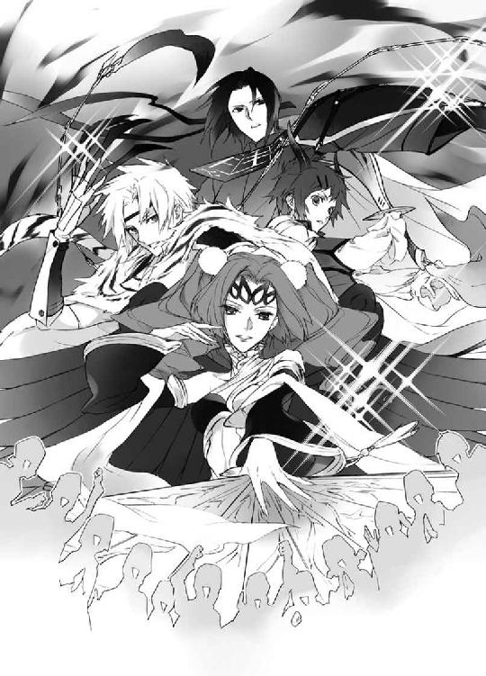
落とされた幕で区切られたラインの内側にいる者は、ショーの出演者だ。
高校生くらいの少年三人と、小さな女の子（護符のおかげで若様と大英皇国の姫だとは認識されない）を背後に庇い、並び立つ四神の戦士と、手に刃物を持った男たち。
物騒な刃物を握っている男たちは、見るからに悪者だった。
「くそ......！」
わらわらと集まってくる観客に、暴漢────大英皇国の姫を狙う悪者たちは、長居は無用と判断した。
姫の拉致を邪魔するものは、殺しても構わない。
帝都の外から来た悪者たちは、帝都は神に守られた、神聖な土地であることを知らなかった。四神の戦士を知らなかった。
知らない者の目には、神聖な四神の戦士も、仰々しいコスプレヒーローである。がくがくと笑いそうになる膝が、どうしてなのかなど、考えたくなかった。
「殺れ！」
人垣を開こうと、悪者たちの数人が隠しから手榴弾やダイナマイトを取り出すのを、安藤奏は目撃した。
「正月早々、人騒がせなものを」
キレていた安藤奏は、普段被っている大量の猫をごっそり脱ぎ捨てた。
「この僕の目の前で使おうとは、いい度胸じゃないかぁっ！」
真っ黒な笑みを浮かべ、安藤奏は巨大な青龍刀を大きく振り下ろす。
「青龍斬撃、剣乱破砕！」
何百とも見える白刃が、恐ろしい勢いで放たれる。
「ぐあっ！」
「ぎゃっ！」
三人の男たちが手に持った爆発物だけが、微塵に切り裂かれた。
放たれた青龍の白刃は、その勢いのまま観客のほうにもいった。驚いた観客は逃げ腰になり、腕を上げて身を庇ったが、実体を持たぬ光の白刃は、悪人の持つ爆発物だけを破壊した。
凄まじい勢いで通り抜けた光の白刃に、観客たちは驚き、そしてやんやの喝采を送る。
「すげぇ！」
「格好いいっ！」
穢れた蟲を微塵に粉砕する青龍の一撃も、人間相手に加減されている。
爆発物を破壊され、呆然とする悪者に、安藤奏は微笑む。
「次に切り裂かれたいのは、何だ？」
「うっわー、出ましたねぇ、『黒奏タン』」
喉を鳴らして、蔵田実親は笑う。
溜まっていたストレスを発散するように、真っ黒だ。
「こ、のガキ......！」
まだ青い響きを残す声の、挑発的な言葉に、悪者たちの頭に血が上る。彼らはプロだ。義務教育もまだ終えていないような子供に、いいようにされて黙ってはいられない。
「テメェからぶっ殺す！」
「一人だけ、いい格好はさせなくてよ？」
芙蓉薫子は真紅の翼を広げ、優雅に飛び立ち、手に持つ羽根扇を広げる。
「朱雀炎舞、劫火招来！」
美女が麗しく舞うように振り動かした羽根扇から、渦巻く紅蓮の炎が奔った。
凶器を振りかざして襲いかかろうとした男たちだけが、炎に包まれ、人間火柱と化して燃え上がった。
「熱いぃっ！」
「ぎゃっ！」
炎に包まれた男たちが、苦悶し転げ回る。
ぐあっと恐ろしい勢いで燃え広がった炎は、一瞬、火柱高く観客のほうまで押し寄せたが、やはり観客に危害を加えるものではなかった。
「うふ♡」
ぱちんとウインクした芙蓉薫子に、きゃーと黄色い悲鳴があがった。
炎に包まれた三人の男たちは、苦悶し、悲鳴をあげながら転がっているが、焼け爛れる様子もなければ、髪や衣服が燃え落ちる様子もなかった。身を焦がす匂いもしない。
悲鳴と悶え苦しむ様こそ恐ろしいが、炎に包まれていない悪者には、よくできた芝居か幻術のように思えた。
「このっ......！」
「騙されるな！」
「次は僕ですね」
蔵田実親は、多節鞭を振るう。
「玄武凄流、酷屍霧葬！」
渦巻く霧が、襲いくる男たちを取り巻く。意志を持つような濃霧は、男たちの呼吸器官にまで容赦なく侵入する。
「う、ぐっ！」
「......っ！」
息を詰まらせた男たちが苦しげにもがき、呼吸しようとあがきながら、次々に膝を折る。静かだが、目を剝き苦しむ様子は壮絶で恐ろしかった。
濃霧は、やわりと蠢くように揺れて観客のところまで流れたが、やはりそれは観客を襲うことなく、すうっと消えた。
濃霧による窒息は、しかし対象とならなかった者にとっては、現実感のない目眩ましだ。
目を奪う派手さと、襲われた者の反応の大きさに驚くが、それだけだ。
仲間が窒息して苦悶しながら倒れていくのを横目に見ながら、隙を衝くように別方向にいた悪者が動く。
今のうちに、姫を────！
「仲間やられてんのに、あんたら、冷たいんじゃね？」
白銀の光が瞬いたかと思ったら、男たちの前に険のある面差しの少年がいた。
「白虎乱砕、断骸絶敵！」
手に装着された、巨大な爪を模した武器で薙ぎ払われ、男たちが吹っ飛ぶ。
一撃で決める鮮やかな技に、観客から拍手が沸き起こり歓声があがる。
迫力満点だが、人間を相手にし、観客のいる状態で披露される四神の戦士の攻撃は、あくまでパフォーマンスの域を出ない。爆発物こそ、粉微塵になったが、人体に損傷を与えるようなものは何もなかった。体力を著しく消費するだけだ。悲鳴をあげて悶え苦しんだ者も、時間がくれば魔法のように、恐ろしい攻撃は消えてなくなった。攻撃を受けている者にとっては酷く長く感じても、実際には十秒程度だ。だから観客は、ショーとして安心して見ていられた。
派手な衣装を纏った少年たちに、いいように翻弄され、見せ物になるなんて、悪者にはまったく我慢ならなかった。彼らは素人の集団ではないのだ。
（使うつもりはなかったが）
腸の煮えくり返る状況を打破するためには、なりふりなど構っていられない。
「これでも食らえ！」
男は懐から取り出したものを、投げつけた。
反射で、青龍の戦士の安藤奏が技を放つ。
「青龍斬撃、剣乱破砕！」
何百とも見える白刃が、恐ろしい勢いで放たれる。
投じられたものに、蔵田実親は目を剝く。
「いけません！」
あれは、手榴弾ではなく、アンプルに入った薬品だ。
（あっ......！）
技を放ってから、安藤奏はそれに気づく。だが、放った白刃は止められない。
姫を狙う悪者たちは、ガスマスクを装着し、素早く地に伏せ耳を塞いでいた。
（結界を！）
観客と、そして若様たちを守る防御結界を発動しなければ！
玄武・朱雀・白虎の戦士は、防御結界の印を結ぶ。
そして、蒼司朗も動いた。
「お庭番、望月蒼司朗、参る！」
枝打ち斧を構え、姫を抱えている清志朗と若様の前に、敢然と立ちはだかる。
神官としては修行中で、まだまだ力はないが、しかし蒼司朗には、頼りになって可愛い奥庭の四神がついている。
青龍の戦士の放った光の白刃によって、アンプルは粉々に砕けた。
その衝撃で、飛び散った液体は、爆発した。
（ニトロか！）
ダイナマイトの原料であるニトログリセリンは、わずかな衝撃でも爆発する、危険な液体だ。
結界術においては、四神の戦士で一番のエキスパートである玄武の戦士、蔵田実親は決死の覚悟で結界を作る。
ズシン！
突如、地面が揺れた。観客たちから悲鳴があがったが、落ちた幕で引かれたラインの外側を、噴き出た爆風が襲うことはなかった。
まるでそこに、見えない透明の壁があるように。爆発による凄まじい衝撃も爆風も爆音も、結界が封じた。
人間は守られたが、蒼司朗たちから少し離れたところにあった、姫の愛用していたパンダ型の乗り物は、爆発の中心に近かったこともあり、跡形もなく吹き飛んだ。
「紅翼炎技、紅蓮激渦！」
羽根扇で炎の竜巻を起こし、朱雀の戦士・芙蓉薫子は、結界内に充満した視界を遮るものを焼き払い、爆煙を追い払う。
身に纏った青龍の鎧で、その身は完全に守られたものの、精神的な衝撃で、安藤奏は茫然自失となる。
（────僕のせいだ......）
今の爆発は────。
爆発の衝撃に身構えていた悪者たちは、すぐに行動を開始した。
悪者たちは素早く起き上がり、何人かが懐からアンプルを取り出す。
（またニトロ!?）
すべてがニトログリセリンである必要はない。一度あれだけの爆発を起こしておけば、アンプルを見せるだけで、迂闊な攻撃はできないと警戒される。
ダミーの可能性は大きいが、手出しできない。
ニトログリセリンでなくても、何か嫌な感じがする。こういう勘は、外れないことが多い。
「そう、思いどおりにはさせません！」
アンプルを手に、向かってくる男たちを睨み、玄武の戦士・蔵田実親は多節鞭を振るう。
「玄武猛攻、雪刖渦！」
一陣の猛吹雪が、アンプルを手にした男たちを襲い、捕らえた。意志を持つように蠢いた猛吹雪は、男たちを包み、摑んだアンプルごと、その手を氷で包み、凍てつかせる。
分厚い氷で包んで凍らせてしまえば、ニトログリセリンは安定する。簡単に爆発はしない。
「白虎刻抉、毒禍爪爛！」
白銀の光の速さで男たちに襲いかかった白虎の戦士・篠原勇輝は、分厚い氷に包まれているアンプルを、凍てついた男たちの手から弾き飛ばした。
「くそ......！」
「の野郎っ！」
「死ねっ！」
悪者たちはナイフや隠し持っていた棒を振りかざし、篠原勇輝たちに襲いかかる。
今、この場に小此木神官長はいない。
四神究極奥義を発動し、危険物の消去を行うことはできない。
「蒼司朗！」
俊敏な動きで刃物を避けながら、振り向いた篠原勇輝に呼ばれ、若様たちを背で庇っていた蒼司朗は何事かと驚く。
振り向いた蔵田実親も微笑んだ。
「キミの出番だよ。『奥庭のお庭番』クン」
「悔しいけど、任せるわ！」
朱雀の戦士・芙蓉薫子は、にこっと笑ってウインクし、一回転して優雅に舞うように羽根扇を打ち振った。
吹き抜けた一陣の風が、小柄な蒼司朗を一瞬にして空の高みへと運び上げた。
衣服が引き剝がされそうな強風が来たと思ったら、目の前から忽然と蒼司朗が消え、清志朗にしっかりと守られた姫は仰天する。
「蒼！」
吹き飛ばされてしまった!?
悲鳴のような声で呼んだ姫を、清志朗は優しく抱く。
「大丈夫、心配ないよ」
（薬を溶かした水も、お昼ご飯のときに飲んでるし）
「望月蒼司朗は、『お庭番』だ」
目を瞬く姫に、若様は言った。
「奥庭の四神すべての加護を受ける、『天の戦士』だ」
吹き飛ばされたのは、蒼司朗だけではなかった。
姫や若様の持っていた『人払いの護符』まで、吹き飛んでいた。
観客たちは、突如認識できるようになった若様と、大英皇国の小さな姫の姿に、ぎょっとする。
悪者に狙われているのは、若様と姫様に違いない。
「きゃー！ 薫子先輩、がんばってー！」
「そこだ、行け！」
「白虎のお兄ちゃーん！」
悪者をやっつけろと、観客たちの声援も、ヒートアップする。
不埒な悪人とはいえ、生身の人間が相手なので、軽傷ですむよう、四神の戦士の力はおおいに制限されている。
鬱陶しいが、蟲のように、ぷちっと潰してしまうわけにはいかないのだ。
風の力で高く舞い上げられた蒼司朗は、突然のことに仰天する。
「なっ......!?」
出番だ、任せたと言われても────。
「ミギャギャギャ」
「キュイキュイ」
「ピチュチュピピ」
「「（しゃー）」」
落ちていく蒼司朗にくっついていたピヨ四神が、自分たちの存在を主張して鳴く。
蒼司朗にはどうしたらいいのかなんて、わからないけど。
「そっか。お前たちには何とかできるんだな」
ならば、蒼司朗はそれに手を貸すだけだ。
蒼司朗は枝打ち斧を握り直す。
「お庭番、望月蒼司朗────、参る！」
上空で、虹色の光が弾けた。
奥庭の四神の戦士が発動する！
蒼司朗にくっついていた奥庭の四神は、いったん蒼司朗から離れると、七色の光でできた雄々しい成獣に変化し、蒼司朗を囲み、包みこむ。
七色の光に包まれ、その強烈な圧に、蒼司朗の意識が吞まれる。
奥庭の四神と、ひとつになる────。
虹色の光は卵となって、蒼司朗を包みこむ。
（熱い......）
四肢の自由が利かない。頭が朦朧とする。
何度体験しても慣れることはないが、自身が曖昧になる不安も苦しさも、蒼司朗は乗り越えられる。
（オレは......！）
天の戦士に、生まれ変わる。
身体を伸ばそうとする蒼司朗に、蒼司朗を包みこんでいた虹色の光の卵に、亀裂が走る。
奥庭の四神の加護を受ける戦士が、孵化し、目覚める────！
神官たちの祝詞によるサポートはないが、昨日から帝都は大勢の初詣客で賑わっていた。
帝都に溢れる人々の祈りが、蒼司朗に届く。
虹色の光の卵に流れこむ、温かなもの。
（帝都を、守るよ────！）
ここは、大切な者たちが大切に思う場所。皆の憧れの都────。
虹色の光の卵から現れたのは、四神の加護を示す鎧を纏った蒼司朗だ。
静かに目を開いた蒼司朗は、愛用の枝打ち斧から変化した、立派な戦斧を握る。
「お庭番、望月蒼司朗、参る！」
ふわり、真紅の翼を広げ、蒼司朗は足元にある幸楽園を見下ろし、アトラクションステージを探す。
「あそこにミラーハウスがあって、観覧車があっちだから......」
ミギャギャ！
「え？」
鳴き声が聞こえた気がして、蒼司朗は促されたほうに目をやる。
「あ......、ジェットコースター」
あれは確か、アトラクションステージの真後ろを通過していた。
（連れてってもらっちゃえ）
ばさりと赤い翼を動かした蒼司朗は、ジェットコースターの車両に向かって舞い下りる。
先頭車両に乗っていた小学生は、突然空からやってきた赤い翼の少年に仰天した。
「ごめん、ちょっとそこまで乗せてね」
先頭車両の先に便乗した蒼司朗は、すぐ後ろにいる小学生に詫びる。
小学生は、奇天烈な格好をした不思議な少年を、まじまじと見つめた。
「────お兄ちゃん、どこまで行くの？」
声変わりにはまだ遠い子供の声の問いかけに、蒼司朗は振り向いて微笑む。
「悪い奴らをやっつけに行くんだよ」
ジェットコースターは素晴らしい速度で、蒼司朗をアトラクションステージまで運んだ。
「蒼！」
憧れのジェットコースターに乗って颯爽とやってきた蒼司朗に、姫は目を輝かせ大興奮する。
（蒼くん......☆ 迷子になったね？）
従兄弟の清志朗は、蒼司朗がどうしてそれに乗ってきたのか、ひと目で正確に理解した。
ジェットコースターはアトラクションステージの裏に敷かれたレールを走行する。
「乗せてくれてありがとう！」
礼を言って、蒼司朗は戦斧を握り直す。
そしてジェットコースターに乗っていた小学生は、しっかりアトラクションステージの様子を目撃していた。若様と大英皇国の姫が、追い詰められたようにいて、大勢の大人とコスプレヒーローらしき者たちが戦っていた。
「お兄ちゃん、がんばって！」
「悪い奴らをやっつけてね！」
やんやと送られる声援に手を振り、蒼司朗は颯爽とジェットコースターから飛び立った。
ジェットコースターに乗って現れた、もう一人のヒーローに、アトラクションステージの観客たちから、わっと歓声があがる。
危険な爆発物を凍らせたアンプルは、もう溶ける。そして悪者が隠し持っていたアンプルに入っていたのは、ニトログリセリンだけではなかった。
（細菌兵器!?）
奥庭の四神の戦士に変化しているから、わかる。あれが散布されたなら、この遊園地だけでなく、帝都中、大変なことになる。処置が早くて助かるのは、最初から治療法をしっかり準備しているだろう、菌を撒き散らす連中だけだ。
「四神演武、多魔都掃！」
大きく空を薙ぎ払うように動かされた蒼司朗の戦斧が、虹の光を掃いた。
すべての穢れを叩き出すように、地面に落ちた虹の光に弾かれて、落ちていたアンプルが飛び上がり、悪者たちも足元を掬われる。波紋のように再度来た虹の光の圧を受け、アンプルは砕け散り、光の粒となり────五弁の花びらを持つ赤い花へと変わった。
くるくると回りながら落ちてくるそれは、春の事触れの花、そして────。
清浄な虹の光で昏倒し、顔面から地面に落下した悪者たちを見て、蔵田実親は笑った。
「侘助ですか」
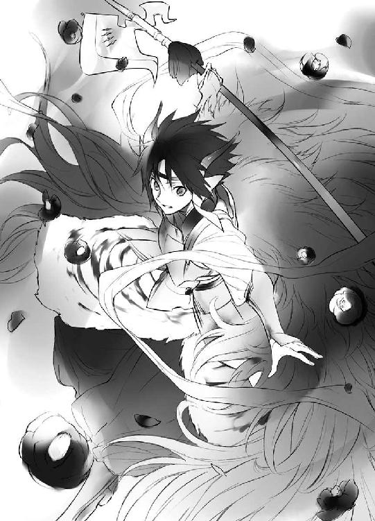
12
「次は、『クレイジーウイング』じゃ！」
幼い姫が楽しそうに宣言する声は、こそこそと尾行していた悪者たちの耳にも入った。
「誘いこむ手間が省けたぜ」
拉致誘拐に最適な場所があると目をつけていた悪者たちは、絶好の機会が巡ってきたと、行動を開始する。
何か悪事が行われるとき、その首謀者が必ず現場にいるとは限らない。現場にいる者だけが実働部隊とは限らない。
幕で仕切られ、周辺から見通しの悪くなったアトラクションステージの前を、姫を連れた少年たちが通りかかる。
「続けて誰かが入りこまないよう、見張ってろ」
姫を拉致し、隠して連れ去るところを、誰かに見つかると面倒だ。
「はいよ」
「りょーかい」
小遣い銭で雇われて帝都の外から連れてこられた十名の不良少年たちは、二手に分かれ待機した。ちょっと柄の悪い少年たちが、見通しのよくない場所の手前でたむろしていると、善良な普通の人はそこを通りたくなくなる。
少し足止めできれば、拉致誘拐は、誰の目にも触れることなく終わるのだ。
姫の一行の前に、初老の男性二人が幕の奥に入っていった。姫の一行のあとから、中高生らしい少年六人のグループも歩いていった。
「あーあ、可哀相に」
巻き添え決定。本心から可哀相なんてまったく思っていない声で言って、見張りをしていた少年たちは大笑いした。悪そうな少年たちの下卑た嫌な笑いを聞き、幸楽園に遊びに来ていた人たちは、関わり合いにならないよう、距離を取る。
「帝都では犯罪幇助者に少年法は適応されぬ」
いきなり耳元で聞こえた、落ち着いた男の声に、幕の近くにしゃがみこんでいた不良少年たちは、ぎょっとして振り向く。
姫の誘拐を企む男たちが殴り倒したはずの初老の男性が二人、そこにいた。
また、もう一方の側でも、あっけなく殴り倒されたはずの中高生の六人組が、見張りを行っている不良少年の背後に、音もなく立っていた。
「可哀相に」
まだ青い響きの残る声で、中学生の少年は言った。
隠し持っていた凶器を持ち出す前に、不良少年たちはあっけなく気絶させられた。鮮やかな手際だった。
「撤収します」
初老の男性たちと、中高生のグループは、気を失った不良少年を抱え、速やかにその場を離れる。さりげなく近くに待機していた者たちが、上手にフォローした。
見事なお手並みに、柳生藤丸はウインクし、グッジョブとサムアップする。
「さぁすが、我らが一族。やるねぇ」
公務員である公儀隠密には、大学卒業以上の学歴と実力が必要だ。候補生として活動できるのは、大学進学のときに行われる選抜試験を通過した者だけだ。年齢に達しない者は、日々鍛練と修業を続けて、選抜試験に備える。
公儀隠密となっても、怪我での任務継続の断念や、寿退社、定年退職がある。選抜試験の選考に漏れたものの、何かしら柳生本家の役に立ちたいと、公儀隠密の一族を誇りに思って、鍛練を続けている者もいる。
昨日、大勢逮捕された掏摸集団のお株を奪う作戦だが、柳生充兵衛翁は、普段活動に参加していない一族の者にも声をかけ、協力を募った。
着ぐるみ着用の現役の公儀隠密、私服で潜入している公儀隠密候補生の他にも、幸楽園には今、柳生一族の者が大勢いる。
公儀隠密や候補生ではないが、腕の立つ者は、潜入者として最高だ。一般に弱者として分類される、外見的にごく普通の高齢者や女子供が、武芸の達人であったり、特殊訓練の経験があると、誰が予想するだろうか。
人目の届かない場所で、密かに行われようとしていた大英皇国の姫の拉致誘拐は、アトラクションステージとして、幕を開かれた。
景気よく爆薬が音を立て、色とりどりのスモークが上がる。
「え!? 何」
「何か始まるのか!?」
一斉に注目した人々の前で、空から青い光が落ちてきて、少年が青く輝く青龍の鎧を身に纏う。続いて、幾筋もの光が落ち、アトラクションステージの近くにいた少年二人と乙女も、玄武・白虎・朱雀の鎧を身に纏う。
写真撮影は禁止されているので、口伝てでしか知らないが、あの姿はまさしく────！
「四神の戦士だ！」
「あれ、芙蓉先輩よっ！」
「すげー！ 本物だっ！」
帝都っ子たちは目を輝かせ、アトラクションステージに押し寄せる。幕が落ちている場所を越えて、中に踏みこもうとする者がいないよう、観客に混じった柳生一族と、着ぐるみの公儀隠密が注意した。
帝都の守護神と悪者の対峙するアトラクションステージの後方で、大英皇国の姫は少年たちに大切に庇い守られている。
「────失敗か」
拉致した姫を連れて行く際のフォローのために待機していた男は、小さく舌打ちする。
機会はまだある。
男は離れた場所にいる仲間に合図し、その場を離れる。
散り散りになり、そそくさと幸楽園をあとにしようとした男は、通りすがりの恰幅のいいおばちゃんに、いきなり襟首を摑まれた。
強い力で、ぐいと引っ張られた男は、自分の身にいったい何が起こったのかわからない。
「あんたって子は！ まったく、いくつになっても！」
大きな声で男を叱りつけたおばちゃんは、自分の膝の上にうつ伏せになるよう男を強引に引き倒し、むりっとズボンを引っ張った。
（えっ!?）
直接外気を感じ、仰天する男の尻に、おばちゃんの平手が振り下ろされた。
ぱーん！
鳴り響いた平手の音に、近くにいた者は驚いて注目し、『公衆の面前で、お母ちゃんに尻をぶたれている馬鹿息子』を見る。
「ちょっ......！」
何をするんだと、男はもがいて、見知らぬおばちゃんの拘束から逃れようとするが、問答無用でおばちゃんは強かった。押さえこまれ、がっちり抱えられた身体は、おばちゃんの膝の上から逃げだせない。
ぱーん！
「ぎゃー！」
水仕事で鍛えられた、おばちゃんの逞しい幅広の掌が、男の尻を容赦なく引っぱたく。
「叩かれてあんたは痛いだろうよ！ だけど、叩いてるあたしの手だって、痛いんだよ！」
クリティカルヒットの尻打ち音と、むくつけき男の悲鳴が、耳にイタイ☆
「ほら、あーくん。お母さんの言うこと聞かない子は、あぁやって大人になってもお尻をぶたれるのよ？」
五歳ぐらいの子供の手を引いた母親が、言い聞かせて近くを通り過ぎる。手を引かれた子供は、尻打ち音と悲鳴に怯え、肩を竦めながら、足早に歩いていった。
痛そうで怖い。教育効果は抜群である。
びしばしと容赦なく男の尻を打っていたおばちゃんの掌は、いつの間にか、男の履いていた革靴に替わっていた。
ズボンが穿けなくなるほどに尻を腫れ上がらせ、痛みで気絶していた男が、植えこみの陰で尻を剝き出しにした哀れな格好で来園者に発見され、通報されるまで、あと一時間────。
別の場所では、目を輝かせてアトラクションステージに向かう人々の流れに逆らい、園の外に出ようとしていた男の前に、おとなしそうな事務員という感じの眼鏡女性が、立ちはだかっていた。
（邪魔だな......）
避けて横を擦り抜けようとした男に、眼鏡女性が金切り声で怒鳴る。
「噓つきっ！」
耳の側で鼓膜の痛くなるような大声を出され、びくっとした男の頰に、眼鏡女性は強烈なビンタをお見舞いした。
「結婚するって言ったくせに！ 奥さんいるんじゃない！」
「痴話喧嘩だ」
「ひっでー。不倫だぞ」
「騙されたんだわ、あの女の人」
こそこそっと囁き交わされる通りすがりの者たちの声が、耳に痛い。
「ま、待ってくれ......！」
「待たないわっ！」
人違いだと言おうとした言葉は、眼鏡女性の金切り声で遮られ、強烈な往復ビンタを食らって、男の目の前に星が散った。
「謝ったって、絶対に許さないんだからっ！ 貸したお金も絶対に返してもらうわ！」
涙声で叫んだ眼鏡女性の放った、強烈なボディブローが、男の腹部にめりこんだ。
内臓が口から飛び出るのではないかと思えるような、剛力パンチを鳩尾に食らい、がっと呻いた男は、白目を剝いてその場にくずおれた。
「あんたなんて、地獄に落ちればいいのよっ！ 最低男っ！」
泣きながら罵倒して、眼鏡女性は走り去った。
結婚を餌に不倫し、金まで貢がせた最低男（濡れ衣）に、同情する者はおらず、失神した男はそのまましばらく放置された。
そしてまた、別の場所では。
「いてーな、おっさん......！」
出口に向かっていた男が、肩がぶつかったと、大学生ぐらいのチャラい青年に、絡まれていた。
アトラクションステージに向かおうと急ぐ者が多い中、どうして自分に絡んでくるのかと、男は立腹する。
「あぁ、悪かったな。急いでたんだ」
「急いでる人間は、世の中におっさん一人じゃねーよ」
「誠意見せろよ、せーい！」
別の青年が割りこんで言って笑い、四人ほどいた仲間が、げらげらと笑った。
（面倒だな）
さっさとこの場から離れたい男は、こんな青年たちを相手にしている暇はない。
「じゃあ、これで許してくれないか」
男はジャケットの内側に手を入れて、どんと青年に身体をぶつけた。
ジャケットの内に隠し持っていたナイフで、青年の腹を────。
「ざーんねん」
男に身体をぶつけられたままの近い距離で、青年は舌を出した。
腹部に突き刺したはずのナイフの刃は、青年の人指し指と中指に挟まれて、びくとも動かなかった。
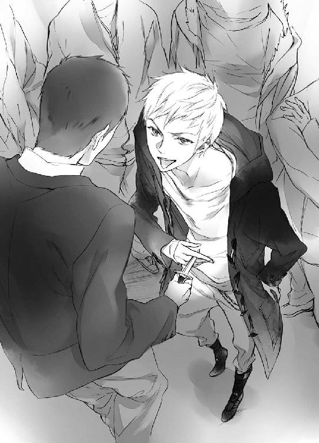
（何!?）
ぎょっとする男の腹に、どすっと青年の膝がめりこむ。
「ぐっ......！」
ナイフを摑んでいた手を離し、前屈みになった男を、青年は下から蹴り上げる。
勢いよく顎を蹴り上げられ、上体の伸びた男の肩を、背後に回ったもう一人の青年ががっちり摑んだ。
「ウチの親戚と遊んでくれて、ありがとうな。『お礼』に来てやったぜ」
指に挟んだナイフを、くるりと回して手の中に消し去り、獰猛な肉食獣の瞳で柳生藤丸は唇を舐める。
「仲間は誰も来ねぇよ。ゲートの近くにいる見張りも、駐車場で待ってるヤツも、皆、歓迎されてるところさ」
アトラクションステージのほうで、わあっと歓声があがる。
大英皇国の姫の拉致を断念し、幸楽園から離れようとした者たちは、幸楽園のあちこちで、柳生縁の者たちの手荒い歓迎を受けていた。
しかしそれはすべて、無関係の者たちの目には、あくまでも『巷でよくあるトラブル』のように見えた。
粗大ゴミが放置されていると来園者に教えられて、駐車場を確認した警備員たちが発見したのは、駐車場の端に放置された、タイヤを切り裂かれ、フロントガラスを叩き割られ、あちこちボコボコの無惨な格好になった、一台のワゴン車だった。
ナンバープレートを照会したが、盗難車らしく、該当車両は存在しない。ナンバープレートは偽造したものだ
車はエンジンに鉄パイプを突き刺され、無惨に破壊されているが、車内には砂埃も溜まっていない。
キーがついたままで、煙草の匂いがして、ついさっきまで中に運転手がいたような雰囲気がある。
「......まさかな」
「ありえないよ」
人が乗っていたのに、こんなに酷いことになるはずはない。
常識で考えようと、警備員たちは顔を見合わせて笑う。
何かとんでもないことがあったのか、無様な姿で幸楽園のあちこちに転がっていた男たちは、アトラクションステージを賑わした『悪者』たちといっしょに、特別に出動した救急車に乗せられ、『病院ではないどこか』に運ばれていった。
13
深紅の翼を大きく広げ、空から舞い下りてきたのは、戦斧を握り、虹を操る『天の戦士』。絶対の浄化を可能とする者。
虹色の光が奔り、深紅の椿の花がくるくると舞い落ちる幻想的な光景に、ほうと観客たちは溜め息を漏らした。
危険物はすべて処理され、悪者たちも地に伏した。
「あっぱれじゃ！」
清志朗の腕に抱えられていた姫が、歓喜に目を輝かせ、労った。
幼い声の響きは愛らしく、甘く皆の耳を打つ。
可愛い姫と、若様の身は守られた。
ぱちぱちと、誰かが手を叩いた。
拍手の音を聞き、花の舞い落ちるステージに魅せられていた観客たちは、次々と拍手を送る。
「いいぞ！ 四神の戦士！」
「帝都の守護神、万歳！」
「若様ー！」
「お姫様ぁ！」
惜しみない拍手と讃辞が送られ、下り立った蒼司朗は、今更ながらに、ここがアトラクションステージだったことを思い出す。
「（前に出て）」
芙蓉薫子は、そっと蒼司朗を観客の前へと押しやる。
「え、っと、あの......」
「（堂々として！）」
しゃんとしろと叱咤され、蒼司朗は姿勢を正す。
身長順で先頭になることはあっても、蒼司朗が人前に出て何かをすることは、これまでほとんどなかった。それに対して、四神の戦士の四人や、若様、姫、そして毎年のように学級委員になり、学年代表にも選ばれるような清志朗は、人目に晒されることにいくらか慣れている。
蔵田実親は小声で号令をかける。
「（礼！）」
アトラクションステージで行われていたことを、ショーだと思って見守り、惜しみない声援と拍手を送ってくれた観客に。
四神の戦士の真ん中に立ち、蒼司朗は彼らといっしょに礼をする。
（勘違いするな、オレ......！）
このあと、きっと篠原勇輝は、いつものように吠えるだろう。
────認めねぇ！
蒼司朗はほんの少し、奥庭の四神の力を借りて、天の戦士の真似ごとができるだけだ。蒼司朗の実力ではなく、お情けで。
（まだまだオレは、がんばらなくちゃいけない）
「ＯＫ！」
アトラクションステージの控室で進行を見守っていた柳生蘭丸は、仕掛けを作動させる合図を送る。
パンパン！
軽快な音をさせてアトラクションステージの周りに色とりどりの煙が上がり、ステージから光の柱が飛び立つ。
四神の戦士は変化を解き、蒼司朗の四神変化も解けた。
「（撤収しますよ、蒼司朗クン！）」
「（走れるかしら？）」
「（あ、はい、大丈夫です）」
「ミギャ」
「キュウ」
「ピピチュ」
「「（しゃー）」」
蒼司朗は元に戻った枝打ち斧を持ち、ステージ裏に急ぐ蔵田実親と芙蓉薫子に遅れないようついていく。若様と、姫を抱えた清志朗も、同じように速やかにステージ裏に駆けこんだ。
目立たない作業員の制服を着た公儀隠密たちが、倒れ伏している悪者たちを音もなく速やかに、一人も残さず搬出する。籠を背負った作業員が、舞い落ちた椿の花を素早く拾い集めた。
「（ほら、奏......！）」
急げと篠原勇輝は呼ぶが、安藤奏の反応は鈍い。
（ったく......！）
苛々と舌打ちし、篠原勇輝は安藤奏を強引に背負い上げ、皆のあとを追った。
煙が消え失せたあとのアトラクションステージには、さっきまでのことが夢であったかのように、何もなかった。
アトラクションステージに設置されたスピーカーが、来園者には聞き覚えのある、イベント終了の音楽を流した。集まった観客たちは、楽しげに笑い合いながら、アトラクションステージに背を向けた。
「もうちょっと遊びたかったのぅ」
護符をなくしてしまった姫は、残念そうに言って、蒼司朗に向かって両手を伸ばす。
「若様の護符もどこかにいっちゃったからね」
「ミギャ」
「キュイ」
「ピチュン」
「「（しゅー）」」
ピヨ四神は蒼司朗に抱っこされる姫に場所を空けてやるため、ちょこちょこと移動する。
若様は姫に詫びる。
「すまない。せっかく楽しみにしていたのに」
「いやいや、十分楽しませてもらった。我は満足しておる。今までいろんな賊に襲撃されたが、今日のようなことは、まっこと初めてじゃ！ 皆の者、格好よかったぞよ」
お日様に向かって咲くヒマワリの花のように、姫は明るく笑う。
「明日のこともある。今日はこれで戻ろうではないか！」
明日は新年の一般参賀がある。姫も若様といっしょに、帝都城東庭の参賀会場で五回、顔見せをする予定だ。途中に園遊会もあるので、ゆっくりできない。
アトラクションステージには、催しによっては大型のセットを使うこともあるので、搬入のための車が停められる場所があった。
幸楽園で四神変化した四神の戦士たちの実家、若様に同行することがわかっている篠原勇輝の白虎神社以外の四神神社からも、それぞれに迎えが来ていた。
帝都城から来た迎えの牛車を見た蒼司朗は、これで姫ともお別れかと考えて、あっと声をあげる。
「すみません、最後にもうひとつだけ！ 乗りたいものがあったんです。いいですか？」
「何じゃ？」
「蒼司朗クン」
小さな姫が聞き分けいいのにと、温い笑みを浮かべる蔵田実親に、蒼司朗は言う。
「これは絶対、姫に乗ってもらいたいって、思ったんです」
蒼司朗の瞳は澄んでいて、真っ直ぐだ。
「ミギャギャ」
「キュイキュオ」
「ピピチュピピ」
「「（しゃー）」」
蒼司朗を援護するように、ピヨ四神に円らな瞳を向けられ、蔵田実親は苦笑する。
「仕方ないですね」
奥庭の四神様には、敵わない。
ピヨ四神は姫と若様に、それぞれ二匹ずつくっつくことで加護を与えて、『人払いの護符』と同じ効果があるようにした。
姫のお気に入りだったパンダの同じ形の乗り物を、篠原勇輝がどこからか探してきて、姫は喜んでそれに乗った。
まだ姫が遊ぶ場合に備えて、柳生藤丸たちが順番取りをしてくれていた。
「やっぱりこれは、外せませんよね」
笑顔で気持ちよく入れ替わる柳生藤丸を、姫はまじまじと見つめる。
「お主、見かけの割に、よい人間じゃな」
「お褒めに預かり、恐悦至極にございます」
柳生藤丸は恭しく姫にお辞儀し、蒼司朗は笑った。
「格好で決めつけちゃ、いけないですよ」
「うむ。見直したぞよ」
「中身で勝負です」
親指を立ててウインクした柳生藤丸を、姫は驚いて見つめ、そして同じように真似して、ウインクし、親指を立てた。
蒼司朗が今日最後の遊具として選んだのは、『スカイホイール』。帝都最大の観覧車だ。
ゴンドラは四人乗り。くじ引きで、蒼司朗と姫の組には、若様と篠原勇輝が入った。
「おぉ！ 高いぞ！ 高くあがるぞ！」
「ミギャミギャミギャ！」
「キュオーキュオー！」
「ピーピーピー！」
「「（しゃーっしゃーっ！）」」
「......お前ら、もっと高く好き勝手に飛べるんじゃないのか？」
ゴンドラのガラスに、ふくふくした丸い小さな手を押しつけ、姫といっしょに大興奮で景色を見下ろすピヨ四神に、蒼司朗は呆れる。
蒼司朗の言葉を聞いて、篠原勇輝は思い出す。
「そういや、さっきル子姉に吹っ飛ばされてたな」
朱雀の戦士の羽根扇で、びゅわーっと。
「オメー、軽いから、よく飛んだだろ」
「うるせーよ」
「言っとくけど、今日のアレは特別だからな......！ オメーなんて、俺らの横に並べるわけねーんだぞ！」
「わかってるよ！」
喧嘩口調で応酬する篠原勇輝と蒼司朗に、若様はくすっと笑う。
「────姫、これが僕の生まれ育った帝都です」
「うむ。綺麗な都じゃ！」
姫は大きく頷く。
「四神様は、この帝都の守護神様なのじゃな。すごいのう」
「ギュコ」
「キュ」
「ピィ」
「「（しゃー）」」
ピヨ四神は姫といっしょにガラスに張りつきながらも、偉そうに胸を張って見せた。
「さっき飛ばされたときにも、帝都城が見えた。帝都城の天守閣からも、帝都を見下ろせるけど、帝都城が見えるのは、ここかなぁって思ったんだ」
ほかにこの高さで帝都城を見られる場所はない。
「よい眺めじゃ！ 我は嬉しいぞ！」
そして、この乗り物なら、姫が疲れることもない。
観覧車を下りたところで、蔵田実親は蒼司朗たちに微笑む。
「じゃあ、ここで解散しようか」
若様の牛車は、いつでも乗れるよう、観覧車の近くに待機していた。
「蒼、世話になった」
蒼司朗に抱えられ、姫はパンダの乗り物から牛車に乗せてもらう。
「奥庭の四神様も、まことにかたじけない」
「ミギュ」
「キュウ」
「ピチュ」
「「（しゅー）」」
姫に抱っこされていたピヨ四神は、小さな舌で頰を舐めたり、甘嚙みしたり、すりすりしたりしてひと通りたっぷり懐いてから、ぴょんと跳んで蒼司朗のところに戻った。
「それじゃ、また明日！」
篠原勇輝は牛車の横について歩きながら、手を振った。
四神の戦士は、一般参賀や園遊会にも出なくてはならない。
芙蓉薫子は優雅に微笑み、迎えの者と帰路に着く。
「ごきげんよう」
迎えの者の姿を見て、ようやく安藤奏はまともに顔を上げた。
「こんなことで僕に勝ったなんて思うなよ！」
蒼司朗に向かって怒ったように言って、安藤奏はくるりと背を向け、ついさっきまでの力のなさが噓のように、迎えに来た者を置き去りにするような勢いで、ざかざかと歩き去った。
いきなり敵意をぶつけられた蒼司朗は、何がなんだかわからない。
あっという間に離れていった安藤奏に、蔵田実親は苦笑する。
「典型的、負け犬の捨て台詞ですね」
しかし、今日、失態ばかりだった安藤奏は、相当に恥ずかしい思いをし、情けない気分になったことだろう。なまじエリートであるだけに、失態の連続は堪える。
何の努力もせず、たまたま奥庭の四神に気に入られただけでと、常日頃、蒼司朗のことを不愉快に思い、馬鹿にしている自覚があるから、あんな言葉が出たのだろう。
「それじゃあ、僕もこれで」
蔵田実親も、迎えの者といっしょに帰っていった。
「どうする？ 蒼くん」
「オレたちも帰ろうか」
「ミギャギャ」
「キュウ」
「ピピ」
「「（しゅー）」」
お昼寝がしたいのか、蒼司朗にくっついたピヨ四神は、あふあふと欠伸をした。
初詣に出かけると言って、出てきた。蒼司朗と清志朗は二人で行動しているけれど、あまり遅くなると伯父たちが心配するだろう。
幸楽園のアトラクションステージでの一件は、サプライズステージとして片づけられ、大英皇国の姫を狙う不逞の輩がいたことは伏せられた。
帝都城から望月造園に、菓子折りを届けに来た柳生真純の報告に、蒼司朗は眉を顰める。
「でも、怪我人とか......」
初老の男性の二人連れや、中高生のグループが殴られたのを、蒼司朗は覚えている。
「ご心配には及びません。あれは全部、うちの親類ですから」
にこりと柳生真純は微笑む。
十分に鍛えている者が、わざとやられたふりをしたのだ。まったくたいしたことではない。
「ミギュギュ」
「キュイィ」
「ピチュチュン」
「「（しゃー）」」
「お菓子はあとで！」
お客様の前で包みを破くなと、蒼司朗は菓子折りにダイブしたピヨ四神を、回収する。
「ちゃんと食べさせてあげるから！」
口では厳しく叱るが、ちょいちょいとピヨ四神を可愛がる蒼司朗の指先は優しい。
「今回は、出られる一族の者を総動員して、アンジェ姫様の御身を狙う悪党どもの征伐をさせていただきました。昨日、蒼司朗様が懲らしめられました、掏摸集団の真似です」
くすっと柳生真純は笑う。
老若男女総動員して、不自然にならないよう幸楽園に配置した。
「姫様に同行しました私どもの親類を、酷い目に遭わせられましたので、きっちりやり返させていただきました」
命を奪うことはしないが、たっぷり憂さ晴らしさせてもらった。
顔は笑っていても、柳生真純の目は笑っていなかった。瞳の奥にある光は、本気の炎だ。
（まずい相手を敵に回したよな）
いかにもナンパ系チャラ男の不良スタイルでがっつり決めていた柳生藤丸を思い出し、蒼司朗と清志朗は顔を見合わせる。
順番取りをしてくれている顔見知りだから声をかけられたが、普通に町で会ったら、絶対避けている。
しかし、どんな格好をしていても、実力と、一族を誇りに思う気持ちは変わらない。
「柳生さんのお家って、いいお家ですね。素敵な家に生まれられて、羨ましいです」
「お褒めに預かり、光栄にございます」
はにかむように蒼司朗に笑った柳生真純は、機嫌よく望月造園をあとにした。
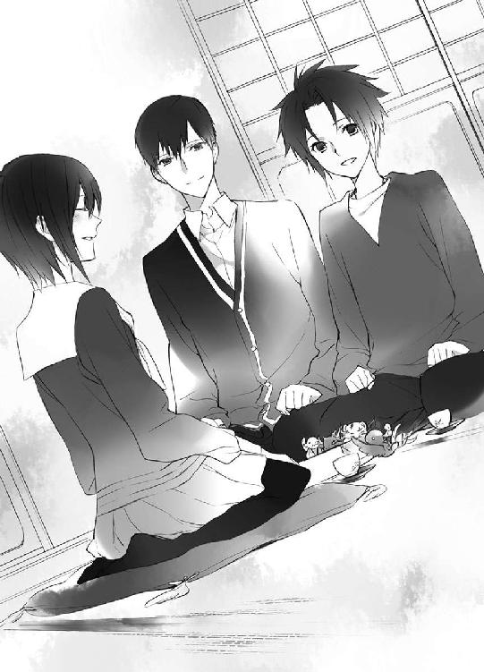
柳生真純を外の通りまで見送って言った蒼司朗に、清志朗は頷く。
「なんでも、一流を受け継ぐのは、大変だよ」
誇れるというのは、そういうことだ。
翌日、清志朗たち親子と蒼司朗は、帝都城東庭の参賀会場に足を運んだ。
大英皇国からの親善大使である姫は、小さいながら毅然と立ち、立派に公務を果たしていた。
膝の上にあった温もりが今は遠くて、ほんの少し、蒼司朗は寂しい気分になる。
短い滞在を終え、大英皇国から来た姫は帝都城から馬車に乗り、帝都を出て横濱に向かう。
帰りの馬車に爺や（柳生信兵衛翁）といっしょに乗っていたのは、影武者ではなく本物の姫だった。
大勢の帝都民に交じり、ピヨ四神をくっつけた蒼司朗は、帝都大通りで姫の馬車を見送る。
（さよなら。また、いつか）
会えればいいな────。
小旗を振った蒼司朗に、はっと振り向いた姫が、ヒマワリの花のように笑った。
了
ようこそ帝都へ
「『玉椿』は、長寿の木として祝賀の歌に多く用いられる春の季語。椿の美称。『侘助』は椿の種類。元日と曲者をかけましたか。洒落たことしますねぇ、蒼司朗くん♡」
アトラクションステージから回収した椿の花に、小此木神官長はくすくす笑う。籠五つ分の花を、鈴宮神官は途方に暮れた目で見つめる。天の戦士が作った花なので傷まないと思うが。
「仕事始めまで保管して、これも、蟲と同じように『薬』にしますか？」
芙蓉薫子といっしょに回収後の椿を探していた姫は、発見した花に目を輝かせる。
「その花、我が寝所に欲しい！ 花に囲まれて眠るのじゃ！」
「お風呂に浮かべるのも素敵ね。奥庭の四神様の御利益で、きっとお肌すべすべよ♡」
「おぉ！ それは名案じゃ！ 叔母上もお誘いして、三人で湯浴みしようではないか！」
そして残った花は姫専用の『帝都のよく効く薬』に加工され、姫の来日記念の土産になった。
豪勢に寝室に振り撒かれ、入浴に使われても、天の戦士の作った神聖な花は神聖なままだ。入浴に使った分も全部薬にしたのではという疑念は、皆の胸の奥に、そっとしまわれた。
著者
流星香
Seika Nagare
９月28日生まれ、天秤座、Ｂ型。大阪生まれ大阪育ちの、大阪在住大阪人。お祭り騒ぎ大好きな、明るく正しい子どもの味方である♡
戦国時代ファンタジーでデビュー。ファンタジー作家として、これまでに多数の著作を発表していて、西洋風、現代モノ等、守備範囲はファミレスのように品揃えが豊富である。
お茶の時間をこよなく愛し、綺麗で美味しいお菓子からたくさんの元気をもらっている♡
イラスト
 空也
空也
Kuya Sakaki
東京在住。
蒼君と若様の周りは清浄な空気で満ちていると思うので、その空気感を描けたらいいなと思ってます。神社行きたいです。
電子版 ビーズログ文庫
お庭番望月蒼司朗参る！
新春の儀と異国の姫君
著者／流星香
イラスト／空也
2013年6月28日電子版（EPUB3）ver.1.0制作
発行者 浜村弘一
発行所 株式会社 エンターブレイン
http://www.enterbrain.co.jp/
デザイン 永野友紀子（Zapp!）
(c)2010 Seika NAGARE
PUBLISHED BY ENTERBRAIN, INC.
本電子書籍はビーズログ文庫『お庭番望月蒼司朗参る！ 新春の儀と異国の姫君』
（2010年8月24日発行 初刷）を元にして制作しております。